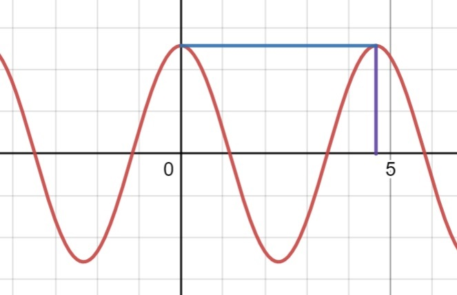
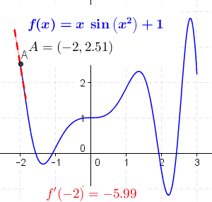

overview of sciMath
description::
× Mcsh-creation: {2023-08-15}
· "(n) mathematics, math, maths (a science (or group of related sciences) dealing with the logic of quantity and shape and arrangement)"
[{2023-08-08 retrieved} http://wordnetweb.princeton.edu/perl/webwn?s=mathematics]
=== shùxué-数学!=sciMath:
· _sntxZhon: 我妈妈教数学。 :: Wǒ māma jiāo shùxué. != My mother teaches mathematics.
name::
* McshEngl.McshEdu000005.last.html//dirEdu//dirMcsh!⇒sciMath,
* McshEngl.dirEdu/McshEdu000005.last.html!⇒sciMath,
* McshEngl.math!=sciMath,
* McshEngl.mathematical!~adjeEngl!=sciMath,
* McshEngl.mathematics!⇒sciMath,
* McshEngl.science.005-mathematics!⇒sciMath,
* McshEngl.science.mathematics!⇒sciMath,
* McshEngl.sciMath!~McsEdu000005,
* McshEngl.sciMath!=science.mathematics,
====== lagoChinese:
* McshZhon.shùxué-数学!=sciMath,
* McshZhon.数学-shùxué!=sciMath,
====== lagoGreek:
* McshElln.μαθηματικά!τα!=sciMath,
* McshElln.μαθηματική-επιστήμη!η!=sciMath,
notation of sciMath
description::
· "Mathematical notation consists of using symbols for representing operations, unspecified numbers, relations, and any other mathematical objects and assembling them into expressions and formulas. Mathematical notation is widely used in mathematics, science, and engineering for representing complex concepts and properties in a concise, unambiguous, and accurate way."
[{2023-08-15 retrieved} https://en.wikipedia.org/wiki/Mathematical_notation]
name::
* McshEngl.MathNotation,
* McshEngl.mathematical-notation,
* McshEngl.notation-of-sciMath,
* McshEngl.sciMath'notation,
info-resource of MathNotation
description::
* https://github.com/parsegon/math-css,
name::
* McshEngl.MathNotation'InfRsc,
MathNotation.synagonism.net (link)
MathNotation.MathML
description::
· MathML.
name::
* McshEngl.MathML,
* McshEngl.MathNotation.MathML,
* McshEngl.sciMath'MathML,
MathNotation.TeX
description::
· "TeX (/tɛx/, see below), stylized within the system as TEX, is a typesetting system which was designed and written by computer scientist and Stanford University professor Donald Knuth[1] and first released in 1978. TeX is a popular means of typesetting complex mathematical formulae; it has been noted as one of the most sophisticated digital typographical systems.[2]
TeX is widely used in academia, especially in mathematics, computer science, economics, political science, engineering, linguistics, physics, statistics, and quantitative psychology. It has long since displaced Unix troff,[b] the previously favored formatting system, in most Unix installations. It is also used for many other typesetting tasks, especially in the form of LaTeX, ConTeXt, and other macro packages.
TeX was designed with two main goals in mind: to allow anybody to produce high-quality books with minimal effort, and to provide a system that would give exactly the same results on all computers, at any point in time (together with the Metafont language for font description and the Computer Modern family of typefaces).[3] TeX is free software, which made it accessible to a wide range of users."
[{2023-08-16 retrieved} https://en.wikipedia.org/wiki/TeX]
name::
* McshEngl.MathNotation.TeX,
* McshEngl.TeX,
* McshEngl.sciMath'TeX,
command of TeX
description::
· TeX-command is an-expression used to format text and layout, and it's widely used in academia and publishing.
name::
* McshEngl.Tex'command!⇒Texcmnd,
* McshEngl.Tex-command!⇒Texcmnd,
* McshEngl.Texcmnd,
* McshEngl.Texcmnd!=Tex'command,
Texcmnd.on-name
description::
* McshEngl.Texcmnd.calligraphic-font \mathcal{letter|number}, \(\mathcal{Aa1}\),
* McshEngl.Texcmnd.dots.c \cdots center..., \(\cdots\),
* McshEngl.Texcmnd.dots.l \ldots low..., \(\ldots\),
* McshEngl.Texcmnd.exponent 4^{32} 4³², \(4^{32}\),
* McshEngl.Texcmnd.fraction 3 \over 4 Ύ, \(3\over 4\),
* McshEngl.Texcmnd.fraction \frac{3}{4} Ύ, \(\frac{3}{4}\),
* McshEngl.Texcmnd.integral \int_{a}^{b} ∫, \(\int_{a}^{b}\),
* McshEngl.Texcmnd.limit \lim_{x\to\infty}, \(\lim_{x \to\infty}\),
* McshEngl.Texcmnd.limit \lim\limits_{x\to\infty}, \(\lim\limits_{x \to\infty}\),
* McshEngl.Texcmnd.product \prod_{}^{} ∏, \(\prod_{a}^{b}\),
* McshEngl.Texcmnd.root.square \sqrt{expr} √,
* McshEngl.Texcmnd.root.n \sqrt[4]{expr} ∜,
* McshEngl.Texcmnd.sigma \sum_{}^{} ∑, \(\sum_{a}^{b}\),
name::
* McshEngl.Texcmnd.specific-on-name,
Texcmnd.on-code
description::
* McshEngl.TexcmndCode.cdots ... dots.center, \(\cdots\),
* McshEngl.TexcmndCode.frac{3}{4} Ύ fraction, \(\frac{3}{4}\),
* McshEngl.TexcmndCode.int_{a}^{b} ∫ integral, \(\int_{a}^{b}\),
* McshEngl.TexcmndCode.ldots ... dots.l, \(\ldots\),
* McshEngl.TexcmndCode.lim\limits_{x\to\infty} limit, \(\lim\limits_{x \to\infty}\),
* McshEngl.TexcmndCode.limits \lim\limits_{x\to\infty} limit, \(\lim\limits_{x \to\infty}\),
* McshEngl.TexcmndCode.lim_{x\to\infty} limit, \(\lim_{x \to\infty}\),
* McshEngl.TexcmndCode.mathcal{letter|number} calligraphic-font, \(\mathcal{Aa1}\),
* McshEngl.TexcmndCode.over 3 \over 4 Ύ fraction, \(3\over 4\),
* McshEngl.TexcmndCode.overrightarrow{\rm AB}, \(\overrightarrow{\rm AB}\),
* McshEngl.TexcmndCode.prod_{}^{} ∏ product, \(\prod_{a}^{b}\),
* McshEngl.TexcmndCode.sqrt[4]{expr} ∜ root.n,
* McshEngl.TexcmndCode.sqrt{expr} √ root.square,
* McshEngl.TexcmndCode.sum_{}^{} ∑ sigma, \(\sum_{a}^{b}\),
name::
* McshEngl.Texcmnd.specs-div.code!⇒TexcmndCode,
* McshEngl.TexcmndCode,
* McshEngl.TexcmndCode!=Texcmnd.specs-div.code,
unicode-character of TeX
description::
· TeX-command that denotes a-unicode-character.
name::
* McshEngl.LaTeX'char!⇒charTex,
* McshEngl.TeX'char!⇒charTex,
* McshEngl.Texchar!⇒charTex,
* McshEngl.Texcmnd.char!⇒charTex,
* McshEngl.Texcmnd.unicode-char!⇒charTex,
* McshEngl.charTex,
* McshEngl.charTex!=TeX-unicode-character,
* McshEngl.charLaTeX!⇒charTex,
* McshEngl.charTeX!⇒charTex,
* McshEngl.symbol.TeX!⇒charTex,
charTex.Greek
description::
* McshEngl.charTexElln.alpha α-Α 945-913,
* McshEngl.charTexElln.beta β-Β 946-914,
* McshEngl.charTexElln.gamma γ-Γ 947-915,
* McshEngl.charTexElln.delta δ-Δ 948-916,
* McshEngl.charTexElln.epsilon ε-Ε 949-917,
* McshEngl.charTexElln.zeta ζ-Ζ 950-918,
* McshEngl.charTexElln.eta η-Η 951-919,
* McshEngl.charTexElln.theta θ-Θ 952-920,
* McshEngl.charTexElln.iota ι-Ι 953-921,
* McshEngl.charTexElln.kappa κ-Κ 954-922,
* McshEngl.charTexElln.lambda λ-Λ 955-923,
* McshEngl.charTexElln.mu μ-Μ 956-924,
* McshEngl.charTexElln.nu ν-Ν 957-925,
* McshEngl.charTexElln.xi ξ-Ξ 958-926,
* McshEngl.charTexElln.omicron ο-Ο 959-927,
* McshEngl.charTexElln.pi π-Π 960-928,
* McshEngl.charTexElln.rho ρ-Ρ 961-929,
* McshEngl.charTexElln.sigma σ-Σ 963-931,
* McshEngl.charTexElln.tau τ-Τ 964-932,
* McshEngl.charTexElln.upsilon υ-Υ 965-933,
* McshEngl.charTexElln.phi φ-Φ 966-934,
* McshEngl.charTexElln.chi χ-Χ 967-935,
* McshEngl.charTexElln.psi ψ-Ψ 968-936,
* McshEngl.charTexElln.omega ω-Ω 969-937,
* McshEngl.charTexElln.varepsilon 𝜖 120598,
* McshEngl.charTexElln.vartheta 𝝑 120657,
* McshEngl.charTexElln.varrho 𝜚 120602,
* McshEngl.charTexElln.varphi 𝜙 120601,
name::
* McshEngl.charTex.Greek!⇒charTexElln,
* McshEngl.charTexElln,
* McshEngl.charTexElln!=charTex.Greek-unicode-char,
charTex.arrow
description::
* McshEngl.charTexArrow.Downarrow ⇓ 8659,
* McshEngl.charTexArrow.Leftarrow ⇐ 8656,
* McshEngl.charTexArrow.Leftrightarrow ⇔ 8660,
* McshEngl.charTexArrow.Lleftarrow ⇚ 8666,
* McshEngl.charTexArrow.Longleftarrow ⟸ 10232,
* McshEngl.charTexArrow.Longleftrightarrow ⟺ 10234,
* McshEngl.charTexArrow.Longrightarrow ⟹ 10233,
* McshEngl.charTexArrow.Lsh ↰ 8624,
* McshEngl.charTexArrow.Rightarrow ⇒ 8658,
* McshEngl.charTexArrow.Rrightarrow ⇛ 8667,
* McshEngl.charTexArrow.Rsh ↱ 8625,
* McshEngl.charTexArrow.Uparrow ⇑ 8657,
* McshEngl.charTexArrow.Updownarrow ⇕ 8661,
* McshEngl.charTexArrow.circlearrowleft ↺ 8634,
* McshEngl.charTexArrow.circlearrowright ↻ 8635,
* McshEngl.charTexArrow.curvearrowleft ↶ 8630,
* McshEngl.charTexArrow.curvearrowright ↷ 8631,
* McshEngl.charTexArrow.dashleftarrow ⤎ 10510,
* McshEngl.charTexArrow.dashrightarrow ⤏ 10511,
* McshEngl.charTexArrow.downarrow ↓ 8595,
* McshEngl.charTexArrow.downdownarrows ⇊ 8650,
* McshEngl.charTexArrow.downharpoonleft ⇃ 8643,
* McshEngl.charTexArrow.downharpoonright ⇂ 8642,
* McshEngl.charTexArrow.hookleftarrow ↩ 8617,
* McshEngl.charTexArrow.hookrightarrow ↪ 8618,
* McshEngl.charTexArrow.leadsto ⇝ 8669,
* McshEngl.charTexArrow.leftarrow ← 8592,
* McshEngl.charTexArrow.leftarrowtail ↢ 8610,
* McshEngl.charTexArrow.leftharpoondown ↽ 8637,
* McshEngl.charTexArrow.leftharpoonup ↼ 8636,
* McshEngl.charTexArrow.leftleftarrows ⇇ 8647,
* McshEngl.charTexArrow.leftrightarrow ↔ 8596,
* McshEngl.charTexArrow.leftrightarrows ⇆ 8646,
* McshEngl.charTexArrow.leftrightharpoons ⇋ 8651,
* McshEngl.charTexArrow.leftrightsquigarrow ↭ 8621,
* McshEngl.charTexArrow.longleftarrow ⟵ 10229,
* McshEngl.charTexArrow.longleftrightarrow ⟷ 10231,
* McshEngl.charTexArrow.longmapsto ⟼ 10236,
* McshEngl.charTexArrow.longrightarrow ⟶ 10230,
* McshEngl.charTexArrow.looparrowleft ↫ 8619,
* McshEngl.charTexArrow.looparrowright ↬ 8620,
* McshEngl.charTexArrow.mapsto ↦ 8614,
* McshEngl.charTexArrow.multimap ⊸ 8888,
* McshEngl.charTexArrow.nLeftarrow ⇍ 8653,
* McshEngl.charTexArrow.nLeftrightarrow ⇎ 8654,
* McshEngl.charTexArrow.nRightarrow ⇏ 8655,
* McshEngl.charTexArrow.nearrow ↗ 8599,
* McshEngl.charTexArrow.nleftarrow ↚ 8602,
* McshEngl.charTexArrow.nleftrightarrow ↮ 8622,
* McshEngl.charTexArrow.nrightarrow ↛ 8603,
* McshEngl.charTexArrow.nwarrow ↖ 8598,
* McshEngl.charTexArrow.rightarrow → 8594,
* McshEngl.charTexArrow.rightarrowtail ↣ 8611,
* McshEngl.charTexArrow.rightharpoondown ⇁ 8641,
* McshEngl.charTexArrow.rightharpoonup ⇀ 8640,
* McshEngl.charTexArrow.rightleftarrows ⇄ 8644,
* McshEngl.charTexArrow.rightleftharpoons ⇌ 8652,
* McshEngl.charTexArrow.rightrightarrows ⇉ 8649,
* McshEngl.charTexArrow.rightsquigarrow ↝ 8605,
* McshEngl.charTexArrow.searrow ↘ 8600,
* McshEngl.charTexArrow.swarrow ↙ 8601,
* McshEngl.charTexArrow.to → 8594,
* McshEngl.charTexArrow.twoheadleftarrow ↞ 8606,
* McshEngl.charTexArrow.twoheadrightarrow ↠ 8608,
* McshEngl.charTexArrow.uparrow ↑ 8593,
* McshEngl.charTexArrow.updownarrow ↕ 8597,
* McshEngl.charTexArrow.upharpoonleft ↿ 8639,
* McshEngl.charTexArrow.upharpoonright ↾ 8638,
* McshEngl.charTexArrow.upuparrows ⇈ 8648,
name::
* McshEngl.charTex.arrow!⇒charTexArrow,
* McshEngl.charTexArrow,
* McshEngl.charTexArrow!=charTex.arrow-unicode-char,
charTex.IN-UNICODE-per-TeX-name
description::
· Texchar that is also a-unicode-character:
* McshEngl.charTexCode.Alpha Α; 913,
* McshEngl.charTexCode.Beta Β; 914,
* McshEngl.charTexCode.Box ◻ 9723,
* McshEngl.charTexCode.C ℂ; 8450,
* McshEngl.charTexCode.Chi Χ; 935,
* McshEngl.charTexCode.Delta Δ; 916,
* McshEngl.charTexCode.Downarrow ⇓ 8659,
* McshEngl.charTexCode.Epsilon Ε; 917,
* McshEngl.charTexCode.Eta Η; 919,
* McshEngl.charTexCode.Gamma Γ; 915,
* McshEngl.charTexCode.Im ℑ; 8465,
* McshEngl.charTexCode.Iota Ι; 921,
* McshEngl.charTexCode.Kappa Κ; 922,
* McshEngl.charTexCode.Lambda Λ; 923,
* McshEngl.charTexCode.Leftarrow ⇐ 8656,
* McshEngl.charTexCode.Leftrightarrow ⇔ 8660,
* McshEngl.charTexCode.Lleftarrow ⇚ 8666,
* McshEngl.charTexCode.Longleftarrow ⟸ 10232,
* McshEngl.charTexCode.Longleftrightarrow ⟺ 10234,
* McshEngl.charTexCode.Longrightarrow ⟹ 10233,
* McshEngl.charTexCode.Lsh ↰ 8624,
* McshEngl.charTexCode.Mu Μ; 924,
* McshEngl.charTexCode.N ℕ; 8469,
* McshEngl.charTexCode.Nu Ν; 925,
* McshEngl.charTexCode.O ∅ 8709,
* McshEngl.charTexCode.Omega Ω; 937,
* McshEngl.charTexCode.Omicron Ο; 927,
* McshEngl.charTexCode.Phi Φ; 934,
* McshEngl.charTexCode.Pi Π; 928,
* McshEngl.charTexCode.Psi Ψ; 936,
* McshEngl.charTexCode.Q ℚ; 8474,
* McshEngl.charTexCode.R ℝ; 8477,
* McshEngl.charTexCode.Re ℜ; 8476,
* McshEngl.charTexCode.Rho Ρ; 929,
* McshEngl.charTexCode.Rightarrow ⇒ 8658,
* McshEngl.charTexCode.Rrightarrow ⇛ 8667,
* McshEngl.charTexCode.Rsh ↱ 8625,
* McshEngl.charTexCode.Sigma Σ; 931,
* McshEngl.charTexCode.Tau Τ; 932,
* McshEngl.charTexCode.Theta Θ; 920,
* McshEngl.charTexCode.Uparrow ⇑ 8657,
* McshEngl.charTexCode.Updownarrow ⇕ 8661,
* McshEngl.charTexCode.Upsilon Υ; 933,
* McshEngl.charTexCode.Xi Ξ; 926,
* McshEngl.charTexCode.Z ℤ; 8484,
* McshEngl.charTexCode.Zeta Ζ; 918,
* McshEngl.charTexCode.aleph ℵ; 8501,
* McshEngl.charTexCode.alpha α; 945,
* McshEngl.charTexCode.amalg ⨿; 10815,
* McshEngl.charTexCode.angle ∠; 8736,
* McshEngl.charTexCode.approx ≈; 8776,
* McshEngl.charTexCode.ast ∗; 8727,
* McshEngl.charTexCode.asymp ≍; 8781,
* McshEngl.charTexCode.beta β; 946,
* McshEngl.charTexCode.beth ℶ; 8502,
* McshEngl.charTexCode.bigcirc ◯; 9711,
* McshEngl.charTexCode.bigtriangledown ▽; 9661,
* McshEngl.charTexCode.bigtriangleup △; 9651,
* McshEngl.charTexCode.bot ⊥; 8869,
* McshEngl.charTexCode.bowtie ⋈; 8904,
* McshEngl.charTexCode.bullet ∙; 8729,
* McshEngl.charTexCode.cap ∩; 8745,
* McshEngl.charTexCode.cdot ⋅; 8901,
* McshEngl.charTexCode.chi χ; 967,
* McshEngl.charTexCode.circ ∘; 8728,
* McshEngl.charTexCode.circlearrowleft ↺; 8634,
* McshEngl.charTexCode.circlearrowright ↻; 8635,
* McshEngl.charTexCode.cong ≅; 8773,
* McshEngl.charTexCode.cup ∪; 8746,
* McshEngl.charTexCode.curvearrowleft ↶; 8630,
* McshEngl.charTexCode.curvearrowright ↷; 8631,
* McshEngl.charTexCode.dagger †; 8224,
* McshEngl.charTexCode.dashleftarrow ⤎; 10510,
* McshEngl.charTexCode.dashrightarrow ⤏; 10511,
* McshEngl.charTexCode.dashv ⊣; 8867,
* McshEngl.charTexCode.ddagger ‡; 8225,
* McshEngl.charTexCode.delta δ; 948,
* McshEngl.charTexCode.diamond ⋄; 8900,
* McshEngl.charTexCode.digamma ϝ; 989,
* McshEngl.charTexCode.div χ; 247,
* McshEngl.charTexCode.doteq ≐; 8784,
* McshEngl.charTexCode.downarrow ↓; 8595,
* McshEngl.charTexCode.downdownarrows ⇊ 8650,
* McshEngl.charTexCode.downharpoonleft ⇃ 8643,
* McshEngl.charTexCode.downharpoonright ⇂ 8642,
* McshEngl.charTexCode.ell ℓ 8467,
* McshEngl.charTexCode.emptyset ∅ 8709,
* McshEngl.charTexCode.epsilon ε-Ε 949-917,
* McshEngl.charTexCode.equiv ≡ 8801,
* McshEngl.charTexCode.eta η-Η 951-919,
* McshEngl.charTexCode.eth π 240,
* McshEngl.charTexCode.exists!: ∃! 8707-33,
* McshEngl.charTexCode.exists ∃ 8707,
* McshEngl.charTexCode.forall ∀ 8704,
* McshEngl.charTexCode.gamma γ-Γ 947-915,
* McshEngl.charTexCode.geq ≥ 8805,
* McshEngl.charTexCode.geqslant ⩾ 10878,
* McshEngl.charTexCode.gets ← 8592,
* McshEngl.charTexCode.gg ≫ 8811,
* McshEngl.charTexCode.ggg ⋙ 8921,
* McshEngl.charTexCode.gimel ℷ 8503,
* McshEngl.charTexCode.gnapprox ⪊ 10890,
* McshEngl.charTexCode.gneq ⪈ 10888,
* McshEngl.charTexCode.gneqq ≩ 8809,
* McshEngl.charTexCode.gnsim ⋧ 8935,
* McshEngl.charTexCode.gvertneqq ≩ 8809,
* McshEngl.charTexCode.hbar ℏ 8463,
* McshEngl.charTexCode.hookleftarrow ↩ 8617,
* McshEngl.charTexCode.hookrightarrow ↪ 8618,
* McshEngl.charTexCode.iff ⟺ 10234,
* McshEngl.charTexCode.implies ⟹ 10233,
* McshEngl.charTexCode.in ∈ 8712,
* McshEngl.charTexCode.infty ∞ 8734,
* McshEngl.charTexCode.int ∫ 8747,
* McshEngl.charTexCode.iota ι-Ι 953-921,
* McshEngl.charTexCode.kappa κ-Κ 954-922,
* McshEngl.charTexCode.lambda λ-Λ 955-923,
* McshEngl.charTexCode.land ∧ 8743,
* McshEngl.charTexCode.langle ⟨ 10216,
* McshEngl.charTexCode.lceil ⌈ 8968,
* McshEngl.charTexCode.leadsto ⇝ 8669,
* McshEngl.charTexCode.leftarrow ← 8592,
* McshEngl.charTexCode.leftarrowtail ↢ 8610,
* McshEngl.charTexCode.leftharpoondown ↽ 8637,
* McshEngl.charTexCode.leftharpoonup ↼ 8636,
* McshEngl.charTexCode.leftleftarrows ⇇ 8647,
* McshEngl.charTexCode.leftrightarrow ↔ 8596,
* McshEngl.charTexCode.leftrightarrows ⇆ 8646,
* McshEngl.charTexCode.leftrightharpoons ⇋ 8651,
* McshEngl.charTexCode.leftrightsquigarrow ↭ 8621,
* McshEngl.charTexCode.leq ≤ 8804,
* McshEngl.charTexCode.leqslant ⩽ 10877,
* McshEngl.charTexCode.lfloor ⌊ 8970,
* McshEngl.charTexCode.ll ≪ 8810,
* McshEngl.charTexCode.llcorner ⌞ 8990,
* McshEngl.charTexCode.lll ⋘ 8920,
* McshEngl.charTexCode.lnapprox ⪉ 10889,
* McshEngl.charTexCode.lneq ⪇ 10887,
* McshEngl.charTexCode.lneqq ≨ 8808,
* McshEngl.charTexCode.lnsim ⋦ 8934,
* McshEngl.charTexCode.longleftarrow ⟵ 10229,
* McshEngl.charTexCode.longleftrightarrow ⟷ 10231,
* McshEngl.charTexCode.longmapsto ⟼ 10236,
* McshEngl.charTexCode.longrightarrow ⟶ 10230,
* McshEngl.charTexCode.looparrowleft ↫ 8619,
* McshEngl.charTexCode.looparrowright ↬ 8620,
* McshEngl.charTexCode.lor ∨ 8744,
* McshEngl.charTexCode.lrcorner ⌟ 8991,
* McshEngl.charTexCode.lvertneqq ≨ 8808,
* McshEngl.charTexCode.mapsto ↦ 8614,
* McshEngl.charTexCode.measuredangle ∡ 8737,
* McshEngl.charTexCode.mid ∣ 8739,
* McshEngl.charTexCode.models ⊨ 8872,
* McshEngl.charTexCode.mp ∓ 8723,
* McshEngl.charTexCode.mu μ-Μ 956-924,
* McshEngl.charTexCode.multimap ⊸ 8888,
* McshEngl.charTexCode.nLeftarrow ⇍ 8653,
* McshEngl.charTexCode.nLeftrightarrow ⇎ 8654,
* McshEngl.charTexCode.nRightarrow ⇏ 8655,
* McshEngl.charTexCode.nVDash ⊯ 8879,
* McshEngl.charTexCode.nVdash ⊮ 8878,
* McshEngl.charTexCode.nabla ∇ 8711,
* McshEngl.charTexCode.ncong ≆ 8774,
* McshEngl.charTexCode.ne ≠ 8800,
* McshEngl.charTexCode.notequal ≠ 8800,
* McshEngl.charTexCode.nearrow ↗ 8599,
* McshEngl.charTexCode.neg ¬ 172,
* McshEngl.charTexCode.neq ≠ 8800,
* McshEngl.charTexCode.nexists ∄ 8708,
* McshEngl.charTexCode.ngeq ≱ 8817,
* McshEngl.charTexCode.ngeqq ≱ 8817,
* McshEngl.charTexCode.ngeqslant ⪈ 10888,
* McshEngl.charTexCode.ngtr ≯ 8815,
* McshEngl.charTexCode.ni ∋ 8715,
* McshEngl.charTexCode.nleftarrow ↚ 8602,
* McshEngl.charTexCode.nleftrightarrow ↮ 8622,
* McshEngl.charTexCode.nleq ≰ 8816,
* McshEngl.charTexCode.nleqq ≰ 8816,
* McshEngl.charTexCode.nleqslant ⪇ 10887,
* McshEngl.charTexCode.nless ≮ 8814,
* McshEngl.charTexCode.nmid ∤ 8740,
* McshEngl.charTexCode.notsubset ⊄ 8836,
* McshEngl.charTexCode.notsupset ⊅ 8837,
* McshEngl.charTexCode.notin ∉ 8713,
* McshEngl.charTexCode.nparallel ∦ 8742,
* McshEngl.charTexCode.nprec ⊀ 8832,
* McshEngl.charTexCode.npreceq ⋠ 8928,
* McshEngl.charTexCode.nrightarrow ↛ 8603,
* McshEngl.charTexCode.nshortmid ∤ 8740,
* McshEngl.charTexCode.nshortparallel ∦ 8742,
* McshEngl.charTexCode.nsim ≁ 8769,
* McshEngl.charTexCode.nsubset ⊄ 8836,
* McshEngl.charTexCode.nsubseteq ⊈ 8840,
* McshEngl.charTexCode.nsubseteqq ⊈ 8840,
* McshEngl.charTexCode.nsucc ⊁ 8833,
* McshEngl.charTexCode.nsucceq ⋡ 8929,
* McshEngl.charTexCode.nsupset ⊅ 8837,
* McshEngl.charTexCode.nsupseteq ⊉ 8841,
* McshEngl.charTexCode.nsupseteqq ⊉ 8841,
* McshEngl.charTexCode.ntriangleleft ⋪ 8938,
* McshEngl.charTexCode.ntrianglelefteq ⋬ 8940,
* McshEngl.charTexCode.ntriangleright ⋫ 8939,
* McshEngl.charTexCode.ntrianglerighteq ⋭ 8941,
* McshEngl.charTexCode.nu ν-Ν 957-925,
* McshEngl.charTexCode.nvDash ⊭ 8877,
* McshEngl.charTexCode.nvdash ⊬ 8876,
* McshEngl.charTexCode.nwarrow ↖ 8598,
* McshEngl.charTexCode.odot ⊙ 8857,
* McshEngl.charTexCode.omega ω-Ω 969-937,
* McshEngl.charTexCode.omicron ο-Ο 959-927,
* McshEngl.charTexCode.ominus ⊖ 8854,
* McshEngl.charTexCode.oplus ⊕ 8853,
* McshEngl.charTexCode.oslash ⊘ 8856,
* McshEngl.charTexCode.otimes ⊗ 8855,
* McshEngl.charTexCode.parallel ∥ 8741,
* McshEngl.charTexCode.partial ∂ 8706,
* McshEngl.charTexCode.perp ⊥ 8869,
* McshEngl.charTexCode.phi φ 966,
* McshEngl.charTexCode.phi φ-Φ 966-934,
* McshEngl.charTexCode.pi π-Π 960-928,
* McshEngl.charTexCode.pm ± 177,
* McshEngl.charTexCode.prec ≺ 8826,
* McshEngl.charTexCode.preceq ⪯ 10927,
* McshEngl.charTexCode.precnapprox ⪹ 10937,
* McshEngl.charTexCode.precneqq ⪵ 10933,
* McshEngl.charTexCode.precnsim ⋨ 8936,
* McshEngl.charTexCode.propto ∝ 8733,
* McshEngl.charTexCode.psi ψ 968,
* McshEngl.charTexCode.psi ψ-Ψ 968-936,
* McshEngl.charTexCode.rangle ⟩ 10217,
* McshEngl.charTexCode.rceil ⌉ 8969,
* McshEngl.charTexCode.rfloor ⌋ 8971,
* McshEngl.charTexCode.rho ρ-Ρ 961-929,
* McshEngl.charTexCode.rightarrow → 8594,
* McshEngl.charTexCode.rightarrowtail ↣ 8611,
* McshEngl.charTexCode.rightharpoondown ⇁ 8641,
* McshEngl.charTexCode.rightharpoonup ⇀ 8640,
* McshEngl.charTexCode.rightleftarrows ⇄ 8644,
* McshEngl.charTexCode.rightleftharpoons ⇌ 8652,
* McshEngl.charTexCode.rightrightarrows ⇉ 8649,
* McshEngl.charTexCode.rightsquigarrow ↝ 8605,
* McshEngl.charTexCode.searrow ↘ 8600,
* McshEngl.charTexCode.setminus ∖ 8726,
* McshEngl.charTexCode.sigma σ-Σ 963-931,
* McshEngl.charTexCode.sim ∼ 8764,
* McshEngl.charTexCode.simeq ≃ 8771,
* McshEngl.charTexCode.sqcap ⊓ 8851,
* McshEngl.charTexCode.sqcup ⊔ 8852,
* McshEngl.charTexCode.sqrt √ 8730,
* McshEngl.charTexCode.sqrt3 ∛ 8731,
* McshEngl.charTexCode.sqrt[4]{expr} ∜ 8732,
* McshEngl.charTexCode.sqrt{expr} √ 8730,
* McshEngl.charTexCode.sqsubset ⊏ 8847,
* McshEngl.charTexCode.sqsubseteq ⊑ 8849,
* McshEngl.charTexCode.sqsupset ⊐ 8848,
* McshEngl.charTexCode.sqsupseteq ⊒ 8850,
* McshEngl.charTexCode.square ◻ 9723,
* McshEngl.charTexCode.star ⋆ 8902,
* McshEngl.charTexCode.subset ⊂ 8834,
* McshEngl.charTexCode.subseteq ⊆ 8838,
* McshEngl.charTexCode.subsetneq ⊊ 8842,
* McshEngl.charTexCode.subsetneqq ⫋ 10955,
* McshEngl.charTexCode.succ ≻ 8827,
* McshEngl.charTexCode.succeq ⪰ 10928,
* McshEngl.charTexCode.succnapprox ⪺ 10938,
* McshEngl.charTexCode.succneqq ⪶ 10934,
* McshEngl.charTexCode.succnsim ⋩ 8937,
* McshEngl.charTexCode.sum ∑ 8721,
* McshEngl.charTexCode.supset ⊃ 8835,
* McshEngl.charTexCode.supseteq ⊇ 8839,
* McshEngl.charTexCode.supsetneq ⊋ 8843,
* McshEngl.charTexCode.supsetneqq ⫌ 10956,
* McshEngl.charTexCode.swarrow ↙ 8601,
* McshEngl.charTexCode.tau τ-Τ 964-932,
* McshEngl.charTexCode.theta θ 952,
* McshEngl.charTexCode.theta θ-Θ 952-920,
* McshEngl.charTexCode.times Χ 215,
* McshEngl.charTexCode.to → 8594,
* McshEngl.charTexCode.top ⊤ 8868,
* McshEngl.charTexCode.triangle △ 9651,
* McshEngl.charTexCode.triangleleft ◃ 9667,
* McshEngl.charTexCode.triangleright ▹ 9657,
* McshEngl.charTexCode.twoheadleftarrow ↞ 8606,
* McshEngl.charTexCode.twoheadrightarrow ↠ 8608,
* McshEngl.charTexCode.ulcorner ⌜ 8988,
* McshEngl.charTexCode.uparrow ↑ 8593,
* McshEngl.charTexCode.updownarrow ↕ 8597,
* McshEngl.charTexCode.upharpoonleft ↿ 8639,
* McshEngl.charTexCode.upharpoonright ↾ 8638,
* McshEngl.charTexCode.uplus ⊎ 8846,
* McshEngl.charTexCode.upsilon υ-Υ 965-933,
* McshEngl.charTexCode.upuparrows ⇈ 8648,
* McshEngl.charTexCode.urcorner ⌝ 8989,
* McshEngl.charTexCode.varepsilon 𝜖 120598,
* McshEngl.charTexCode.varnothing ∅ 8709,
* McshEngl.charTexCode.varphi 𝜙 120601,
* McshEngl.charTexCode.varpi 𝜛 120603,
* McshEngl.charTexCode.varrho 𝜚 120602,
* McshEngl.charTexCode.varsubsetneq ⊊ 8842,
* McshEngl.charTexCode.varsubsetneqq ⫋ 10955,
* McshEngl.charTexCode.varsupsetneq ⊋ 8843,
* McshEngl.charTexCode.varsupsetneqq ⫌ 10956,
* McshEngl.charTexCode.vartheta 𝝑 120657,
* McshEngl.charTexCode.vdash ⊢ 8866,
* McshEngl.charTexCode.vee ∨ 8744,
* McshEngl.charTexCode.wedge ∧ 8743,
* McshEngl.charTexCode.wp ℘ 8472,
* McshEngl.charTexCode.wr ≀ 8768,
* McshEngl.charTexCode.xi ξ-Ξ 958-926,
* McshEngl.charTexCode.zeta ζ-Ζ 950-918,
* McshEngl.charTexCode.| ‖ 8214,
name::
* McshEngl.Texchar.in-unicode-per-code!⇒charTexCode,
* McshEngl.charTexCode,
* McshEngl.charTexCode!=Texchar.in-unicode-per-TeX-name,
charTex.IN-UNICODE-per-int-codepoint
description::
* McshEngl.charTexInt.33 exists: !,
* McshEngl.charTexInt.172 neg ¬,
* McshEngl.charTexInt.177 pm ±,
* McshEngl.charTexInt.215 times Χ,
* McshEngl.charTexInt.240 eth π,
* McshEngl.charTexInt.247 div χ,
* McshEngl.charTexInt.913 Alpha Α,
* McshEngl.charTexInt.914 Beta Β,
* McshEngl.charTexInt.915 Gamma Γ,
* McshEngl.charTexInt.916 Delta Δ,
* McshEngl.charTexInt.917 Epsilon Ε,
* McshEngl.charTexInt.918 Zeta Ζ,
* McshEngl.charTexInt.919 Eta Η,
* McshEngl.charTexInt.920 Theta Θ,
* McshEngl.charTexInt.921 Iota Ι,
* McshEngl.charTexInt.922 Kappa Κ,
* McshEngl.charTexInt.923 Lambda Λ,
* McshEngl.charTexInt.924 Mu Μ,
* McshEngl.charTexInt.925 Nu Ν,
* McshEngl.charTexInt.926 Xi Ξ,
* McshEngl.charTexInt.927 Omicron Ο,
* McshEngl.charTexInt.928 Pi Π,
* McshEngl.charTexInt.929 Rho Ρ,
* McshEngl.charTexInt.931 Sigma Σ,
* McshEngl.charTexInt.932 Tau Τ,
* McshEngl.charTexInt.933 Upsilon Υ,
* McshEngl.charTexInt.934 Phi Φ,
* McshEngl.charTexInt.935 Chi Χ,
* McshEngl.charTexInt.936 Psi Ψ,
* McshEngl.charTexInt.937 Omega Ω,
* McshEngl.charTexInt.945 alpha α,
* McshEngl.charTexInt.946 beta β,
* McshEngl.charTexInt.947-915 gamma γ-Γ,
* McshEngl.charTexInt.948 delta δ,
* McshEngl.charTexInt.949-917 epsilon ε-Ε,
* McshEngl.charTexInt.950-918 zeta ζ-Ζ,
* McshEngl.charTexInt.951-919 eta η-Η,
* McshEngl.charTexInt.952 theta θ,
* McshEngl.charTexInt.952-920 theta θ-Θ,
* McshEngl.charTexInt.953-921 iota ι-Ι,
* McshEngl.charTexInt.954-922 kappa κ-Κ,
* McshEngl.charTexInt.955-923 lambda λ-Λ,
* McshEngl.charTexInt.956-924 mu μ-Μ,
* McshEngl.charTexInt.957-925 nu ν-Ν,
* McshEngl.charTexInt.958-926 xi ξ-Ξ,
* McshEngl.charTexInt.959-927 omicron ο-Ο,
* McshEngl.charTexInt.960-928 pi π-Π,
* McshEngl.charTexInt.961-929 rho ρ-Ρ,
* McshEngl.charTexInt.963-931 sigma σ-Σ,
* McshEngl.charTexInt.964-932 tau τ-Τ,
* McshEngl.charTexInt.965-933 upsilon υ-Υ,
* McshEngl.charTexInt.966 phi φ,
* McshEngl.charTexInt.966-934 phi φ-Φ,
* McshEngl.charTexInt.967 chi χ,
* McshEngl.charTexInt.968 psi ψ,
* McshEngl.charTexInt.968-936 psi ψ-Ψ,
* McshEngl.charTexInt.969-937 omega ω-Ω,
* McshEngl.charTexInt.989 digamma ϝ,
* McshEngl.charTexInt.8214 | ‖,
* McshEngl.charTexInt.8224 dagger †,
* McshEngl.charTexInt.8225 ddagger ‡,
* McshEngl.charTexInt.8450 C ℂ,
* McshEngl.charTexInt.8463 hbar ℏ,
* McshEngl.charTexInt.8465 Im ℑ,
* McshEngl.charTexInt.8467 ell ℓ,
* McshEngl.charTexInt.8469 N ℕ,
* McshEngl.charTexInt.8472 wp ℘,
* McshEngl.charTexInt.8474 Q ℚ,
* McshEngl.charTexInt.8476 Re ℜ,
* McshEngl.charTexInt.8477 R ℝ,
* McshEngl.charTexInt.8484 Z ℤ,
* McshEngl.charTexInt.8501 aleph ℵ,
* McshEngl.charTexInt.8502 beth ℶ,
* McshEngl.charTexInt.8503 gimel ℷ,
* McshEngl.charTexInt.8592 gets ←,
* McshEngl.charTexInt.8592 leftarrow ←,
* McshEngl.charTexInt.8593 uparrow ↑,
* McshEngl.charTexInt.8594 rightarrow →,
* McshEngl.charTexInt.8594 to →,
* McshEngl.charTexInt.8595 downarrow ↓,
* McshEngl.charTexInt.8596 leftrightarrow ↔,
* McshEngl.charTexInt.8597 updownarrow ↕,
* McshEngl.charTexInt.8598 nwarrow ↖,
* McshEngl.charTexInt.8599 nearrow ↗,
* McshEngl.charTexInt.8600 searrow ↘,
* McshEngl.charTexInt.8601 swarrow ↙,
* McshEngl.charTexInt.8602 nleftarrow ↚,
* McshEngl.charTexInt.8603 nrightarrow ↛,
* McshEngl.charTexInt.8605 rightsquigarrow ↝,
* McshEngl.charTexInt.8606 twoheadleftarrow ↞,
* McshEngl.charTexInt.8608 twoheadrightarrow ↠,
* McshEngl.charTexInt.8610 leftarrowtail ↢,
* McshEngl.charTexInt.8611 rightarrowtail ↣,
* McshEngl.charTexInt.8614 mapsto ↦,
* McshEngl.charTexInt.8617 hookleftarrow ↩,
* McshEngl.charTexInt.8618 hookrightarrow ↪,
* McshEngl.charTexInt.8619 looparrowleft ↫,
* McshEngl.charTexInt.8620 looparrowright ↬,
* McshEngl.charTexInt.8621 leftrightsquigarrow ↭,
* McshEngl.charTexInt.8622 nleftrightarrow ↮,
* McshEngl.charTexInt.8624 Lsh ↰,
* McshEngl.charTexInt.8625 Rsh ↱,
* McshEngl.charTexInt.8630 curvearrowleft ↶,
* McshEngl.charTexInt.8631 curvearrowright ↷,
* McshEngl.charTexInt.8634 circlearrowleft ↺,
* McshEngl.charTexInt.8635 circlearrowright ↻,
* McshEngl.charTexInt.8636 leftharpoonup ↼,
* McshEngl.charTexInt.8637 leftharpoondown ↽,
* McshEngl.charTexInt.8638 upharpoonright ↾,
* McshEngl.charTexInt.8639 upharpoonleft ↿,
* McshEngl.charTexInt.8640 rightharpoonup ⇀,
* McshEngl.charTexInt.8641 rightharpoondown ⇁,
* McshEngl.charTexInt.8642 downharpoonright ⇂,
* McshEngl.charTexInt.8643 downharpoonleft ⇃,
* McshEngl.charTexInt.8644 rightleftarrows ⇄,
* McshEngl.charTexInt.8646 leftrightarrows ⇆,
* McshEngl.charTexInt.8647 leftleftarrows ⇇,
* McshEngl.charTexInt.8648 upuparrows ⇈,
* McshEngl.charTexInt.8649 rightrightarrows ⇉,
* McshEngl.charTexInt.8650 downdownarrows ⇊,
* McshEngl.charTexInt.8651 leftrightharpoons ⇋,
* McshEngl.charTexInt.8652 rightleftharpoons ⇌,
* McshEngl.charTexInt.8653 nLeftarrow ⇍,
* McshEngl.charTexInt.8654 nLeftrightarrow ⇎,
* McshEngl.charTexInt.8655 nRightarrow ⇏,
* McshEngl.charTexInt.8656 Leftarrow ⇐,
* McshEngl.charTexInt.8657 Uparrow ⇑,
* McshEngl.charTexInt.8658 Rightarrow ⇒,
* McshEngl.charTexInt.8659 Downarrow ⇓,
* McshEngl.charTexInt.8660 Leftrightarrow ⇔,
* McshEngl.charTexInt.8661 Updownarrow ⇕,
* McshEngl.charTexInt.8666 Lleftarrow ⇚,
* McshEngl.charTexInt.8667 Rrightarrow ⇛,
* McshEngl.charTexInt.8669 leadsto ⇝,
* McshEngl.charTexInt.8704 forall ∀,
* McshEngl.charTexInt.8706 partial ∂,
* McshEngl.charTexInt.8707 exists ∃,
* McshEngl.charTexInt.8708 nexists ∄,
* McshEngl.charTexInt.8709 O ∅,
* McshEngl.charTexInt.8709 emptyset ∅,
* McshEngl.charTexInt.8709 varnothing ∅,
* McshEngl.charTexInt.8711 nabla ∇,
* McshEngl.charTexInt.8712 in ∈,
* McshEngl.charTexInt.8713 notin ∉,
* McshEngl.charTexInt.8715 ni ∋,
* McshEngl.charTexInt.8721 sum ∑,
* McshEngl.charTexInt.8723 mp ∓,
* McshEngl.charTexInt.8726 setminus ∖,
* McshEngl.charTexInt.8727 ast ∗,
* McshEngl.charTexInt.8728 circ ∘,
* McshEngl.charTexInt.8729 bullet ∙,
* McshEngl.charTexInt.8730 sqrt √,
* McshEngl.charTexInt.8731 sqrt[4]{expr} ∛,
* McshEngl.charTexInt.8732 sqrt[4]{expr} ∜,
* McshEngl.charTexInt.8733 propto ∝,
* McshEngl.charTexInt.8734 infty ∞,
* McshEngl.charTexInt.8736 angle ∠,
* McshEngl.charTexInt.8737 measuredangle ∡,
* McshEngl.charTexInt.8739 mid ∣,
* McshEngl.charTexInt.8740 nmid ∤,
* McshEngl.charTexInt.8740 nshortmid ∤,
* McshEngl.charTexInt.8741 parallel ∥,
* McshEngl.charTexInt.8742 nparallel ∦,
* McshEngl.charTexInt.8742 nshortparallel ∦,
* McshEngl.charTexInt.8743 land ∧,
* McshEngl.charTexInt.8743 wedge ∧,
* McshEngl.charTexInt.8744 lor ∨,
* McshEngl.charTexInt.8744 vee ∨,
* McshEngl.charTexInt.8745 cap ∩,
* McshEngl.charTexInt.8746 cup ∪,
* McshEngl.charTexInt.8747 int ∫,
* McshEngl.charTexInt.8764 sim ∼,
* McshEngl.charTexInt.8768 wr ≀,
* McshEngl.charTexInt.8769 nsim ≁,
* McshEngl.charTexInt.8771 simeq ≃,
* McshEngl.charTexInt.8773 cong ≅,
* McshEngl.charTexInt.8774 ncong ≆,
* McshEngl.charTexInt.8776 approx ≈,
* McshEngl.charTexInt.8781 asymp ≍,
* McshEngl.charTexInt.8784 doteq ≐,
* McshEngl.charTexInt.8800 ne ≠,
* McshEngl.charTexInt.8800 neq ≠,
* McshEngl.charTexInt.8801 equiv ≡,
* McshEngl.charTexInt.8804 leq ≤,
* McshEngl.charTexInt.8805 geq ≥,
* McshEngl.charTexInt.8808 lneqq ≨,
* McshEngl.charTexInt.8808 lvertneqq ≨,
* McshEngl.charTexInt.8809 gneqq ≩,
* McshEngl.charTexInt.8809 gvertneqq ≩,
* McshEngl.charTexInt.8810 ll ≪,
* McshEngl.charTexInt.8811 gg ≫,
* McshEngl.charTexInt.8814 nless ≮,
* McshEngl.charTexInt.8815 ngtr ≯,
* McshEngl.charTexInt.8816 nleq ≰,
* McshEngl.charTexInt.8816 nleqq ≰,
* McshEngl.charTexInt.8817 ngeq ≱,
* McshEngl.charTexInt.8817 ngeqq ≱,
* McshEngl.charTexInt.8826 prec ≺,
* McshEngl.charTexInt.8827 succ ≻,
* McshEngl.charTexInt.8832 nprec ⊀,
* McshEngl.charTexInt.8833 nsucc ⊁,
* McshEngl.charTexInt.8834 subset ⊂,
* McshEngl.charTexInt.8835 supset ⊃,
* McshEngl.charTexInt.8836 notsubset ⊄,
* McshEngl.charTexInt.8836 nsubset ⊄,
* McshEngl.charTexInt.8837 notsupset ⊅,
* McshEngl.charTexInt.8837 nsupset ⊅,
* McshEngl.charTexInt.8838 subseteq ⊆,
* McshEngl.charTexInt.8839 supseteq ⊇,
* McshEngl.charTexInt.8840 nsubseteq ⊈,
* McshEngl.charTexInt.8840 nsubseteqq ⊈,
* McshEngl.charTexInt.8841 nsupseteq ⊉,
* McshEngl.charTexInt.8841 nsupseteqq ⊉,
* McshEngl.charTexInt.8842 subsetneq ⊊,
* McshEngl.charTexInt.8842 varsubsetneq ⊊,
* McshEngl.charTexInt.8843 supsetneq ⊋,
* McshEngl.charTexInt.8843 varsupsetneq ⊋,
* McshEngl.charTexInt.8846 uplus ⊎,
* McshEngl.charTexInt.8847 sqsubset ⊏,
* McshEngl.charTexInt.8848 sqsupset ⊐,
* McshEngl.charTexInt.8849 sqsubseteq ⊑,
* McshEngl.charTexInt.8850 sqsupseteq ⊒,
* McshEngl.charTexInt.8851 sqcap ⊓,
* McshEngl.charTexInt.8852 sqcup ⊔,
* McshEngl.charTexInt.8853 oplus ⊕,
* McshEngl.charTexInt.8854 ominus ⊖,
* McshEngl.charTexInt.8855 otimes ⊗,
* McshEngl.charTexInt.8856 oslash ⊘,
* McshEngl.charTexInt.8857 odot ⊙,
* McshEngl.charTexInt.8866 vdash ⊢,
* McshEngl.charTexInt.8867 dashv ⊣,
* McshEngl.charTexInt.8868 top ⊤,
* McshEngl.charTexInt.8869 bot ⊥,
* McshEngl.charTexInt.8869 perp ⊥,
* McshEngl.charTexInt.8872 models ⊨,
* McshEngl.charTexInt.8876 nvdash ⊬,
* McshEngl.charTexInt.8877 nvDash ⊭,
* McshEngl.charTexInt.8878 nVdash ⊮,
* McshEngl.charTexInt.8879 nVDash ⊯,
* McshEngl.charTexInt.8888 multimap ⊸,
* McshEngl.charTexInt.8900 diamond ⋄,
* McshEngl.charTexInt.8901 cdot ⋅,
* McshEngl.charTexInt.8902 star ⋆,
* McshEngl.charTexInt.8904 bowtie ⋈,
* McshEngl.charTexInt.8920 lll ⋘,
* McshEngl.charTexInt.8921 ggg ⋙,
* McshEngl.charTexInt.8928 npreceq ⋠,
* McshEngl.charTexInt.8929 nsucceq ⋡,
* McshEngl.charTexInt.8934 lnsim ⋦,
* McshEngl.charTexInt.8935 gnsim ⋧,
* McshEngl.charTexInt.8936 precnsim ⋨,
* McshEngl.charTexInt.8937 succnsim ⋩,
* McshEngl.charTexInt.8938 ntriangleleft ⋪,
* McshEngl.charTexInt.8939 ntriangleright ⋫,
* McshEngl.charTexInt.8940 ntrianglelefteq ⋬,
* McshEngl.charTexInt.8941 ntrianglerighteq ⋭,
* McshEngl.charTexInt.8968 lceil ⌈,
* McshEngl.charTexInt.8969 rceil ⌉,
* McshEngl.charTexInt.8970 lfloor ⌊,
* McshEngl.charTexInt.8971 rfloor ⌋,
* McshEngl.charTexInt.8988 ulcorner ⌜,
* McshEngl.charTexInt.8989 urcorner ⌝,
* McshEngl.charTexInt.8990 llcorner ⌞,
* McshEngl.charTexInt.8991 lrcorner ⌟,
* McshEngl.charTexInt.9651 bigtriangleup △,
* McshEngl.charTexInt.9651 triangle △,
* McshEngl.charTexInt.9657 triangleright ▹,
* McshEngl.charTexInt.9661 bigtriangledown ▽,
* McshEngl.charTexInt.9667 triangleleft ◃,
* McshEngl.charTexInt.9711 bigcirc ◯,
* McshEngl.charTexInt.9723 Box ◻,
* McshEngl.charTexInt.9723 square ◻,
* McshEngl.charTexInt.10216 langle ⟨,
* McshEngl.charTexInt.10217 rangle ⟩,
* McshEngl.charTexInt.10229 longleftarrow ⟵,
* McshEngl.charTexInt.10230 longrightarrow ⟶,
* McshEngl.charTexInt.10231 longleftrightarrow ⟷,
* McshEngl.charTexInt.10232 Longleftarrow ⟸,
* McshEngl.charTexInt.10233 Longrightarrow ⟹,
* McshEngl.charTexInt.10233 implies ⟹,
* McshEngl.charTexInt.10234 Longleftrightarrow ⟺,
* McshEngl.charTexInt.10234 iff ⟺,
* McshEngl.charTexInt.10236 longmapsto ⟼,
* McshEngl.charTexInt.10510 dashleftarrow ⤎,
* McshEngl.charTexInt.10511 dashrightarrow ⤏,
* McshEngl.charTexInt.10815 amalg ⨿,
* McshEngl.charTexInt.10877 leqslant ⩽,
* McshEngl.charTexInt.10878 geqslant ⩾,
* McshEngl.charTexInt.10887 lneq ⪇,
* McshEngl.charTexInt.10887 nleqslant ⪇,
* McshEngl.charTexInt.10888 gneq ⪈,
* McshEngl.charTexInt.10888 ngeqslant ⪈,
* McshEngl.charTexInt.10889 lnapprox ⪉,
* McshEngl.charTexInt.10890 gnapprox ⪊,
* McshEngl.charTexInt.10927 preceq ⪯,
* McshEngl.charTexInt.10928 succeq ⪰,
* McshEngl.charTexInt.10933 precneqq ⪵,
* McshEngl.charTexInt.10934 succneqq ⪶,
* McshEngl.charTexInt.10937 precnapprox ⪹,
* McshEngl.charTexInt.10938 succnapprox ⪺,
* McshEngl.charTexInt.10955 subsetneqq ⫋,
* McshEngl.charTexInt.10955 varsubsetneqq ⫋,
* McshEngl.charTexInt.10956 supsetneqq ⫌,
* McshEngl.charTexInt.10956 varsupsetneqq ⫌,
* McshEngl.charTexInt.55349 varepsilon 𝜖,
* McshEngl.charTexInt.55349 varphi 𝜙,
* McshEngl.charTexInt.55349 varpi 𝜛,
* McshEngl.charTexInt.55349 varrho 𝜚,
* McshEngl.charTexInt.55349 vartheta 𝝑,
* McshEngl.charTexInt.120598 varepsilon 𝜖,
* McshEngl.charTexInt.120601 varphi 𝜙,
* McshEngl.charTexInt.120602 varrho 𝜚,
* McshEngl.charTexInt.120657 vartheta 𝝑,
name::
* McshEngl.Texchar.in-unicode-per-int-codepoint!⇒charTexInt,
* McshEngl.charTexInt,
* McshEngl.charTexInt!=Texchar.in-unicode-per-int-codepoint,
relation-to-LaTeX of TeX
description::
· "TeX and LaTeX are both typesetting systems, but they have different strengths and weaknesses.
TeX is a general-purpose typesetting system that can be used to create any kind of document. It is a powerful tool, but it can be difficult to learn and use.
LaTeX is a document preparation system that is built on top of TeX. It provides a set of macros and commands that make it easier to create documents, especially documents that require complex formatting, such as mathematical equations or bibliographies.
In general, LaTeX is easier to learn than TeX, and it produces more consistent and professional-looking documents. However, TeX is more flexible, and it can be used to create documents that are not possible with LaTeX.
Here is a table that summarizes the key differences between TeX and LaTeX:
Feature; TeX; LaTeX
Type; Typesetting system; Document preparation system
Ease of learning; Difficult; Easier
Consistency; Configurable; Consistent
Professional appearance; Can be inconsistent; Consistent
Flexibility; Flexible; Less flexible
Use cases; Any kind of document; Documents that require complex formatting
Ultimately, the best choice for you will depend on your needs and preferences. If you are new to typesetting, LaTeX is a good option. If you need a powerful and flexible typesetting system, TeX is a better choice.
Here are some additional resources that you may find helpful:
TeX: The Program: https://en.wikipedia.org/wiki/TeX
LaTeX: A Document Preparation System: https://en.wikipedia.org/wiki/LaTeX
A Gentle Introduction to LaTeX: https://www.latex-tutorial.com/
Overleaf: Online LaTeX Editor: https://www.overleaf.com/"
[{2023-08-16 retrieved} https://bard.google.com/]
name::
* McshEngl.LaTex'relation-to-Tex,
* McshEngl.Tex'relation-to-LaTex,
info-resource of TeX
description::
* online-editor: https://editor.codecogs.com/,
* online-editor: https://www.tutorialspoint.com/latex_equation_editor.htm,
* online, collaborative LaTeX editor: https://www.overleaf.com/,
* https://en.wikibooks.org/wiki/LaTeX/Mathematics,
* https://oeis.org/wiki/List_of_LaTeX_mathematical_symbols,
* https://www.overleaf.com/learn/latex/Learn_LaTeX_in_30_minutes,
name::
* McshEngl.LaTeX'InfRsc,
* McshEngl.TeX'InfRsc,
MathNotation.LaTeX
description::
· "LaTeX (/ˈlɑːtɛk/ LAH-tek or /ˈleɪtɛk/ LAY-tek,[2][Note 1] often stylized as LATEX) is a software system for document preparation.[3] When writing, the writer uses plain text as opposed to the formatted text found in WYSIWYG word processors like Microsoft Word, LibreOffice Writer and Apple Pages. The writer uses markup tagging conventions to define the general structure of a document, to stylise text throughout a document (such as bold and italics), and to add citations and cross-references. A TeX distribution such as TeX Live or MiKTeX is used to produce an output file (such as PDF or DVI) suitable for printing or digital distribution."
[{2023-08-15 retrieved} https://en.wikipedia.org/wiki/LaTeX]
name::
* McshEngl.LaTeX,
* McshEngl.MathNotation.LaTeX,
* McshEngl.sciMath'LaTeX,
Softcode of sciMath
description::
* app,
* library,
* framework,
===
· Vipin @personalvipin
AI Tools for Math Students:
• https://photomath.com
• https://mathway.com
• https://socratic.org
• https://maplesoft.com
• https://symbolab.com
• https://brilliant.org/#math
• https://webdemo.myscript.com
• https://cameramath.com
[{2023-08-08 retrieved} https://twitter.com/personalvipin/status/1688839582148878336]
name::
* McshEngl.Mathssoftcode,
* McshEngl.Mathssoftcode!=math-software-code,
* McshEngl.Softcode.sciMath,
* McshEngl.sciMath'Softcode,
Mathssoftcode.app
description::
· Mathssoftcode.app
name::
* McshEngl.Mathssoftcode.app,
Mathssoftcode.library
description::
· Math library.
name::
* McshEngl.Mathssoftcode.library,
Mathssoftcode.framework
description::
· Math framework.
name::
* McshEngl.Mathssoftcode.framework,
object of sciMath
description::
· "A mathematical object is an abstract concept arising in mathematics. In the usual language of mathematics, an object is anything that has been (or could be) formally defined, and with which one may do deductive reasoning and mathematical proofs. Typically, a mathematical object can be a value that can be assigned to a variable, and therefore can be involved in formulas. Commonly encountered mathematical objects include numbers, sets, functions, expressions, geometric objects, transformations of other mathematical objects, and spaces. Mathematical objects can be very complex; for example, theorems, proofs, and even theories are considered as mathematical objects in proof theory.
The ontological status of mathematical objects has been the subject of much investigation and debate by philosophers of mathematics.[1]"
[{2023-08-19 retrieved} https://en.wikipedia.org/wiki/Mathematical_object#]
name::
* McshEngl.Mathsobject,
* McshEngl.mathematical-object!⇒Mathsobject,
* McshEngl.object//sciMath!⇒Mathsobject,
* McshEngl.sciMath'object!⇒Mathsobject,
Mathsobject.SPECIFIC
description::
* circle,
* combination,
* cone,
* cube,
* cylinder,
* derangement,
* dodecahedron,
* edge,
* ellipse,
* ellipsoid,
* field,
* function,
* graph,
* group,
* group-theoretic-lattice,
* hexagon,
* hyperbola,
* hyperboloid,
* icosahedron,
* line,
* line-segment,
* manifold,
* matrice,
* module,
* node,
* number,
* octahedron,
* operation,
* order-theoretic-lattice,
* parabola,
* paraboloid,
* pentagon,
* permutation,
* point,
* polygon,
* polyhedron,
* relation,
* ring,
* scalar,
* set,
* set-partition,
* sphere,
* square,
* tensor,
* tetrahedron,
* topological-space,
* tree,
* triangle,
* vector,
* vector-space,
name::
* McshEngl.Mathsobject.specific,
structure of sciMath
description::
"math structure vs math object:
In the context of mathematics, "math structure" and "math object" are related but distinct concepts. Let's explore each term:
1. Math Object:
- A math object refers to a specific, well-defined mathematical entity. It could be a number, a point in a geometric space, a matrix, a function, a set, or any other mathematical entity with clear properties and characteristics.
- Math objects have concrete definitions and properties that allow mathematicians to study and manipulate them within the framework of mathematical theories and systems.
- Examples of math objects include integers, real numbers, vectors, graphs, and equations.
2. Math Structure:
- A math structure, on the other hand, is a broader concept that encompasses the relationships, properties, and rules that govern the interactions between various math objects within a mathematical system or theory.
- It refers to the organization or arrangement of math objects and how they relate to one another. These relationships and rules are often defined by axioms or specific mathematical structures like groups, rings, fields, or vector spaces.
- Math structures provide the framework for understanding and working with math objects in a systematic way.
In summary, math objects are the specific entities in mathematics, while math structures define the relationships and rules that govern how these objects interact. Math structures provide the context and framework for studying and understanding the properties and behaviors of math objects."
[{2023-10-13 retrieved} https://chat.openai.com/c/a149c57a-f70f-45eb-aecb-c62a32079d94]
name::
* McshEngl.sciMath'structure-concept,
constant of sciMath
description::
· In mathematics and the mathematical sciences, a constant is a fixed, but possibly unspecified, value. This is in contrast to a variable, which is not fixed.
[http://en.wikipedia.org/wiki/Constant]
name::
* McshEngl.Mathsconst,
* McshEngl.Mathsconst!=math-constant,
* McshEngl.sciMath'const!=Mathsconst,
variable of sciMath
description::
· "In mathematics, a variable (from Latin variabilis, "changeable") is a symbol that represents a mathematical object. A variable may represent a number, a vector, a matrix, a function, the argument of a function, a set, or an element of a set.[1]
Algebraic computations with variables as if they were explicit numbers solve a range of problems in a single computation. For example, the quadratic formula solves any quadratic equation by substituting the numeric values of the coefficients of that equation for the variables that represent them in the quadratic formula. In mathematical logic, a variable is either a symbol representing an unspecified term of the theory (a meta-variable), or a basic object of the theory that is manipulated without referring to its possible intuitive interpretation."
[{2023-08-18 retrieved} https://en.wikipedia.org/wiki/Variable_(mathematics)]
name::
* McshEngl.Mathsvar,
* McshEngl.Mathsvar!=math-variable,
* McshEngl.sciMath'variable!⇒Mathsvar,
* McshEngl.variable//sciMath!⇒Mathsvar,
Mathvar.free
description::
"Free Variables:
* A free variable is a variable that is not quantified or bound by any specific operator or quantifier in a given expression or formula.
* It is free to take on any value within its scope.
* Free variables are often used to represent unknown or unspecified values in mathematical or logical statements.
* Example: In the expression "f(x) = 2x + a," the variable "x" is a free variable because it is not quantified or bound by any operator."
[{2023-10-08 retrieved} https://chat.openai.com/c/e5ecaf6a-a298-451a-a0f8-6500aee086c9]
name::
* McshEngl.Mathvar.free,
* McshEngl.free-Mathvar,
Mathvar.bound
description::
"Bound Variables:
* A bound variable is a variable that is quantified or restricted by a specific operator or quantifier within a given expression or formula.
* The scope of a bound variable is limited to the portion of the expression where it is bound.
* Common quantifiers that introduce bound variables include "for all" (∀) and "there exists" (∃) in predicate logic.
* Example: In the expression "∀x(x > 0)," the variable "x" is a bound variable because it is introduced by the universal quantifier "∀" and is restricted to values greater than 0 within the scope of the quantifier."
[{2023-10-08 retrieved} https://chat.openai.com/c/e5ecaf6a-a298-451a-a0f8-6500aee086c9]
name::
* McshEngl.Mathvar.bound,
* McshEngl.bound-Mathvar,
relation of sciMath
description::
· "In mathematics, a finitary relation over sets \(X_1, ..., X_n\) is a subset of the Cartesian product \(X_1 Χ ⋯ Χ X_n\); that is, it is a set of n-tuples \((x_1, ..., x_n)\) consisting of elements \(x_i\) in \(X_i\).[1][2][3] Typically, the relation describes a possible connection between the elements of an n-tuple. For example, the relation "x is divisible by y and z" consists of the set of 3-tuples such that when substituted to x, y and z, respectively, make the sentence true.
non-negative integer n giving the number of "places" in the relation is called the arity, adicity or degree of the relation. A relation with n "places" is variously called an n-ary relation, an n-adic relation or a relation of degree n. Relations with a finite number of places are called finitary relations (or simply relations if the context is clear). It is also possible to generalize the concept to infinitary relations with infinite sequences.[4],
n-ary relation over sets X1, ..., Xn is an element of the power set of X1 Χ ⋯ Χ Xn.",
[{2023-08-21 retrieved} https://en.wikipedia.org/wiki/Finitary_relation]
name::
* McshEngl.Mathsrln!⇒MathRltn,
* McshEngl.MathRltn!=math-relation,
* McshEngl.MathRltn!=mrln,
* McshEngl.finitary-relation-over-sets!⇒MathRltn,
* McshEngl.mrln!⇒MathRltn,
* McshEngl.n-adi-relation!⇒MathRltn,
* McshEngl.n-ary-relation!⇒MathRltn,
* McshEngl.relation//sciMath!⇒MathRltn,
* McshEngl.relation-of-degree-n!⇒MathRltn,
* McshEngl.sciMath'relation!⇒MathRltn,
====== lagoGreek:
* McshElln.σχέση!η!=MathRltn,
MathRltn.unary
description::
× Mcsh-creation: {2025-12-18}
"You're likely asking about **unary relations** in mathematics, logic, or computer science.
Here’s a breakdown of what a **relation with one argument** means in different contexts:
---
## 1. **In mathematics / set theory**
A **relation** is usually defined as a set of ordered pairs \( R \subseteq A \times B \).
If it has **one argument**, that means it’s actually a **unary relation**.
**Unary relation on a set \( A \)** = a subset of \( A \).
Example:
- Let \( A = \{1, 2, 3, 4\} \)
- Define \( R(x) \) as “\(x\) is even”
- Then \( R = \{2, 4\} \) — not a set of pairs, just a subset of \( A \).
So a unary relation is essentially a **property** or **predicate**.
---
## 2. **In logic (predicate logic)**
A **predicate** with one argument is a unary relation.
Example:
\( P(x) \) = “x is mortal”.
The extension of \( P \) is the set of all entities for which \( P \) holds.
---
## 3. **In databases / relational model**
In relational databases, a **relation** is a table.
A unary relation has **one attribute** (one column).
Example:
`EmployeesWithBonus(ID)` — table with just one column listing IDs of employees who get a bonus.
---
## 4. **In programming / type theory**
A **unary relation** might be represented as:
- A function from an element to a Boolean (a predicate)
- e.g., `isEven :: Int -> Bool`
---
**Key takeaway**:
- **Binary relation**: relates two objects (set of pairs).
- **Unary relation**: expresses a property of one object (set of elements, not pairs).
- **0-ary relation**: a proposition (true/false with no arguments).
So **relation with one argument** = **unary relation** = **subset of the domain** = **predicate of one variable**."
[{2025-12-18 retrieved} https://chat.deepseek.com/a/chat/s/ff320bb7-7cdf-4744-bc90-61887a409c09]
name::
* McshEngl.MathRltn.unary,
* McshEngl.unary-MathRltn,
function of sciMath
description::
· math-function is a-mapping-relation such that each element of a-given math-set (the-domain of the-function) is-associated with ONE element of another math-set (the-codomain of the-function).
[hmnSngo.{2023-08-18}]
name::
* McshEngl.MathFn!=math-function,
* McshEngl.MathFn!=mfn,
* McshEngl.mfn!=math-function,
* McshEngl.function//sciMath!⇒MathFn,
* McshEngl.function-from-A-to-B!⇒MathFn,
* McshEngl.function-on-A!=function-from!⇒MathFn,
* McshEngl.map//sciMath!⇒MathFn,
* McshEngl.mapping//sciMath!⇒MathFn,
* McshEngl.math-function!⇒MathFn,
* McshEngl.mathematical-function!⇒MathFn,
* McshEngl.sciMath'function!⇒MathFn,
* McshEngl.single-valued-function!⇒MathFn,
====== lagoGreek:
* McshElln.συνάρτηση!η!=MathFn,
descriptionLong::
· "(n) function, mathematical function, single-valued function, map, mapping ((mathematics) a mathematical relation such that each element of a given set (the domain of the function) is associated with an element of another set (the range of the function))"
[http://wordnetweb.princeton.edu/perl/webwn?s=mapping]
referent of MathFn
description::
· "Functions were originally the idealization of how a varying quantity depends on another quantity. For example, the position of a planet is a function of time."
[{2023-08-19 retrieved} https://en.wikipedia.org/wiki/Function_(mathematics)]
name::
* McshEngl.MathFn'referent,
* McshEngl.referent//MathFn,
domain of MathFn
description::
· the-archetype (input) set of function.
name::
* McshEngl.MathFn'archetype-set,
* McshEngl.MathFn'domain,
* McshEngl.MathFn'input-set,
* McshEngl.domain//MathFn,
====== lagoGreek:
* McshElln.πεδίο-ορισμού-συνάρτησης,
input of MathFn
description::
· a-member of the-input-set.
name::
* McshEngl.MathFn'input,
argument|parameter of MathFn
description::
"Προσοχή στη διάκριση:
- parameter: η μεταβλητή στον ορισμό της συνάρτησης
- argument: η συγκεκριμένη τιμή που δίνεται όταν καλείται η συνάρτηση"
[{2026-07-11 retrieved} https://chatgpt.com/c/6a51d5f3-5cb4-83eb-8536-693633ab1dfb]
· an-input could be a-set\a\.
· the-members of this\a\ set are the-arguments of the-function.
name::
* McshEngl.MathFn'argument,
* McshEngl.MathFn'parameter,
* McshEngl.argument//MathFn,
* McshEngl.parameter//MathFn,
====== lagoGreek:
* McshElln.όρισμα-συνάρτησης!το!=MathFnArgument,
====== lagoChinese:
* McshZhon.Cānshù-参数!=MathFnArgument,
* McshZhon.Zìbiànliàng-自变量!=MathFnArgument,
* McshZhon.参数-Cānshù!=MathFnArgument,
* McshZhon.自变量-Zìbiànliàng!=MathFnArgument,
input-value of MathFn
description::
· a-definite-argument.
name::
* McshEngl.MathFn'input-value,
input-variable of MathFn
description::
· a-name|symbol that denotes an-indefinite-argument.
name::
* McshEngl.MathFn'indepedent-variable,
* McshEngl.MathFn'input-variable,
* McshEngl.indepedent-variable//MathFn,
====== lagoGreek:
* McshElln.ανεξάρτητη-μεταβλητή-συνάρτησης!=indepedent-variable//MathFn,
* McshElln.ελεύθερη-μεταβλητή-συνάρτησης!=indepedent-variable//MathFn,
input-range of MathFn
description::
· the-subset of its domain that realy mapped with the-function.
name::
* McshEngl.MathFn'input-range,
preimage of MathFn
description::
· "the inverse image or preimage under f of an element y of the codomain Y is the set of all elements of the domain X whose images under f equal y.[7] In symbols, the preimage of y is denoted by \(f^{-1}(y)\) and is given by the equation \(f^{-1}(y)=\{x∈X\ |\ f(x)=y\}\)."
[{2023-08-21 retrieved} https://en.wikipedia.org/wiki/Function_(mathematics)#Image_and_preimage]
name::
* McshEngl.MathFn'preimage,
* McshEngl.inverse-image//MathFn,
* McshEngl.preimage//MathFn,
codomain of MathFn
description::
· the-model (output) set of a-function.
name::
* McshEngl.MathFn'codomain,
* McshEngl.MathFn'model-set,
* McshEngl.MathFn'output-set,
* McshEngl.codomain//MathFn,
====== lagoGreek:
* McshElln.πεδίο-τιμών-συνάρτησης,
output of MathFn
description::
· any member of output-set.
name::
* McshEngl.MathFn'output,
* McshEngl.MathFn'result,
output-value of MathFn
description::
· a-definite output.
· "When the function is not named and is represented by an expression E, the value of the function at, say, x = 4 may be denoted by \(E|_{x=4}\). For example, the value at 4 of the function that maps x to \((x+1)^2\) may be denoted by \((x+1)^{2}|_{x=4}\) (which results in 25)."
[{2023-08-20 retrieved} https://en.wikipedia.org/wiki/Function_(mathematics)#]
name::
* McshEngl.MathFn'image-of-x-under-f,
* McshEngl.MathFn'output-value,
* McshEngl.MathFn'value-of-f-at-x,
* McshEngl.MathFn'value-of-f-applied-to-argument-x,
output-variable of MathFn
description::
· an-indefinite output.
· it is-denoted as \(f(x)\).
name::
* McshEngl.MathFn'output-variable,
* McshEngl.dependent-variable//MathFn,
output-range of MathFn
description::
· a-subset of output-set that really mapped by the-function.
name::
* McshEngl.MathFn'image,
* McshEngl.MathFn'output-range,
method of MathFn
description::
· info describing the-mapping:
* formula,
* graph,
* table,
name::
* McshEngl.MathFn'method,
formula of MathFn
description::
· \(f(x)=ax^{2}+4\)
· \(g(x)\ =\ \frac{d}{dx}f(x)\)
name::
* McshEngl.MathFn'formula,
* McshEngl.MathFn'rule,
* McshEngl.formula//MathFn,
graph of MathFn
description::
· given a function \(f:X→Y\), its graph is, formally, the set \(G=\{(x,f(x))\ |\ x∈X\}\).

name::
* McshEngl.MathFn'chart,
* McshEngl.MathFn'graph,
* McshEngl.MathFn'plot,
table of MathFn
description::
| \(x\) | \(sin\ x\)
|
| 1.289 | 0.960557
|
| 1.290 | 0.960835
|
| 1.291 | 0.961112
|
| 1.292 | 0.961387
|
| 1.293 | 0.961662
|
name::
* McshEngl.MathFn'table-method,
notation of MathFn
description::
· a-function is most often named by letters such as \(f, g, h\).
· with domain and codomain: \(f:X→Y\).
Texcode: \rightarrow
Htmlcode: →
Unicode: U+2192 8594 → RIGHTWARDS-ARROW
name::
* McshEngl.MathFn'notation,
* McshEngl.→//MathFn,
MathFn'notation.functional
description::
· In functional notation, the function is immediately given a name, such as \(f\), and its definition is given by what f does to the explicit argument \(x\), using a formula in terms of x.
example: \(f(x)=\sin(x^{2}+1)\).
Functional notation was first used by Leonhard Euler in 1734.
[{2023-08-21 retrieved} https://en.wikipedia.org/wiki/Function_(mathematics)#Notation]
name::
* McshEngl.MathFn'notation.functional,
* McshEngl.functional-notation//MathFn,
MathFn'notation.arrow
description::
· Arrow notation defines the rule of a function inline, without requiring a name to be given to the function. For example, \(x ↦ x+1\) is the function which takes a real number as input and outputs that number plus 1. Again, a domain and codomain of ℝ is implied.
[{2023-08-21 retrieved} https://en.wikipedia.org/wiki/Function_(mathematics)#Notation]
Texcode: \mapsto
Htmlcode: ↦
Unicode: U+21A6 8614 ↦ RIGHTWARDS-ARROW-FROM-BAR
name::
* McshEngl.MathFn'notation.arrow,
* McshEngl.arrow-notation//MathFn,
* McshEngl.↦//MathFn,
MathFn'notation.index
description::
· Index notation is often used instead of functional notation. That is, instead of writing \(f(x)\), one writes \(f_{x}\).
[{2023-08-21 retrieved} https://en.wikipedia.org/wiki/Function_(mathematics)#Notation]
name::
* McshEngl.MathFn'notation.index,
* McshEngl.index-notation//MathFn,
MathFn'notation.dot
description::
· In the notation \(x↦f(x)\), the symbol x does not represent any value, it is simply a placeholder meaning that, if x is replaced by any value on the left of the arrow, it should be replaced by the same value on the right of the arrow. Therefore, x may be replaced by any symbol, often an interpunct " ⋅ ". This may be useful for distinguishing the function f(⋅) from its value f(x) at x.
For example, \(a(·)^{2}\) may stand for the function \(x↦ax^{2}\), and \(\int_{a}^{(·)}f(u)\ du\) may stand for a function defined by an integral with variable upper bound: \(x↦\int_{a}^{x}f(u)\ du\).
[{2023-08-21 retrieved} https://en.wikipedia.org/wiki/Function_(mathematics)#Notation]
Texcode: \cdot
Htmlcode: ·
Unicode: MIDDLE-DOT U+00B7 183 ·
name::
* McshEngl.MathFn'notation.dot,
* McshEngl.dot-notation//MathFn,
MathFn'notation.specialized
description::
· There are other, specialized notations for functions in sub-disciplines of mathematics. For example, in linear algebra and functional analysis, linear forms and the vectors they act upon are denoted using a dual pair to show the underlying duality. This is similar to the use of bra–ket notation in quantum mechanics. In logic and the theory of computation, the function notation of lambda calculus is used to explicitly express the basic notions of function abstraction and application. In category theory and homological algebra, networks of functions are described in terms of how they and their compositions commute with each other using commutative diagrams that extend and generalize the arrow notation for functions described above.
[{2023-08-21 retrieved} https://en.wikipedia.org/wiki/Function_(mathematics)#Notation]
name::
* McshEngl.MathFn'notation.specialized,
* McshEngl.specialized-notation//MathFn,
actgMapping of MathFn
description::
· a-MathFn is a-mapping-relation.
· then there is an-entity that is-doing the-mapping-acting of input-values to output-values.
name::
* McshEngl.MathFn'actgMapping,
* McshEngl.mapping-acting//MathFn,
info-resource of MathFn
description::
* https://mathworld.wolfram.com/Function.html,
* https://en.wikipedia.org/wiki/Function_(mathematics),
* https://en.wikipedia.org/wiki/History_of_the_function_concept,
* https://encyclopediaofmath.org/wiki/Function,
name::
* McshEngl.MathFn'InfRsc,
MathFn.operator
description::
× Mcsh-creation: {2026-07-11}
"A **mathematical operator** is a symbol or function that represents a specific action or process performed on one or more values (operands) to produce a result. It’s essentially a mapping from one set of inputs to an output.
Here’s a breakdown by category and context:
---
### 1. The everyday concept (elementary math)
These are the symbols you use for basic calculations:
| Type | Operator | Example | Meaning |
|------|----------|---------|---------|
| **Arithmetic** | `+` `−` `×` `÷` | `3 + 2 = 5` | addition, subtraction, multiplication, division |
| **Exponentiation** | `^` or `**` | `2^3 = 8` | raising to a power |
| **Root/Log** | `√` `log` | `√9 = 3` | square root, logarithm |
| **Factorial** | `!` | `5! = 120` | product of integers ≤ n |
| **Modulo** | `mod` or `%` | `7 mod 3 = 1` | remainder after division |
---
### 2. Operators by number of operands (arity)
- **Unary** (one operand): `−` (negation), `√` (square root), `!` (factorial), `¬` (logical NOT)
- **Binary** (two operands): `+`, `−`, `×`, `÷`, `=`, `<`, `and`, `or`
- **Ternary** (three operands): The conditional operator `? :` in programming (`a ? b : c`)
---
### 3. Beyond numbers — other domains
- **Set theory**
`∪` union, `∩` intersection, `\ ` set difference, `⊆` subset
- **Logic**
`∧` (and), `∨` (or), `¬` (not), `⇒` (implies), `⇔` (equivalent)
- **Linear algebra**
`+` (matrix addition), `·` or juxtaposition (matrix multiplication), `⊗` (Kronecker/tensor product), `T` or `*` (transpose/conjugate transpose)
- **Calculus**
`d/dx` (differentiation operator), `∫` (integration operator), `∇` (gradient/del), `Δ` (Laplacian)
- **Vector calculus**
`grad`, `div`, `curl` — often considered differential operators.
---
### 4. Operators vs. functions
- In math, an **operator** is often a function with a special notation and domain (e.g., a function that maps **functions to functions** is frequently called an operator).
- Example: The *derivative operator* `D` sends `f(x)` to `f'(x)`. We write `D(f) = f'`.
- In physics, operators in quantum mechanics (like the Hamiltonian `Ĥ`) act on wave functions.
---
### 5. Operator theory (advanced)
This is a branch of functional analysis where operators are linear maps between vector spaces (often infinite-dimensional). They have properties like:
- **Boundedness**, **self-adjointness**, **unitary**, **spectrum** (generalising eigenvalues).
- **Example:** The *Fourier transform* can be seen as a unitary operator.
---
If you were looking for something more specific (like a coding operator, a specific LaTeX symbol, or a particular operator in physics), let me know and I’ll tailor the explanation!"
[{2026-07-11 retrieved} https://chat.deepseek.com/a/chat/s/bfffe60c-2aac-4dfc-b1d2-a67f9b9b3b40]
name::
* McshEngl.MathFn.operator,
* McshEngl.math-operator,
* McshEngl.operator-in-math,
====== lagoGreek:
* McshElln.τελεστής-στα-μαθηματικά!=operator,
operand of operator
description::
× Mcsh-creation: {2026-07-11}
· the-elements of operator.
name::
* McshEngl.operand-of--math-operator,
====== lagoGreek:
* McshElln.τελεστέος!=operand,
MathFn.operation
description::
· "In mathematics, an operation is a function which takes zero or more input values (also called "operands" or "arguments") to a well-defined output value. The number of operands is the arity of the operation.
The most commonly studied operations are binary operations (i.e., operations of arity 2), such as addition and multiplication, and unary operations (i.e., operations of arity 1), such as additive inverse and multiplicative inverse. An operation of arity zero, or nullary operation, is a constant.[1][2] The mixed product is an example of an operation of arity 3, also called ternary operation.
Generally, the arity is taken to be finite. However, infinitary operations are sometimes considered,[1] in which case the "usual" operations of finite arity are called finitary operations.
A partial operation is defined similarly to an operation, but with a partial function in place of a function."
[{2023-08-21 retrieved} https://en.wikipedia.org/wiki/Operation_(mathematics)]
name::
* McshEngl.MathFn.operation,
* McshEngl.mfnOper,
* McshEngl.mfnOper!=operation-MathFn,
* McshEngl.operation-MathFn,
MathFn.partial
description::
· "In mathematics, a partial function f from a set X to a set Y is a function from a subset S of X (possibly the whole X itself) to Y. The subset S, that is, the domain of f viewed as a function, is called the domain of definition or natural domain of f. If S equals X, that is, if f is defined on every element in X, then f is said to be a total function."
[{2023-08-20 retrieved} https://en.wikipedia.org/wiki/Partial_function]
name::
* McshEngl.MathFn.partial!⇒mfnPartial,
* McshEngl.mfnPartial,
* McshEngl.mfnPartial!=MathFn.partial,
* McshEngl.partial-MathFn,
MathFn.total
description::
· "In mathematics, a partial function f from a set X to a set Y is a function from a subset S of X (possibly the whole X itself) to Y. The subset S, that is, the domain of f viewed as a function, is called the domain of definition or natural domain of f. If S equals X, that is, if f is defined on every element in X, then f is said to be a total function."
[{2023-08-20 retrieved} https://en.wikipedia.org/wiki/Partial_function]
name::
* McshEngl.MathFn.total!⇒mfnTotal,
* McshEngl.mfnTotal,
* McshEngl.mfnTotal!=MathFn.total,
* McshEngl.total-MathFn,
MathFn.injective
description::
· "The function f is injective (or one-to-one, or is an injection) if f(a) ≠ f(b) for any two different elements a and b of X."
[{2023-08-21 retrieved} https://en.wikipedia.org/wiki/Function_(mathematics)#Injective,_surjective_and_bijective_functions]
name::
* McshEngl.MathFn.injection!⇒mfnInjective,
* McshEngl.MathFn.injective!⇒mfnInjective,
* McshEngl.MathFn.one-to-one!⇒mfnInjective,
* McshEngl.injective-MathFn,
* McshEngl.mfnInjective,
MathFn.surjective
description::
· "The function f is surjective (or onto, or is a surjection) if its range \(f(X)\) equals its codomain \(Y\), that is, if, for each element y of the codomain, there exists some element x of the domain such that \(f(x)=y\) (in other words, the preimage \(f^{-1}(y)\) of every \(y∈Y\) is nonempty)."
[{2023-08-21 retrieved} https://en.wikipedia.org/wiki/Function_(mathematics)#Injective,_surjective_and_bijective_functions]
name::
* McshEngl.MathFn.onto!⇒mfnSurjective,
* McshEngl.MathFn.surjection!⇒mfnSurjective,
* McshEngl.MathFn.surjective!⇒mfnSurjective,
* McshEngl.surjective-MathFn,
* McshEngl.mfnSurjective,
MathFn.bijective
description::
· "The function f is bijective (or is a bijection or a one-to-one correspondence) if it is both injective and surjective."
[{2023-08-21 retrieved} https://en.wikipedia.org/wiki/Function_(mathematics)#Injective,_surjective_and_bijective_functions]
name::
* McshEngl.MathFn.bijection!⇒mfnBijective,
* McshEngl.MathFn.bijective!⇒mfnBijective,
* McshEngl.MathFn.one-to-one-correspondence!⇒mfnBijective,
* McshEngl.bijective-MathFn,
* McshEngl.mfnBijective,
MathFn.multivariate
description::
· "A multivariate function, or function of several variables is a function that depends on several arguments. Such functions are commonly encountered. For example, the position of a car on a road is a function of the time travelled and its average speed."
[{2023-08-21 retrieved} https://en.wikipedia.org/wiki/Function_(mathematics)#Multivariate_function]
name::
* McshEngl.MathFn.multivariate!⇒mfnMultivariate,
* McshEngl.function-of-several-variables//sciMath,
* McshEngl.mfnMultivariate,
* McshEngl.multivariate-MathFn,
MathFn.real
description::
· real-function is a-function \(f:ℝ→ℝ\) whose domain contains an interval.
name::
* McshEngl.MathFn.real!⇒mfnReal,
* McshEngl.mfnReal,
* McshEngl.real-MathFn,
scientist of sciMath
description::
- {Bce1680..Bce1620} Ahmes,
- {Bce0800..Bce0740} Baudhayana,
- {Bce0750..Bce0690} Manava,
- {Bce0624..Bce0547} Thales of Miletus,
- {Bce0611..Bce0546} Anaximander,
- {Bce0600..Bce0540} Apastamba,
- {Bce0570..Bce0490} Pythagoras,
- {Bce0520..Bce0460} Panini,
- {Bce0499..Bce0428} Anaxagoras,
- {Bce0492..Bce0432} Empedocles,
- {Bce0490..Bce0425} Zeno of Elea,
- {Bce0490..Bce0420} Oenopides,
- {Bce0480..Bce0420} Leucippus,
- {Bce0480..Bce0411} Antiphon,
- {Bce0470..Bce0410} Hippocrates,
- {Bce0465..Bce0398} Theodorus,
- {Bce0460..Bce0400} Hippias,
- {Bce0460..Bce0370} Democritus,
- {Bce0450..Bce0390} Bryson,
- {Bce0428..Bce0350} Archytas,
- {Bce0427..Bce0347} Plato,
- {Bce0417..Bce0369} Theaetetus,
- {Bce0408..Bce0355} Eudoxus,
- {Bce0400..Bce0350} Thymaridas,
- {Bce0400..Bce0340} Gan De,
- {Bce0396..Bce0314} Xenocrates,
- {Bce0390..Bce0320} Dinostratus,
- {Bce0387..Bce0312} Heraclides,
- {Bce0384..Bce0322} Aristotle,
- {Bce0380..Bce0320} Menaechmus,
- {Bce0370..Bce0310} Callippus,
- {Bce0370..Bce0300} Aristaeus,
- {Bce0360..Bce0290} Autolycus,
- {Bce0350..Bce0290} Eudemus,
- {Bce0325..Bce0265} Euclid,
- {Bce0310..Bce0230} Aristarchus,
- {Bce0287..Bce0212} Archimedes,
- {Bce0280..Bce0220} Philon,
- {Bce0280..Bce0220} Conon,
- {Bce0280..Bce0210} Nicomedes,
- {Bce0280..Bce0206} Chrysippus,
- {Bce0276..Bce0194} Eratosthenes,
- {Bce0262..Bce0190} Apollonius,
- {Bce0250..Bce0190} Dionysodorus,
- {Bce0240..Bce0180} Diocles,
- {Bce0200..Bce0140} Zenodorus,
- {Bce0200..Bce0140} Katyayana,
- {Bce0190..Bce0120} Hypsicles,
- {Bce0190..Bce0120} Hipparchus,
- {Bce0180..Bce0120} Perseus,
- {Bce0160..Bce0090} Theodosius,
- {Bce0150..Bce0070} Zeno of Sidon,
- {Bce0135..Bce0051} Posidonius,
- {Bce0130..Bce0070} Luoxia Hong,
- {Bce0085..Bce0020} Vitruvius,
- {Bce0010..0060} Geminus,
- {0010..0070} Cleomedes,
- {0010..0075} Heron of Alexandria,
- {0060..0120} Nicomachus,
- {0070..0130} Menelaus,
- {0070..0135} Theon of Smyrna,
- {0078..0139} Zhang Heng,
- {0085..0165} Ptolemy,
- {0120..0180} Yavanesvara,
- {0129..0210} Liu Hong,
- {0160..0227} Xu Yue,
- {0200..0284} Diophantus,
- {0220..0280} Liu Hui,
- {0233..0309} Porphyry,
- {0240..0300} Sporus,
- {0290..0350} Pappus,
- {0300..0360} Pandrosion,
- {0300..0360} Serenus,
- {0335..0405} Theon of Alexandria,
- {0370..0415} Hypatia,
- {0400..0460} Sun Zi,
- {0400..0470} Xiahou Yang,
- {0411..0485} Proclus,
- {0420..0480} Domninus,
- {0429..0501} Zu Chongzhi,
- {0430..0490} Zhang Qiujian,
- {0450..0500} Marinus,
- {0450..0520} Zu Geng,
- {0474..0534} Anthemius,
- {0476..0550} Aryabhata,
- {0480..0524} Boethius,
- {0480..0540} Eutocius,
- {0490..0560} Simplicius,
- {0500..0570} Yativrsabha,
- {0505..0587} Varahamihira,
- {0580..0640} Wang Xiaotong,
- {0595..0670} Ananias of Shirak,
- {0598..0670} Brahmagupta,
- {0600..0680} Bhaskara I,
- {0602..0670} Li Chunfeng,
- {0720..0790} Lalla,
- {0735..0804} Alcuin,
- {0790..0850} Al-Khwarizmi,
- {0800..0860} al-Jawhari,
- {0800..0860} Banu Musa brothers,
- {0800..0860} Govindasvami,
- {0800..0870} Mahāvīra,
- {0800..0873} Jafar Muhammad Banu Musa,
- {0805..0873} Al-Kindi,
- {0805..0873} Ahmad Banu Musa,
- {0808..0873} Hunayn ibn Ishaq,
- {0810..0873} al-Hasan Banu Musa,
- {0820..0880} al-Mahani,
- {0830..0890} Prthudakasvami,
- {0835..0912} Ahmed ibn Yusuf,
- {0836..0901} Thabit,
- {0840..0900} Sankara Narayana,
- {0850..0930} Abu Kamil Shuja,
- {0868..0929} Al-Battani,
- {0870..0930} Sridhara,
- {0875..0940} Al-Nayrizi,
- {0880..0943} Sinan ibn Thabit ibn Qurra,
- {0900..0971} al-Khazin,
- {0908..0946} Ibrahim ibn Sinan,
- {0920..0980} Al-Uqlidisi,
- {0920..1000} Aryabhata II,
- {0940..0998} Abu'l-Wafa,
- {0940..1000} al-Khujandi,
- {0940..1000} Al-Quhi,
- {0940..1010} Vijayanandi,
- {0945..1020} Al-Sijzi,
- {0946..1003} Gerbert of Aurillac,
- {0950..1009} Ibn Yunus,
- {0953..1029} al-Karaji,
- {0965..1039} Ibn al-Haytham,
- {0970..1036} Mansur,
- {0971..1029} Kushyar ibn Labban,
- {0973..1048} Al-Biruni,
- {0980..1037} Al-Baghdadi,
- {0980..1037} Avicenna,
- {0989..1079} al-Jayyani,
- {1010..1070} Jia Xian,
- {1010..1075} al-Nasawi,
- {1013..1054} Hermann of Reichenau,
- {1019..1066} Sripati,
- {1029..1100} al-Zarqali,
- {1031..1095} Shen Kua,
- {1048..1131} Omar Khayyam,
- {1060..1130} Brahmadeva,
- {1070..1136} Abraham bar Hiyya,
- {1075..1160} Adelard,
- {1089..1173} Hemchandra,
- {1092..1167} Rabbi Ben Ezra,
- {1100..1160} Jabir ibn Aflah,
- {1114..1185} Bhaskara II,
- {1114..1187} Gherard,
- {1130..1180} Al-Samawal,
- {1135..1213} Sharaf al-Din al-Tusi,
- {1140..1190} Reinher of Paderborn,
- {1168..1253} Robert Grosseteste,
- {1170..1250} Fibonacci,
- {1175..1235} Michael Scot,
- {1192..1279} Li Zhi,
- {1195..1256} John Sacrobosco,
- {1200..1280} Albertus,
- {1201..1274} Nasir al-Din al-Tusi,
- {1202..1261} Qin Jiushao,
- {1214..1292} Roger Bacon,
- {1220..1280} Muhyi l'din al-Maghribi,
- {1220..1296} Johannes Campanus,
- {1225..1260} Jordanus Nemorarius,
- {1231..1316} Guo Shoujing,
- {1235..1316} Ramon Llull,
- {1236..1305} Jacob ben Tibbon,
- {1238..1298} Yang Hui,
- {1250..1310} Shams al-Din al-Samarqandi,
- {1256..1321} Ibn al-Banna,
- {1260..1320} Al-Farisi,
- {1260..1320} Zhu Shijie,
- {1271..1335} Zhao Youqin,
- {1288..1344} Levi ben Gerson,
- {1288..1348} William of Ockham,
- {1295..1349} Thomas Bradwardine,
- {1316..1390} Albert of Saxony,
- {1320..1380} Al-Khalili,
- {1323..1382} Nicholas Oresme,
- {1340..1400} Narayana,
- {1340..1410} Mahendra Suri,
- {1350..1425} Madhava,
- {1364..1436} Qadi Zada,
- {1370..1460} Paramesvara,
- {1377..1446} Filippo Brunelleschi,
- {1390..1450} al-Kashi,
- {1393..1449} Ulugh Beg,
- {1400..1489} Al-Umawi,
- {1401..1464} Nicholas Kryffs,
- {1403..1474} Ali Qushji,
- {1404..1472} Leone Battista Alberti,
- {1412..1486} Al-Qalasadi,
- {1420..1492} Piero della Francesca,
- {1423..1461} Georg Peurbach,
- {1424..1494} Piero Borgi,
- {1436..1476} Regiomontanus,
- {1444..1544} Nilakantha,
- {1445..1488} Nicolas Chuquet,
- {1445..1517} Luca Pacioli,
- {1452..1519} Leonardo da Vinci,
- {1462..1498} Johannes Widman,
- {1465..1526} Scipione del Ferro,
- {1468..1522} Johann Werner,
- {1469..1550} John Maior,
- {1470..1530} Estienne de la Roche,
- {1471..1528} Albrecht Dόrer,
- {1471..1553} Charles de Bouvelles,
- {1473..1543} Nicolaus Copernicus,
- {1474..1559} Cuthbert Tunstall,
- {1480..1520} Roger Collingwood,
- {1480..1568} Juan de Ortega,
- {1487..1560} Gaspar Lax,
- {1487..1567} Michael Stifel,
- {1492..1559} Adam Ries,
- {1494..1555} Oronce Fine,
- {1494..1575} Francesco Maurolico,
- {1495..1552} Petrus Apianus,
- {1499..1543} Christoff Rudolff,
- {1500..1557} Tartaglia,
- {1500..1575} Jyesthadeva,
- {1501..1576} Girolamo Cardano,
- {1502..1578} Pedro Nunes,
- {1506..1575} Frederico Commandino,
- {1508..1555} Gemma Frisius,
- {1510..1558} Robert Recorde,
- {1511..1553} Erasmus Reinhold,
- {1512..1594} Gerard Mercator,
- {1514..1574} Georg Joachim Rheticus,
- {1515..1572} Peter Ramus,
- {1522..1565} Lodovico Ferrari,
- {1526..1572} Rafael Bombelli,
- {1527..1609} John Dee,
- {1530..1590} Giovanni Benedetti,
- {1533..1606} Cheng Dawei,
- {1535..1615} Giambattista della Porta,
- {1536..1586} Egnatio Danti,
- {1537..1604} Francesco Barozzi,
- {1538..1612} Christopher Clavius,
- {1540..1603} Franηois Viθte,
- {1540..1610} Ludolph Van Ceulen,
- {1540..1632} Thomas Allen,
- {1545..1607} Guidobaldo del Monte,
- {1546..1586} Paul Wittich,
- {1546..1595} Thomas Digges,
- {1546..1601} Tycho Brahe,
- {1547..1621} Baha' al-Din al-Amili,
- {1548..1600} Giordano Bruno,
- {1548..1620} Simon Stevin,
- {1548..1626} Pietro Cataldi,
- {1549..1622} Henry Savile,
- {1550..1617} John Napier,
- {1550..1631} Michael Mδstlin,
- {1552..1610} Matteo Ricci,
- {1552..1618} Luca Valerio,
- {1552..1632} Jost Bόrgi,
- {1553..1612} Joγo Delgado,
- {1555..1617} Giovanni Magini,
- {1555..1624} Joγo Baptista Lavanha,
- {1560..1621} Thomas Harriot,
- {1561..1613} Duncan Liddel,
- {1561..1613} Bartholomeo Pitiscus,
- {1561..1615} Adriaan van Roomen,
- {1561..1630} Henry Briggs,
- {1561..1632} Philip van Lansberge,
- {1561..1656} Thomas Fincke,
- {1562..1633} Xu Guang-qi,
- {1564..1642} Galileo Galilei,
- {1566..1624} Giuseppe Biancani,
- {1568..1626} Marino Ghetaldi,
- {1571..1630} Johannes Kepler,
- {1573..1624} Simon Mayr,
- {1573..1650} Christoph Scheiner,
- {1574..1660} William Oughtred,
- {1577..1643} Paul Guldin,
- {1578..1643} Benedetto Castelli,
- {1580..1626} Willebrord Snell,
- {1580..1635} Johann Faulhaber,
- {1580..1643} Pierre Hιrigone,
- {1581..1626} Edmund Gunter,
- {1581..1638} Claude Gaspar Bachet,
- {1583..1656} Jean-Baptiste Morin,
- {1584..1638} Pierre Vernier,
- {1584..1667} Gregory of Saint-Vincent,
- {1585..1647} Claude Mydorge,
- {1586..1652} Peter Turner,
- {1587..1657} Joachim Jungius,
- {1588..1648} Marin Mersenne,
- {1588..1651} Ιtienne Pascal,
- {1588..1652} Benjamin Bramer,
- {1588..1679} Thomas Hobbes,
- {1590..1640} Jean Beaugrand,
- {1591..1661} Girard Desargues,
- {1592..1635} Wilhelm Schickard,
- {1592..1655} Pierre Gassendi,
- {1594..1677} Pierre Petit,
- {1595..1632} Albert Girard,
- {1596..1650} Renι Descartes,
- {1596..1667} Jacob Gool,
- {1597..1637} Henry Gellibrand,
- {1597..1652} Jan-Karel della Faille,
- {1598..1647} Bonaventura Cavalieri,
- {1598..1671} Giovanni Battista Riccioli,
- {1598..1678} Claude Hardy,
- {1600..1644} Richard Delamain,
- {1600..1667} Adriaan Vlacq,
- {1600..1684} Pierre de Carcavi,
- {1601..1652} Florimond de Beaune,
- {1601..1665} Pierre Fermat,
- {1602..1652} John Greaves,
- {1602..1675} Gilles Roberval,
- {1602..1679} Jacques de Billy,
- {1604..1674} Frenicle de Bessy,
- {1605..1694} Ismael Boulliau,
- {1606..1682} Juan Caramuel,
- {1607..1664} Maria Cunitz,
- {1608..1647} Evangelista Torricelli,
- {1608..1679} Giovanni Alfonso Borelli,
- {1608..1688} Honorι Fabri,
- {1610..1660} Jacques Le Tenneur,
- {1610..1690} Jan Stampioen,
- {1611..1685} John Pell,
- {1611..1687} Johannes Hevelius,
- {1612..1660} Andrea Tacquet,
- {1612..1694} Antoine Arnauld,
- {1614..1672} John Wilkins,
- {1614..1687} Henry More,
- {1615..1660} Frans van Schooten,
- {1616..1677} John Kersey,
- {1616..1700} Kamalakara,
- {1616..1703} John Wallis,
- {1617..1689} Seth Ward,
- {1618..1641} Jeremiah Horrocks,
- {1618..1660} Claude Mylon,
- {1618..1663} Francesco Grimaldi,
- {1618..1694} Gabriel Mouton,
- {1619..1682} Michelangelo Ricci,
- {1620..1682} Jean Picard,
- {1620..1684} William Brouncker,
- {1620..1687} Nicolaus Mercator,
- {1621..1678} Claude Dechales,
- {1622..1676} Johann Rahn,
- {1622..1685} Renι de Sluze,
- {1622..1691} Adrien Auzout,
- {1622..1703} Vincenzo Viviani,
- {1623..1662} Blaise Pascal,
- {1623..1688} Ferdinand Verbiest,
- {1623..1697} Stephano degli Angeli,
- {1624..1683} John Collins,
- {1624..1683} Guarino Guarini,
- {1625..1659} Jαnos Apαczai,
- {1625..1672} Jan de Witt,
- {1625..1698} Erasmus Bartholin,
- {1625..1712} Giovanni Cassini,
- {1626..1686} Pietro Mengoli,
- {1627..1679} Jonas Moore,
- {1627..1691} Robert Boyle,
- {1628..1704} Johann Hudde,
- {1629..1695} Christiaan Huygens,
- {1630..1677} Isaac Barrow,
- {1630..1696} Jean Richer,
- {1631..1676} Edward Cocker,
- {1632..1723} Christopher Wren,
- {1633..1704} Henry Coley,
- {1633..1721} Mei Wending,
- {1634..1660} Hendrik van Heuraet,
- {1635..1703} Robert Hooke,
- {1637..1670} William Neile,
- {1637..1704} Valentin Heins,
- {1638..1675} James Gregory,
- {1638..1715} Nicolas Malebranche,
- {1640..1697} Georg Mohr,
- {1640..1705} William Sanders,
- {1640..1715} Bernard Lamy,
- {1640..1718} Philippe de la Hire,
- {1640..1718} Jacques Ozanam,
- {1642..1708} Takakazu Seki,
- {1643..1727} Isaac Newton,
- {1644..1716} Heinrich Meissner,
- {1645..1700} Siguenza y Gongora,
- {1646..1715} Choi Seok-jeong,
- {1646..1716} Gottfried Leibniz,
- {1646..1719} John Flamsteed,
- {1647..1693} Elisabetha Koopman,
- {1647..1713} Denis Papin,
- {1647..1734} Giovanni Ceva,
- {1648..1710} Henry Aldrich,
- {1648..1737} Tommaso Ceva,
- {1651..1708} Ehrenfried Walter von Tschirnhaus,
- {1652..1706} Jean Le Fθvre,
- {1652..1719} Michel Rolle,
- {1653..1742} Abraham Sharp,
- {1654..1722} Pierre Varignon,
- {1655..1705} Jacob Bernoulli,
- {1656..1698} William Molyneux,
- {1656..1728} Charles Renι Reyneau,
- {1656..1742} Edmond Halley,
- {1657..1757} Bernard de Fontenelle,
- {1659..1708} David Gregory,
- {1659..1737} Joseph Saurin,
- {1660..1734} Thomas Fantet de Lagny,
- {1661..1704} Guillaume de l'Hτpital,
- {1663..1711} Louis Carrι,
- {1663..1731} John Craig,
- {1664..1739} Takebe Katahiro,
- {1667..1733} Giovanni Saccheri,
- {1667..1735} John Arbuthnot,
- {1667..1748} Johann Bernoulli,
- {1667..1752} William Whiston,
- {1667..1754} Abraham de Moivre,
- {1668..1712} Joseph Raphson,
- {1669..1739} Leonty Filippovich Magnitsky,
- {1670..1720} Maria Winckelmann,
- {1671..1721} John Keill,
- {1671..1742} Guido Grandi,
- {1674..1739} Eustachio Manfredi,
- {1675..1729} Samuel Clarke,
- {1675..1749} William Jones,
- {1676..1754} Jacopo Riccati,
- {1677..1742} Joseph Privat de Moliθres,
- {1677..1750} Johann Gabriel Doppelmayr,
- {1677..1756} Jacques Cassini,
- {1678..1719} Pierre Rιmond de Montmort,
- {1678..1733} Jakob Hermann,
- {1678..1760} Charles Hayes,
- {1680..1751} John Machin,
- {1680..1760} John Colson,
- {1681..1761} Gabriele Manfredi,
- {1681..1763} Mei Juecheng,
- {1682..1716} Roger Cotes,
- {1682..1739} Nicholas Saunderson,
- {1682..1744} John Hadley,
- {1682..1766} Giulio Fagnano,
- {1683..1761} Giovanni Poleni,
- {1685..1731} Brook Taylor,
- {1685..1753} George Berkeley,
- {1687..1759} Nicolaus (I) Bernoulli,
- {1687..1768} Robert Simson,
- {1688..1742} Willem 'sGravesande,
- {1688..1748} Roger Paman,
- {1688..1757} Louis Castel,
- {1689..1728} Samuel Molyneux,
- {1690..1750} Jagannatha,
- {1690..1764} Christian Goldbach,
- {1692..1770} James Stirling,
- {1693..1762} James Bradley,
- {1695..1726} Nicolaus (II) Bernoulli,
- {1697..1759} Ramiro Rampinelli,
- {1698..1746} Colin Maclaurin,
- {1698..1758} Pierre Bouguer,
- {1698..1759} Pierre-Louis Moreau de Maupertuis,
- {1699..1768} Charles-Ιtienne Camus,
- {1700..1762} William Braikenridge,
- {1700..1764} Nathaniel Bliss,
- {1700..1768} Edmund Stone,
- {1700..1782} Daniel Bernoulli,
- {1701..1744} Anders Celsius,
- {1701..1774} Charles-Marie de La Condamine,
- {1701..1782} William Emerson,
- {1702..1761} Thomas Bayes,
- {1703..1758} Jean-Louis Calandrini,
- {1703..1768} Antoine Deparcieux,
- {1703..1774} Augustin Hallerstein,
- {1704..1752} Gabriel Cramer,
- {1704..1771} Alexis Fontaine,
- {1704..1777} Johann Segner,
- {1704..1791} Johann Castillon,
- {1706..1749} Ιmilie du Chβtelet,
- {1706..1751} Benjamin Robins,
- {1706..1790} Benjamin Franklin,
- {1707..1775} Vincenzo Riccati,
- {1707..1783} Leonhard Euler,
- {1707..1788} Georges Buffon,
- {1709..1790} Giordano Riccati,
- {1710..1761} Thomas Simpson,
- {1710..1790} Johann (II) Bernoulli,
- {1710..1790} Thomas Fuller,
- {1711..1778} Laura Bassi,
- {1711..1787} Ruggero Giuseppe Boscovich,
- {1711..1788} Franηois Jacquier,
- {1712..1757} Samuel Kφnig,
- {1713..1762} Nicolas-Louis de Lacaille,
- {1713..1765} Alexis Clairaut,
- {1713..1773} Jorge Juan,
- {1714..1784} Cιsar-Franηois Cassini de Thury,
- {1714..1786} Alexander Wilson,
- {1715..1797} Giovanni Fagnano,
- {1717..1783} Jean d'Alembert,
- {1717..1785} Matthew Stewart,
- {1718..1786} Istvαn Hatvani,
- {1718..1799} Maria Agnesi,
- {1719..1790} John Landen,
- {1719..1800} Abraham Kδstner,
- {1720..1780} Marνa Andresa Casamayor,
- {1723..1762} Tobias Mayer,
- {1723..1788} Nicole-Reine Etable de Labriθre,
- {1723..1791} Richard Price,
- {1724..1802} Franz Aepinus,
- {1725..1779} Patrick d'Arcy,
- {1725..1799} Ιtienne Montucla,
- {1726..1797} James Hutton,
- {1728..1777} Johann Heinrich Lambert,
- {1728..1784} Paolo Frisi,
- {1729..1811} Louis-Antoine de Bougainville,
- {1730..1783} Ιtienne Bιzout,
- {1730..1814} Charles Bossut,
- {1731..1806} Benjamin Banneker,
- {1731..1807} Gianfrancesco Malfatti,
- {1731..1824} Francis Maseres,
- {1732..1787} Wenceslaus Johann Gustav Karsten,
- {1732..1796} David Rittenhouse,
- {1732..1798} Naonobu Ajima,
- {1732..1807} Jιrτme Lalande,
- {1732..1808} Josι Mutis,
- {1732..1811} Nevil Maskelyne,
- {1733..1799} Jean-Charles de Borda,
- {1734..1794} Achille-Pierre Dionis du Sιjour,
- {1734..1819} Monteiro da Rocha,
- {1735..1796} Antonio Mario Lorgna,
- {1735..1796} Alexandre-Theophile Vandermonde,
- {1735..1800} Jesse Ramsden,
- {1736..1798} Erland Bring,
- {1736..1798} Edward Waring,
- {1736..1806} Charles Augustin Coulomb,
- {1736..1807} Johannes Tetens,
- {1736..1813} Joseph-Louis Lagrange,
- {1737..1807} Nicolas Vilant,
- {1737..1823} Charles Hutton,
- {1738..1822} William Herschel,
- {1739..1812} Georg Klόgel,
- {1740..1784} Anders Lexell,
- {1740..1810} Pietro Giannini,
- {1741..1793} John Wilson,
- {1741..1808} Carl Friedrich Hindenburg,
- {1743..1794} Marquis de Condorcet,
- {1744..1787} Anastαcio da Cunha,
- {1744..1804} Pierre Mιchain,
- {1744..1807} Johann(III) Bernoulli,
- {1745..1807} George Atwood,
- {1745..1818} Caspar Wessel,
- {1745..1825} Adrien Quentin Buιe,
- {1746..1818} Gaspard Monge,
- {1746..1826} Giuseppe Piazzi,
- {1746..1831} William Trail,
- {1747..1817} Aida Yasuaki,
- {1748..1819} John Playfair,
- {1748..1822} Charles Tinseau,
- {1748..1845} Dominique Cassini,
- {1749..1821} Samuel Vince,
- {1749..1822} Jean-Baptiste-Joseph Delambre,
- {1749..1827} John Hellins,
- {1749..1827} Pierre-Simon Laplace,
- {1750..1800} Lorenzo Mascheroni,
- {1750..1817} James Glenie,
- {1750..1833} William Morgan,
- {1750..1840} Simon Lhuilier,
- {1750..1848} Caroline Herschel,
- {1751..1821} John Bonnycastle,
- {1752..1833} Adrien-Marie Legendre,
- {1753..1823} Lazare Carnot,
- {1753..1823} Dugald Stewart,
- {1753..1824} Nicola Fergola,
- {1753..1835} Edward Troughton,
- {1754..1802} Georg Vega,
- {1754..1833} Nicolas-Franηois Canard,
- {1755..1826} Nikolai Fuss,
- {1755..1836} Antoine Parseval,
- {1755..1839} Gaspard de Prony,
- {1756..1817} John West,
- {1756..1832} František Josef Gerstner,
- {1759..1789} Jacob (II) Bernoulli,
- {1759..1803} Louis Arbogast,
- {1759..1839} Pietro Paoli,
- {1760..1826} Christian Kramp,
- {1761..1840} Franηois Budan,
- {1764..1849} Ruan Yuan,
- {1765..1822} Paolo Ruffini,
- {1765..1825} Johann Friedrich Pfaff,
- {1765..1832} Timofei Fedorovic Osipovsky,
- {1765..1836} Pierre-Simon Girard,
- {1765..1842} James Ivory,
- {1765..1843} Sylvestre Lacroix,
- {1766..1826} John Farey,
- {1766..1832} John Leslie,
- {1766..1835} John Brinkley,
- {1767..1843} Alexis Bouvard,
- {1768..1810} Franηois Franηais,
- {1768..1817} Li Rui,
- {1768..1822} Argand,
- {1768..1830} Joseph Fourier,
- {1768..1832} Amιlie Harlay,
- {1768..1842} Pietro Abbati Marescotti,
- {1768..1843} William Wallace,
- {1768..1847} Franηois-Joseph Servois,
- {1769..1834} Jean Nicolas Pierre Hachette,
- {1769..1835} Annibale Giordano,
- {1769..1836} Martin Bartels,
- {1769..1843} Louis Puissant,
- {1771..1844} Antoine-Andrι-Louis Reynaud,
- {1771..1859} Joseph Gergonne,
- {1772..1837} Bartholomew Lloyd,
- {1772..1854} Robert Haldane,
- {1773..1825} Johann Karl Burckhardt,
- {1773..1827} Robert Woodhouse,
- {1773..1829} Thomas Young,
- {1773..1838} Nathaniel Bowditch,
- {1773..1849} Louis Benjamin Francoeur,
- {1774..1825} Karl Mollweide,
- {1774..1841} Olinthus Gregory,
- {1774..1862} Jean-Baptiste Biot,
- {1775..1812} Ιtienne Louis Malus,
- {1775..1833} Jacques Franηais,
- {1775..1836} Andrι-Marie Ampθre,
- {1775..1843} Robert Adrain,
- {1775..1856} Farkas Bolyai,
- {1776..1831} Sophie Germain,
- {1776..1862} Peter Barlow,
- {1777..1815} William Spence,
- {1777..1828} Barnabι Brisson,
- {1777..1833} Daniel Hecht,
- {1777..1855} Carl Friedrich Gauss,
- {1777..1859} Louis Poinsot,
- {1778..1853} Jozιf Hoλnι Wronski,
- {1779..1865} Benjamin Gompertz,
- {1780..1855} August Crelle,
- {1780..1872} Mary Somerville,
- {1781..1839} Giorgio Bidone,
- {1781..1840} Simιon-Denis Poisson,
- {1781..1848} Bernard Bolzano,
- {1781..1864} Giovanni Plana,
- {1782..1863} Vincenzo Flauti,
- {1783..1864} Charles-Julien Brianchon,
- {1783..1875} Claude-Louis Mathieu,
- {1784..1846} Wilhelm Bessel,
- {1784..1873} Charles Dupin,
- {1785..1836} Claude-Louis Navier,
- {1786..1837} William Horner,
- {1786..1843} Jean-Nicolas Nicollet,
- {1786..1847} John Walsh,
- {1786..1849} James Thomson,
- {1786..1853} Franηois Arago,
- {1786..1856} Jacques Binet,
- {1786..1867} Miles Bland,
- {1787..1869} Louis Lefιbure de Fourcy,
- {1787..1875} John Cruickshank,
- {1788..1827} Augustin Fresnel,
- {1788..1831} Fearon Fallows,
- {1788..1850} Enno Heeren Dirksen,
- {1788..1855} Griffith Davies,
- {1788..1856} William Hamilton,
- {1788..1867} Jean-Victor Poncelet,
- {1789..1854} Georg Simon Ohm,
- {1789..1857} Augustin-Louis Cauchy,
- {1789..1860} Antonio Bordoni,
- {1790..1832} Jean-Franηois Champollion,
- {1790..1868} August Mφbius,
- {1790..1869} Theodore Strong,
- {1790..1872} Charles Hughes Terrot,
- {1790..1874} Jean-Baptiste Bιlanger,
- {1791..1820} Alexis Petit,
- {1791..1830} C V Mourey,
- {1791..1841} Fιlix Savart,
- {1791..1858} George Peacock,
- {1791..1865} Johann Franz Encke,
- {1791..1867} Michael Faraday,
- {1791..1871} Charles Babbage,
- {1791..1875} Victor Amιdιe Lebesgue,
- {1792..1843} Gaspard-Gustave de Coriolis,
- {1792..1856} Nikolai Ivanovich Lobachevsky,
- {1792..1871} John Herschel,
- {1792..1872} Martin Ohm,
- {1793..1841} George Green,
- {1793..1853} Thιodore Olivier,
- {1793..1863} Jakob Kulik,
- {1793..1866} William Hopkins,
- {1793..1880} Michel Chasles,
- {1794..1847} Germinal Dandelin,
- {1794..1866} William Whewell,
- {1794..1874} Franz Adolph Taurinus,
- {1795..1833} Charles Whish,
- {1795..1838} Ιmile Lιger,
- {1795..1849} Louis Richard,
- {1795..1850} Bernt Holmboe,
- {1795..1851} Olinde Rodrigues,
- {1795..1870} Gabriel Lamι,
- {1795..1880} Arthur Jules Morin,
- {1795..1881} Thomas Carlyle,
- {1796..1832} Sadi Carnot,
- {1796..1863} Jakob Steiner,
- {1796..1866} Nikolai Dmetrievich Brashman,
- {1796..1874} Adolphe Quetelet,
- {1796..1878} Jules Bienaymι,
- {1797..1841} Fιlix Savary,
- {1797..1870} Pierre-Joseph-Ιtienne Finck,
- {1797..1872} Jean-Marie Duhamel,
- {1797..1886} Jean Claude Saint-Venant,
- {1798..1840} Ιtienne Bobillier,
- {1798..1852} Christoph Gudermann,
- {1798..1867} Karl von Staudt,
- {1798..1885} Heinrich Scherk,
- {1798..1895} Franz Neumann,
- {1799..1862} James Lindsay,
- {1799..1864} Ιmile Clapeyron,
- {1799..1873} Karl Grδffe,
- {1800..1834} Karl Feuerbach,
- {1800..1877} Henry Fox Talbot,
- {1800..1881} Humphrey Lloyd,
- {1800..1892} Stephen de Gurbs,
- {1801..1859} Joseph Raabe,
- {1801..1862} Mikhail Vasilevich Ostrogradski,
- {1801..1868} Julius Plόcker,
- {1801..1872} Henry Moseley,
- {1801..1877} Augustin Cournot,
- {1801..1883} Joseph Plateau,
- {1801..1885} Thomas Clausen,
- {1801..1892} George Airy,
- {1801..1898} Henry Perigal,
- {1802..1829} Niels Abel,
- {1802..1860} Jαnos Bolyai,
- {1802..1868} Jean-Baptiste Brasseur,
- {1803..1853} Christian Doppler,
- {1803..1855} Charles-Franηois Sturm,
- {1803..1856} Juan Manuel Cajigal,
- {1803..1869} Guglielmo Libri,
- {1803..1880} Giusto Bellavitis,
- {1803..1882} Christian Heinrich von Nagel,
- {1803..1887} John Hymers,
- {1804..1849} Pierre Verhulst,
- {1804..1851} Carl Jacobi,
- {1804..1863} George Jerrard,
- {1804..1889} Viktor Yakovlevich Bunyakovskii,
- {1804..1891} Wilhelm Weber,
- {1805..1859} Lejeune Dirichlet,
- {1805..1865} William Rowan Hamilton,
- {1805..1890} Edward Sang,
- {1806..1843} Robert Murphy,
- {1806..1870} John T Graves,
- {1806..1871} Augustus De Morgan,
- {1806..1871} Julius Weisbach,
- {1806..1878} James Booth,
- {1806..1885} Ferdinand Minding,
- {1806..1895} Thomas Kirkman,
- {1807..1891} Jσzeph Petzval,
- {1807..1894} Moritz Abraham Stern,
- {1808..1869} Athanase Duprι,
- {1808..1879} Philip Kelland,
- {1808..1882} Johann Benedict Listing,
- {1808..1882} John Scott Russell,
- {1809..1847} James MacCullagh,
- {1809..1871} John Pratt,
- {1809..1877} Hermann Grassmann,
- {1809..1880} Benjamin Peirce,
- {1809..1882} Joseph Liouville,
- {1809..1896} Luigi Menabrea,
- {1810..1880} Oliver Byrne,
- {1810..1893} Eduard Kummer,
- {1811..1832} Ιvariste Galois,
- {1811..1874} Otto Hesse,
- {1811..1877} Urbain Le Verrier,
- {1811..1882} Li Shanlan,
- {1811..1883} John Waterston,
- {1811..1890} Andrew Hart,
- {1812..1847} Adolph Gφpel,
- {1812..1882} William Shanks,
- {1812..1899} Charles Graves,
- {1813..1844} Duncan Gregory,
- {1813..1853} Robert Anstice,
- {1813..1854} Pierre Laurent,
- {1814..1848} Pierre Wantzel,
- {1814..1855} Matthew O'Brien,
- {1814..1869} William Donkin,
- {1814..1872} Fernando Pio Rosellini,
- {1814..1878} Daniel da Silva,
- {1814..1883} John Colenso,
- {1814..1892} Franc Mocnik,
- {1814..1894} Eugθne Catalan,
- {1814..1895} Ludwig Schlδfli,
- {1814..1897} James Joseph Sylvester,
- {1815..1852} Augusta Ada Byron,
- {1815..1864} George Boole,
- {1815..1876} Osip Somov,
- {1815..1897} Karl Weierstrass,
- {1816..1872} Charles Eugθne Delaunay,
- {1816..1887} Johann Rosenhain,
- {1816..1893} Rudolf Wolf,
- {1816..1900} Jean Frenet,
- {1817..1859} Leslie Ellis,
- {1817..1880} Carl Borchardt,
- {1817..1882} Charles Briot,
- {1817..1889} Angelo Genocchi,
- {1817..1891} William Ferrel,
- {1818..1861} Ferdinand Joachimsthal,
- {1818..1889} Ole Jacob Broch,
- {1818..1889} Maria Mitchell,
- {1818..1893} Joel E Hendricks,
- {1819..1868} Lιon Foucault,
- {1819..1884} Siegfried Aronhold,
- {1819..1885} Jean-Claude Bouquet,
- {1819..1885} Joseph Serret,
- {1819..1892} John Couch Adams,
- {1819..1892} Pierre Bonnet,
- {1819..1895} James Cockle,
- {1819..1896} Hippolyte Fizeau,
- {1819..1903} George Stokes,
- {1819..1904} George Salmon,
- {1819..1912} Francis Bashforth,
- {1820..1870} William Chauvenet,
- {1820..1872} William Rankine,
- {1820..1883} Victor Puiseux,
- {1820..1884} Isaac Todhunter,
- {1820..1891} John Casey,
- {1820..1901} Ernest de Jonquiθres,
- {1820..1910} Florence Nightingale,
- {1821..1880} Ramchundra,
- {1821..1881} Eduard Heine,
- {1821..1894} Pafnuty Chebyshev,
- {1821..1894} Hermann von Helmholtz,
- {1821..1895} Arthur Cayley,
- {1821..1896} Philipp von Seidel,
- {1821..1897} Samuel Haughton,
- {1822..1880} Jules Lissajous,
- {1822..1888} Rudolf Clausius,
- {1822..1894} William Oughter Lonie,
- {1822..1900} Joseph Bertrand,
- {1822..1901} Charles Hermite,
- {1822..1911} Francis Galton,
- {1823..1852} Gotthold Eisenstein,
- {1823..1885} August Yulevich Davidov,
- {1823..1886} Jules Hoόel,
- {1823..1889} Stephen Parkinson,
- {1823..1891} Leopold Kronecker,
- {1823..1892} Enrico Betti,
- {1823..1901} Oscar Schlφmilch,
- {1823..1909} Hugh Blackburn,
- {1823..1912} Jacob Amsler,
- {1824..1861} Zacharias Dase,
- {1824..1873} Delfino Codazzi,
- {1824..1887} Gustav Kirchhoff,
- {1824..1897} Francesco Brioschi,
- {1824..1904} George Allman,
- {1824..1907} William Thomson,
- {1825..1862} Charles MacKenzie,
- {1825..1883} William Spottiswoode,
- {1825..1888} Francesco Faà di Bruno,
- {1825..1898} Johann Balmer,
- {1825..1900} John James Walker,
- {1825..1903} Carl Bjerknes,
- {1825..1912} Mikhail Egorovich Vashchenko-Zakharchenko,
- {1826..1866} Bernhard Riemann,
- {1826..1875} Joseph Winlock,
- {1826..1883} Henry Smith,
- {1826..1894} Giuseppe Battaglini,
- {1826..1895} Ernst Meissel,
- {1826..1896} Christian Wiener,
- {1826..1915} Morgan Crofton,
- {1827..1884} Charles Merrifield,
- {1827..1897} Lajos Martin,
- {1827..1903} Henry Watson,
- {1827..1913} Samuel Roberts,
- {1828..1863} Rudolf Skuherskύ,
- {1828..1881} Karl Peterson,
- {1828..1893} Giuseppe Bruno,
- {1829..1864} Joaquim Gomes de Souza,
- {1829..1891} Joseph Wolstenholme,
- {1829..1892} Heinrich Schrφter,
- {1829..1900} Elwin Christoffel,
- {1829..1903} Norman Ferrers,
- {1829..1912} Robert Ferguson,
- {1829..1920} Moritz Cantor,
- {1830..1892} Thomas Hirst,
- {1830..1903} Luigi Cremona,
- {1830..1920} Thomas Bond Sprague,
- {1831..1879} James Clerk Maxwell,
- {1831..1889} Paul du Bois-Reymond,
- {1831..1901} P G Tait,
- {1831..1906} Dorothea Beale,
- {1831..1906} Amιdιe Mannheim,
- {1831..1907} Edward Routh,
- {1831..1907} Georg Sidler,
- {1831..1916} Richard Dedekind,
- {1832..1866} Edmond Bour,
- {1832..1898} Charles Lutwidge Dodgson,
- {1832..1901} Georg Zehfuss,
- {1832..1903} Rudolf Lipschitz,
- {1832..1905} Robert Tucker,
- {1832..1910} Eugθne Rouchι,
- {1832..1912} Wilhelm Fiedler,
- {1832..1916} Mary Everest Boole,
- {1832..1918} Ludwig Sylow,
- {1832..1925} Carl Neumann,
- {1833..1872} Alfred Clebsch,
- {1833..1902} Lazarus Fuchs,
- {1833..1905} Franηois Folie,
- {1833..1915} Henri Delannoy,
- {1834..1886} Edmond Laguerre,
- {1834..1888} Erastus De Forest,
- {1834..1923} John Venn,
- {1834..1924} William Jack,
- {1835..1882} Stanley Jevons,
- {1835..1890} Felice Casorati,
- {1835..1890} Ιmile Mathieu,
- {1835..1891} James Moriarty,
- {1835..1893} Josef Stefan,
- {1835..1900} Eugenio Beltrami,
- {1835..1903} John Purser,
- {1835..1909} Simon Newcomb,
- {1835..1911} Charles Mιray,
- {1835..1915} Howard Van Amringe,
- {1835..1918} Artemas Martin,
- {1836..1910} Julius Weingarten,
- {1837..1903} Nicolai Vasilievich Bugaev,
- {1837..1906} Joseph Tilly,
- {1837..1908} Aleksandr Nikolaevich Korkin,
- {1837..1909} Hugh MacColl,
- {1837..1912} Hermann Bleuler,
- {1837..1912} Paul Gordan,
- {1837..1914} Wilhelm Lexis,
- {1837..1920} Paul Bachmann,
- {1837..1921} Leo Kφnigsberger,
- {1838..1889} Jenő Hunyadi,
- {1838..1907} Thomas Barker,
- {1838..1910} Thorvald Thiele,
- {1838..1914} George Hill,
- {1838..1919} Theodor Reye,
- {1838..1922} Camille Jordan,
- {1838..1925} Frank Baldwin,
- {1838..1926} Edwin Abbott Abbott,
- {1839..1866} Gustav Roch,
- {1839..1873} Hermann Hankel,
- {1839..1889} Joseph-Ιmile Barbier,
- {1839..1903} J Willard Gibbs,
- {1839..1907} Francesco Siacci,
- {1839..1908} Christian Adolph Mayer,
- {1839..1910} Julius Petersen,
- {1839..1914} Charles S Peirce,
- {1839..1920} Hieronymus Georg Zeuthen,
- {1839..1930} James Bolam,
- {1840..1905} Ernst Abbe,
- {1840..1905} Allen Whitworth,
- {1840..1907} Jakob Rebstein,
- {1840..1912} Ιmile Lemoine,
- {1840..1913} Robert Ball,
- {1840..1916} Emory McClintock,
- {1840..1918} Olaus Henrici,
- {1840..1921} Carl Johannes Thomae,
- {1840..1926} Joseph Neuberg,
- {1840..1927} Franz Mertens,
- {1841..1902} Ernst Schrφder,
- {1841..1908} Hermann Laurent,
- {1841..1911} Samuel Loyd,
- {1841..1919} Rudolf Sturm,
- {1841..1927} Woolsey Johnson,
- {1842..1891} Ιdouard Lucas,
- {1842..1895} Giuseppe Basso,
- {1842..1899} Sophus Lie,
- {1842..1905} Otto Stolz,
- {1842..1907} Agnes Mary Clerke,
- {1842..1912} Osborne Reynolds,
- {1842..1913} Heinrich Weber,
- {1842..1916} George Thom,
- {1842..1917} Gaston Darboux,
- {1842..1917} William Niven,
- {1842..1919} John William Strutt,
- {1842..1921} Susan Cunningham,
- {1842..1922} Jakob Rosanes,
- {1842..1927} Yulian Vasilievich Sokhotsky,
- {1842..1927} Henry Taylor,
- {1842..1929} Joseph Boussinesq,
- {1842..1935} Alexander von Brill,
- {1843..1904} Paul Tannery,
- {1843..1912} Heinrich Friedrich Weber,
- {1843..1913} James Stuart,
- {1843..1913} Gaston Tarry,
- {1843..1914} John S Mackay,
- {1843..1921} Hermann Schwarz,
- {1843..1929} Mauritz Dahlin,
- {1843..1930} Moritz Pasch,
- {1843..1933} Enrico D'Ovidio,
- {1843..1934} Karl Geiser,
- {1844..1889} George-Henri Halphen,
- {1844..1906} Ludwig Boltzmann,
- {1844..1910} Jacob Lόroth,
- {1844..1916} Αgoston Scholtz,
- {1844..1919} Paul Mansion,
- {1844..1921} Max Noether,
- {1844..1933} Albert Wangerin,
- {1844..1934} Thomas Muir,
- {1845..1879} William Clifford,
- {1845..1896} Fιlix Tisserand,
- {1845..1912} George Darwin,
- {1845..1918} Georg Cantor,
- {1845..1918} Ulisse Dini,
- {1845..1919} Elizaveta Litvinova,
- {1845..1921} Eduard Gubler,
- {1845..1922} Victor Bδcklund,
- {1845..1922} Henri Brocard,
- {1845..1923} Charles Niven,
- {1845..1926} Francis Edgeworth,
- {1845..1931} Vaclav Jerabek,
- {1846..1883} Enoch Beery Seitz,
- {1846..1904} Achsah Ely,
- {1846..1907} Platon Sergeevich Poretsky,
- {1846..1913} Pieter Hendrik Schoute,
- {1846..1919} Eugen Netto,
- {1846..1925} Mσr Rιthy,
- {1846..1927} Henry Heaton,
- {1846..1927} Gφsta Mittag-Leffler,
- {1846..1933} Eugenio Bertini,
- {1847..1878} Egor Ivanovich Zolotarev,
- {1847..1884} Alberto Castigliano,
- {1847..1896} John Wilson,
- {1847..1909} Irving Stringham,
- {1847..1912} Cesare Arzelà,
- {1847..1920} Gaston Floquet,
- {1847..1921} Mary Whitney,
- {1847..1921} Nikolai Egorovich Zhukovskii,
- {1847..1923} Wilhelm Killing,
- {1847..1925} Andrew Gray,
- {1847..1927} George Greenhill,
- {1847..1930} Gyula Farkas,
- {1847..1930} Christine Ladd-Franklin,
- {1848..1894} Emil Weyr,
- {1848..1910} Jules Tannery,
- {1848..1911} Hermann Schubert,
- {1848..1919} Heinrich Bruns,
- {1848..1919} Lσrαnd Eφtvφs,
- {1848..1921} Konstantin Alekseevich Andreev,
- {1848..1922} Heinrich Suter,
- {1848..1923} Adam Gόnther,
- {1848..1925} Gottlob Frege,
- {1848..1928} James Whitbread Lee Glaisher,
- {1848..1934} Ιdouard Benjamin Baillaud,
- {1848..1941} Diederik Korteweg,
- {1849..1898} John Hopkinson,
- {1849..1903} Leopold Gegenbauer,
- {1849..1913} Julius Kφnig,
- {1849..1915} Nikolay Sonin,
- {1849..1917} Georg Frobenius,
- {1849..1922} Alfred Kempe,
- {1849..1924} Robert Woodward,
- {1849..1925} Felix Klein,
- {1849..1933} Robert Scott,
- {1849..1934} Mary Byrd,
- {1849..1934} Horace Lamb,
- {1849..1935} Gustav von Escherich,
- {1849..1935} Gustav von Escherich,
- {1849..1943} Andrew Jeffrey Gunion Barclay,
- {1850..1891} Sofia Kovalevskaya,
- {1850..1916} Jorgen Gram,
- {1850..1917} Arthur Downing,
- {1850..1922} Sophie Willock Bryant,
- {1850..1925} Walter Rouse Ball,
- {1850..1925} Oliver Heaviside,
- {1850..1926} Scott Lang,
- {1850..1930} William Story,
- {1850..1941} Alfred Pringsheim,
- {1851..1888} Axel Harnack,
- {1851..1901} George FitzGerald,
- {1851..1910} James Taylor,
- {1851..1911} George Chrystal,
- {1851..1912} Spiru Haret,
- {1851..1913} Alexander Macfarlane,
- {1851..1916} Adolf Weiler,
- {1851..1922} Jacques Bertillon,
- {1851..1925} Emanuel Czuber,
- {1851..1930} Ellen Hayes,
- {1851..1932} Guillaume Bigourdan,
- {1851..1933} Edward Langley,
- {1851..1933} Gomes Teixeira,
- {1851..1935} Julius Gysel,
- {1851..1935} Friedrich Schottky,
- {1851..1937} Edwin Elliott,
- {1851..1939} Samuel Dickstein,
- {1851..1941} William James Macdonald,
- {1852..1903} Walter Grφbli,
- {1852..1903} Eduard Weyr,
- {1852..1909} Albin Herzog,
- {1852..1914} Franηois Cosserat,
- {1852..1918} Edward Bouchet,
- {1852..1918} Johann Heinrich Graf,
- {1852..1921} Francis Upton,
- {1852..1925} Giovanni Frattini,
- {1852..1927} William Burnside,
- {1852..1929} Constantin Le Paige,
- {1852..1939} Ferdinand von Lindemann,
- {1852..1940} Andrei Petrovich Kiselev,
- {1853..1908} Heinrich Maschke,
- {1853..1922} George Halsted,
- {1853..1923} Albert Badoureau,
- {1853..1925} Gregorio Ricci-Curbastro,
- {1853..1928} Hendrik Lorentz,
- {1853..1928} Arthur Schφnflies,
- {1853..1932} John Kerr,
- {1853..1936} Salvatore Pincherle,
- {1853..1939} Fabian Franklin,
- {1854..1912} Henri Poincarι,
- {1854..1913} Robert Philip,
- {1854..1914} Benjamin Osgood Peirce,
- {1854..1917} Giuseppe Veronese,
- {1854..1919} Johannes Robert Rydberg,
- {1854..1923} Hertha Marks Ayrton,
- {1854..1929} Percy MacMahon,
- {1854..1930} Alfred Barnard Basset,
- {1854..1931} Ivan Śleszyński,
- {1854..1933} Hjalmar Mellin,
- {1854..1937} Alfred Lodge,
- {1854..1941} Christian Beyel,
- {1854..1945} Leopold Klug,
- {1854..1948} Marcel Brillouin,
- {1855..1900} Thomas Craig,
- {1855..1900} Eduard Wiltheiss,
- {1855..1910} Alfredo Capelli,
- {1855..1910} Louis Raffy,
- {1855..1913} Gyula Vαlyi,
- {1855..1914} Giovanni Guccia,
- {1855..1920} Karl Rohn,
- {1855..1928} Pierre Puiseux,
- {1855..1930} Paul Appell,
- {1855..1935} Christian Juel,
- {1855..1935} John Steggall,
- {1855..1944} Charles Boys,
- {1856..1894} Thomas Stieltjes,
- {1856..1907} Giacinto Morera,
- {1856..1912} Arnold Droz-Farny,
- {1856..1922} Cargill Knott,
- {1856..1922} Andrei Andreyevich Markov,
- {1856..1927} Carl Runge,
- {1856..1928} Luigi Bianchi,
- {1856..1929} Micaiah Hill,
- {1856..1929} Ferdinand Rudio,
- {1856..1933} Ernest Hobson,
- {1856..1934} Wilhelm Meyer,
- {1856..1934} Walther von Dyck,
- {1856..1937} Donald Macmillan,
- {1856..1941} Ιmile Picard,
- {1856..1947} William Thomson,
- {1856..1952} Ida Metcalf,
- {1857..1890} Alexander Yule Fraser,
- {1857..1894} Heinrich Hertz,
- {1857..1904} Anna Winlock,
- {1857..1911} Mina Fleming,
- {1857..1918} Aleksandr Mikhailovich Lyapunov,
- {1857..1921} Alexander Pell,
- {1857..1929} Adolf Kiefer,
- {1857..1930} Henry Ernest Dudeney,
- {1857..1936} Karl Pearson,
- {1857..1939} Hermann Wiener,
- {1857..1942} Oskar Bolza,
- {1857..1942} Joseph Larmor,
- {1858..1928} Henry Fine,
- {1858..1930} George Gibson,
- {1858..1931} William Johnson,
- {1858..1931} Gabriel Koenigs,
- {1858..1931} Charlotte Angas Scott,
- {1858..1932} Giuseppe Peano,
- {1858..1934} Francesco Gerbaldi,
- {1858..1936} Ιdouard Goursat,
- {1858..1939} Alice Lee,
- {1858..1942} Andrew Forsyth,
- {1858..1947} Max Planck,
- {1859..1906} Ernesto Cesàro,
- {1859..1919} Adolf Hurwitz,
- {1859..1921} Alfonso Del Re,
- {1859..1921} Georges Humbert,
- {1859..1925} Johan Ludwig Jensen,
- {1859..1929} Karl Heun,
- {1859..1929} Samuil Osipovich Shatunovsky,
- {1859..1930} Florian Cajori,
- {1859..1935} Ivan Vsevolodovich Meshchersky,
- {1859..1937} Otto Hφlder,
- {1859..1939} Jιrτme Franel,
- {1859..1942} Georg Pick,
- {1859..1949} Giulio Vivanti,
- {1859..1962} Boris Yakovlevic Bukreev,
- {1860..1906} Raphael Weldon,
- {1860..1913} Mario Pieri,
- {1860..1922} Matyαš Lerch,
- {1860..1924} August Gutzmer,
- {1860..1928} Frank Carey,
- {1860..1928} Charles Chree,
- {1860..1929} Herman Hollerith,
- {1860..1937} Frank Morley,
- {1860..1939} Sidney Luxton Loney,
- {1860..1940} John Pullar,
- {1860..1940} Alicia Boole Stott,
- {1860..1940} Vito Volterra,
- {1860..1941} Robert Muirhead,
- {1860..1944} David Eugene Smith,
- {1860..1946} Alexander Morgan,
- {1860..1948} D'Arcy Thompson,
- {1861..1914} Heinrich Burkhardt,
- {1861..1916} Pierre Duhem,
- {1861..1922} George Mathews,
- {1861..1926} Frank Cole,
- {1861..1927} Emil Mόller,
- {1861..1930} Robert Fricke,
- {1861..1930} William J Greenstreet,
- {1861..1931} Cesare Burali-Forti,
- {1861..1932} William Briggs,
- {1861..1935} Ivar Bendixson,
- {1861..1937} Herbert Ellsworth Slaught,
- {1861..1940} Thomas Heath,
- {1861..1941} Friedrich Engel,
- {1861..1941} Kurt Hensel,
- {1861..1941} Theodor Molien,
- {1861..1943} Henry White,
- {1861..1946} William Peddie,
- {1861..1946} Amy Rayson,
- {1861..1947} John Clark,
- {1861..1947} Alfred North Whitehead,
- {1861..1952} John Alison,
- {1861..1954} Ernst Fiedler,
- {1861..1955} P J Heawood,
- {1862..1917} Ruth Gentry,
- {1862..1919} Paul Stδckel,
- {1862..1922} Fritz (Friedrich) Bόtzberger,
- {1862..1924} John Campbell,
- {1862..1925} James Archibald,
- {1862..1928} Robert Allardice,
- {1862..1929} Henri Andoyer,
- {1862..1930} Adolf Kneser,
- {1862..1930} Eduard Study,
- {1862..1932} Eliakim Moore,
- {1862..1933} Leonard Rogers,
- {1862..1937} Francis Macaulay,
- {1862..1938} Maurice d'Ocagne,
- {1862..1938} Marius Lacombe,
- {1862..1943} David Hilbert,
- {1862..1943} Roberto Marcolongo,
- {1862..1943} James Wattie,
- {1862..1951} Vilhelm Bjerknes,
- {1862..1951} Winifred Edgerton Merrill,
- {1862..1954} Gino Loria,
- {1862..1956} Jules Richard,
- {1863..1900} John McCowan,
- {1863..1909} Giovanni Vailati,
- {1863..1922} Axel Thue,
- {1863..1923} August Adler,
- {1863..1924} Corrado Segre,
- {1863..1930} Domenico Montesano,
- {1863..1930} Lαszlo Rαtz,
- {1863..1932} John Charles Fields,
- {1863..1933} Paul Painlevι,
- {1863..1936} William Sheppard,
- {1863..1937} Edvard Phragmιn,
- {1863..1939} Dmitry Aleksandrovich Grave,
- {1863..1939} Kelly Miller,
- {1863..1940} Augustus Love,
- {1863..1940} John Henry Michell,
- {1863..1941} Annie Jump Cannon,
- {1863..1942} William Young,
- {1863..1942} Stanisław Zaremba,
- {1863..1943} Matthew Fry,
- {1863..1943} William Metzler,
- {1863..1943} Edward Van Vleck,
- {1863..1944} John Morrison,
- {1863..1945} Aleksei Krylov,
- {1863..1945} James Watt,
- {1863..1946} J Watt Butters,
- {1863..1948} Herbert Richmond,
- {1863..1949} Luigi Berzolari,
- {1863..1949} Jean-Marie Le Roux,
- {1863..1951} George Miller,
- {1863..1953} Henri Padι,
- {1863..xxxx} Crossley Barlow,
- {1864..1906} Charles Joly,
- {1864..1909} Hermann Minkowski,
- {1864..1918} Cristoforo Alasia,
- {1864..1926} Vladimir A Steklov,
- {1864..1928} George Bryan,
- {1864..1928} Wilhelm Wien,
- {1864..1933} Jσzsef Kόrschαk,
- {1864..1933} Ludwig Schlesinger,
- {1864..1942} Robert Hardie,
- {1864..1943} William Osgood,
- {1865..1912} Georg Landsberg,
- {1865..1920} Julio Garavito,
- {1865..1921} Piers Bohl,
- {1865..1922} Charles Cailler,
- {1865..1927} Giuseppe Bagnera,
- {1865..1931} Niels Nielsen,
- {1865..1934} David Tweedie,
- {1865..1935} Hector Macdonald,
- {1865..1936} Alfred Dixon,
- {1865..1940} Ernesto Pascal,
- {1865..1943} Flora Philip,
- {1865..1944} Thomas Scott Fiske,
- {1865..1944} Aleksandr P Kotelnikov,
- {1865..1945} Wilhelm Wirtinger,
- {1865..1947} Benjamin Franklin Finkel,
- {1865..1948} J A Third,
- {1865..1949} Alice Everett,
- {1865..1952} Guido Castelnuovo,
- {1865..1952} Ernest Vessiot,
- {1865..1959} Anders Wiman,
- {1865..1963} Jacques Hadamard,
- {1865..xxxx} Rosenberg, Fabian,
- {1866..1927} Ivar Fredholm,
- {1866..1931} Eugθne Cosserat,
- {1866..1933} Mineo Chini,
- {1866..1934} Gustav de Vries,
- {1866..1934} William McFadden Orr,
- {1866..1938} Ernest Brown,
- {1866..1938} James Pierpont,
- {1866..1939} Ralph Sampson,
- {1866..1941} Frances Hardcastle,
- {1866..1942} Alfred Tauber,
- {1866..1945} Georg Scheffers,
- {1866..1946} Carruthers Beattie,
- {1866..1947} Ettore Bortolotti,
- {1866..1948} Clara Bacon,
- {1866..1948} Arthur Hirsch,
- {1866..1953} Kazimierz Żorawski,
- {1866..1956} Henry Baker,
- {1866..1962} T J J See,
- {1866..1962} Charles de la Vallιe Poussin,
- {1867..1918} Maxime Bτcher,
- {1867..1936} Gury Vasilievich Kolosov,
- {1867..1938} Derrick Norman Lehmer,
- {1867..1944} Wilhelm Kutta,
- {1867..1946} Dmitrii Matveevich Sintsov,
- {1867..1951} Lawrence Crawford,
- {1867..1954} Hendrik de Vries,
- {1867..1955} Arthur Lee Dixon,
- {1867..1960} John Dougall,
- {1867..1962} Charles Noble,
- {1868..1907} Anne Bosworth,
- {1868..1908} Georgy Voronoy,
- {1868..1914} Louis Couturat,
- {1868..1921} Henrietta Swan Leavitt,
- {1868..1925} Charles Tweedie,
- {1868..1930} Charles Shirra Dougall,
- {1868..1931} Ladislaus Bortkiewicz,
- {1868..1937} John Airey,
- {1868..1937} James Macdonald,
- {1868..1937} Alessandro Padoa,
- {1868..1940} Annie Fitch MacKinnon,
- {1868..1941} Emanuel Lasker,
- {1868..1942} Felix Hausdorff,
- {1868..1943} Geoffrey Bennett,
- {1868..1943} Mihailo Petrović,
- {1868..1944} Grace Chisholm,
- {1868..1944} Peter Comrie,
- {1868..1947} Annie Scott Dill Maunder,
- {1868..1948} Philippa Fawcett,
- {1868..1949} James McBride,
- {1868..1951} Arnold Sommerfeld,
- {1868..1951} William Leslie Thomson,
- {1868..1952} James Craig,
- {1868..1953} Alice Bache Gould,
- {1868..1957} Donald McIntosh,
- {1868..1958} Gilbert Walker,
- {1869..1931} Dimitri Fedorovich Egorov,
- {1869..1936} Emilie Martin,
- {1869..1940} Philipp Furtwδngler,
- {1869..1942} Sergei Alekseevich Chaplygin,
- {1869..1950} Isabel Maddison,
- {1869..1950} Virgil Snyder,
- {1869..1951} Ιlie Cartan,
- {1869..1953} Benjamin Fedorovich Kagan,
- {1869..1957} Arthur Bowley,
- {1869..1959} Mary Winston Newson,
- {1870..1917} Agnes Baxter,
- {1870..1924} Helge von Koch,
- {1870..1926} David J Tweedie,
- {1870..1930} Peter Pinkerton,
- {1870..1935} Ellice Horsburgh,
- {1870..1937} Robert de Montessus,
- {1870..1941} George Lawson,
- {1870..1946} Louis Bachelier,
- {1870..1946} Ion Ionescu,
- {1870..1946} Ernst Lindelφf,
- {1870..1952} George Lidstone,
- {1870..1954} Horatio Carslaw,
- {1870..1954} Henri Fehr,
- {1870..1960} Frank Jackson,
- {1871..1928} Ernst Steinitz,
- {1871..1936} V Ramaswami Aiyar,
- {1871..1939} Paul Epstein,
- {1871..1945} Boris G Galerkin,
- {1871..1946} Federigo Enriques,
- {1871..1948} Poul Heegaard,
- {1871..1949} Jules Drach,
- {1871..1951} George Udny Yule,
- {1871..1952} Ernst Julius Amberg,
- {1871..1952} Gino Fano,
- {1871..1953} Ernst Zermelo,
- {1871..1956} Ιmile Borel,
- {1871..1956} John Miller,
- {1871..1959} James Mitchell,
- {1871..xxxx} John Turner,
- {1872..1917} Marian Smoluchowski,
- {1872..1927} Wilhelm Ahrens,
- {1872..1929} Onorato Nicoletti,
- {1872..1932} Alexander Burgess,
- {1872..1934} George Moffat,
- {1872..1934} Willem de Sitter,
- {1872..1937} Chrystal Macmillan,
- {1872..1942} Nikolaos Hatzidakis,
- {1872..1946} Georgii Vasilovich Pfeiffer,
- {1872..1951} John Meiklejohn,
- {1872..1952} Forest Ray Moulton,
- {1872..1953} Giovanni Vacca,
- {1872..1955} Gustave Dumas,
- {1872..1955} Alexander Durie Russell,
- {1872..1956} Volodymyr Levytsky,
- {1872..1961} Elizabeth Stephansen,
- {1872..1970} Bertrand Russell,
- {1873..1916} Zoαrd Geφcze,
- {1873..1916} Karl Schwarzschild,
- {1873..1935} Alfred Loewy,
- {1873..1940} Alfred Young,
- {1873..1941} Tullio Levi-Civita,
- {1873..1942} Graciano Ricalde,
- {1873..1943} Patrick Hardie,
- {1873..1944} Richard Fuchs,
- {1873..1944} Alfreds Meders,
- {1873..1945} Hans Blichfeldt,
- {1873..1949} Karl Sundman,
- {1873..1950} Constantin Carathιodory,
- {1873..1954} Julian Coolidge,
- {1873..1954} Dimitrie Pompeiu,
- {1873..1956} Edmund Whittaker,
- {1873..1967} Josip Plemelj,
- {1874..1932} Renι Baire,
- {1874..1939} Gheorghe Țițeica,
- {1874..1941} Robert d'Adhιmar,
- {1874..1943} Friedrich Hartogs,
- {1874..1945} Mihαly Bauer,
- {1874..1947} Beatrice Mabel Cave-Browne-Cave,
- {1874..1952} Edward Huntington,
- {1874..1953} Ernest William Barnes,
- {1874..1954} Leonard Dickson,
- {1874..1957} Carl Stψrmer,
- {1875..1918} Andre-Louis Cholesky,
- {1875..1922} Max Abraham,
- {1875..1929} Thomas Bromwich,
- {1875..1932} Giuseppe Vitali,
- {1875..1937} Louis N G Filon,
- {1875..1941} Henri Lebesgue,
- {1875..1941} Issai Schur,
- {1875..1946} Michele de Franchis,
- {1875..1946} Henry Plummer,
- {1875..1950} Arthur Conway,
- {1875..1953} Edward Blades,
- {1875..1953} Ludwig Prandtl,
- {1875..1954} Ernst Fischer,
- {1875..1955} Raymond Archibald,
- {1875..1957} Ugo Amaldi,
- {1875..1958} Archibald Milne,
- {1875..1960} Teiji Takagi,
- {1875..1961} Beppo Levi,
- {1875..1966} Francesco Cantelli,
- {1876..1932} Ernest Wilczynski,
- {1876..1934} James Gray,
- {1876..1937} William Gosset,
- {1876..1939} Gaetano Scorza,
- {1876..1943} Earle Raymond Hedrick,
- {1876..1943} Anderson McKendrick,
- {1876..1944} Otto Blumenthal,
- {1876..1951} Gilbert Bliss,
- {1876..1953} Heinrich Jung,
- {1876..1954} Ernest Esclangon,
- {1876..1958} Anton Davidoglu,
- {1876..1959} Erhard Schmidt,
- {1876..1959} Agnes Wells,
- {1876..1963} Robert J T Bell,
- {1876..1964} Tatiana Alexeyevna Afanassjewa,
- {1876..1965} Evelyn Cave-Browne-Cave,
- {1876..1965} Luther Eisenhart,
- {1876..1975} Paul Montel,
- {1877..1925} Carl Schoy,
- {1877..1932} Thomas Hakon Grφnwall,
- {1877..1935} David Johnstone,
- {1877..1938} Edmund Landau,
- {1877..1944} Charles Glover Barkla,
- {1877..1946} David Drysdale,
- {1877..1946} James Jeans,
- {1877..1947} Alexander Brown,
- {1877..1947} G H Hardy,
- {1877..1954} Georg Hamel,
- {1877..1957} Σlafur Danνelsson,
- {1877..1959} Luigi Brusotti,
- {1877..1961} Max Mason,
- {1877..1963} Tommaso Boggio,
- {1877..1964} William Gentle,
- {1877..1966} Georg Faber,
- {1877..1968} Thomas Havelock,
- {1878..1918} Matteo Bottasso,
- {1878..1928} Georgios Remoundos,
- {1878..1929} Agner Erlang,
- {1878..1929} Pierre Fatou,
- {1878..1932} Oliver Kellogg,
- {1878..1933} Duilio Gigli,
- {1878..1933} Leon Lichtenstein,
- {1878..1936} Marcel Grossmann,
- {1878..1940} Beulah Russell,
- {1878..1949} Roland Richardson,
- {1878..1952} Max Dehn,
- {1878..1952} Panagiotis Zervos,
- {1878..1953} George Samuel Eastwood,
- {1878..1954} Ethel Elderton,
- {1878..1955} Edward Kasner,
- {1878..1956} Edwin P Adams,
- {1878..1956} Felix Bernstein,
- {1878..1956} Louis Karpinski,
- {1878..1956} Jan Łukasiewicz,
- {1878..1957} Leopold Lφwenheim,
- {1878..1966} Arthur Coble,
- {1878..1973} Maurice Frιchet,
- {1878..1974} Haroutune Dadourian,
- {1879..1919} Philip Jourdain,
- {1879..1926} Peter Ramsay,
- {1879..1934} Hans Hahn,
- {1879..1934} Duncan Sommerville,
- {1879..1943} Guido Fubini,
- {1879..1944} C Wilhelm Oseen,
- {1879..1946} Dougald Mcquistan,
- {1879..1955} Albert Einstein,
- {1879..1955} Nikolai Mitrofanovich Krylov,
- {1879..1956} David Picken,
- {1879..1961} Francesco Severi,
- {1879..1964} Edwin Wilson,
- {1879..1967} Robert Carmichael,
- {1879..1970} Anton Dimitrija Bilimovic,
- {1880..1922} Pierre Boutroux,
- {1880..1933} Paul Ehrenfest,
- {1880..1947} Michele Cipolla,
- {1880..1948} Evgeny Evgenievich Slutsky,
- {1880..1949} Leo Harmaja,
- {1880..1950} George Carse,
- {1880..1950} Rudolf Fueter,
- {1880..1950} Alexander Merriles,
- {1880..1955} Filadelfo Insolera,
- {1880..1956} Frigyes Riesz,
- {1880..1959} Lipσt Fejιr,
- {1880..1960} Oswald Veblen,
- {1880..1964} Heinrich Tietze,
- {1880..1968} Sergei Bernstein,
- {1880..1975} Oskar Perron,
- {1881..1940} Otto Toeplitz,
- {1881..1947} Edward Ross,
- {1881..1953} Gustav Herglotz,
- {1881..1953} Lewis Fry Richardson,
- {1881..1954} Archibald Richardson,
- {1881..1959} Jur Hronec,
- {1881..1962} Lajos Dαvid,
- {1881..1963} Theodore von Kαrmαn,
- {1881..1965} Hilda Hudson,
- {1881..1965} Dudley Woodard,
- {1881..1966} L E J Brouwer,
- {1881..1967} William Milne,
- {1881..1970} Samuel Beatty,
- {1881..1974} George Waddel Snedecor,
- {1881..1977} Ebenezer Cunningham,
- {1882..1929} Emil Hilb,
- {1882..1935} Emmy Noether,
- {1882..1941} Kazimierz Bartel,
- {1882..1944} Arthur Eddington,
- {1882..1945} Paul Koebe,
- {1882..1946} Harry Bateman,
- {1882..1948} Joseph Wedderburn,
- {1882..1950} Andrι Sainte-Laguλ,
- {1882..1952} Paul Dienes,
- {1882..1954} Tadeusz Banachiewicz,
- {1882..1955} Jean Chazy,
- {1882..1957} Konrad Knopp,
- {1882..1964} Theodor Angheluță,
- {1882..1964} Henry Sheffer,
- {1882..1965} Ernst Jacobsthal,
- {1882..1968} Clement Durell,
- {1882..1969} Wacław Sierpiński,
- {1882..1970} Max Born,
- {1882..1973} Harry Vandiver,
- {1882..1974} Robert Lee Moore,
- {1882..1975} Ιamon de Valera,
- {1883..1917} Eugenio Levi,
- {1883..1919} Frances Chick Wood,
- {1883..1932} James Mercer,
- {1883..1942} Ludwig Berwald,
- {1883..1946} David Gibb,
- {1883..1946} John Maynard Keynes,
- {1883..1950} Ernst Hellinger,
- {1883..1950} Nikolai Luzin,
- {1883..1950} Esteban Terradas,
- {1883..1951} Neil McArthur,
- {1883..1953} Richard von Mises,
- {1883..1957} Aleksandr Nekrasov,
- {1883..1960} Eric Temple Bell,
- {1883..1960} Albert Chβtelet,
- {1883..1964} Clarence Lewis,
- {1883..1966} Anna Johnson Wheeler,
- {1883..1971} Jan A Schouten,
- {1883..1972} Francisco Josι Duarte,
- {1883..1975} Margaret Barr Moir,
- {1884..1935} Sotero Prieto,
- {1884..1941} Fritz Noether,
- {1884..1943} Eduard Helly,
- {1884..1944} George Birkhoff,
- {1884..1944} Dιnes Kφnig,
- {1884..1944} John Raymond Wilton,
- {1884..1946} Umberto Puppini,
- {1884..1947} Nicolae Abramescu,
- {1884..1947} David Enskog,
- {1884..1952} Otto Szαsz,
- {1884..1952} William Watson,
- {1884..1955} Georges Valiron,
- {1884..1956} Heinrich Scholz,
- {1884..1962} Thomas MacRobert,
- {1884..1965} Corrado Gini,
- {1884..1966} Philipp Frank,
- {1884..1966} Frieda Nugel,
- {1884..1967} H T H Piaggio,
- {1884..1968} Francesco Cecioni,
- {1884..1972} Solomon Lefschetz,
- {1884..1974} Arnaud Denjoy,
- {1884..1974} Charles Weatherburn,
- {1884..1984} Wilhelm Winkler,
- {1885..1933} Alfrιd Haar,
- {1885..1943} John McWhan,
- {1885..1946} William B Coutts,
- {1885..1946} Leonida Tonelli,
- {1885..1953} Karlis Zalts,
- {1885..1954} F F P Bisacre,
- {1885..1954} Theodor Kaluza,
- {1885..1955} Hermann Weyl,
- {1885..1961} Herbert Turnbull,
- {1885..1962} Wilhelm Blaschke,
- {1885..1962} Niels Bohr,
- {1885..1964} Finlay Freundlich,
- {1885..1967} Michel Plancherel,
- {1885..1967} Pauline Sperry,
- {1885..1968} Karel Rychlik,
- {1885..1970} Salvatore Cherubino,
- {1885..1970} Andreas Speiser,
- {1885..1972} Harlow Shapley,
- {1885..1977} J E Littlewood,
- {1885..1977} Mauro Picone,
- {1885..1978} Viggo Brun,
- {1885..1981} Niels Norlund,
- {1886..1938} Aurel Angelescu,
- {1886..1939} Stanisław Leśniewski,
- {1886..1945} Annibale Comessatti,
- {1886..1952} Alexander Barrie Grieve,
- {1886..1957} Walter Brown,
- {1886..1957} Michael Fekete,
- {1886..1964} Pia Nalli,
- {1886..1965} Luigi Amoroso,
- {1886..1965} Neville Watson,
- {1886..1967} Lester R Ford,
- {1886..1969} Otto Bruun,
- {1886..1969} Balfour Lockhart,
- {1886..1969} Marcel Riesz,
- {1886..1971} Paul Lιvy,
- {1886..1975} Geoffrey Taylor,
- {1886..1982} Ludwig Bieberbach,
- {1887..1920} Srinivasa Ramanujan,
- {1887..1947} Erich Hecke,
- {1887..1951} Harald Bohr,
- {1887..1956} Johann Radon,
- {1887..1957} Guido Ascoli,
- {1887..1958} John Jackson,
- {1887..1960} Oskar Anderson,
- {1887..1961} Erwin Schrφdinger,
- {1887..1961} Simion Stoilow,
- {1887..1962} Charles Galton Darwin,
- {1887..1963} Thoralf Skolem,
- {1887..1972} Hugo Steinhaus,
- {1887..1973} Griffith Evans,
- {1887..1974} Otton Nikodym,
- {1887..1974} Vladimir Smirnov,
- {1887..1975} Gustav Hertz,
- {1887..1985} George Pσlya,
- {1887..1988} Otto Haupt,
- {1888..1920} Zygmunt Janiszewski,
- {1888..1925} Alexander Friedmann,
- {1888..1930} Raymond Butchart,
- {1888..1942} Robert Remak,
- {1888..1944} William Berwick,
- {1888..1945} Stefan Mazurkiewicz,
- {1888..1945} Yakov Davydovich Tamarkin,
- {1888..1946} Dunham Jackson,
- {1888..1949} William Threlfall,
- {1888..1954} Selig Brodetsky,
- {1888..1955} John Mackie,
- {1888..1958} Archie Alexander,
- {1888..1958} Bibhutibhushan Datta,
- {1888..1960} Georges Darmois,
- {1888..1962} William Brash,
- {1888..1962} David Kennedy Fraser,
- {1888..1962} Julio Rey Pastor,
- {1888..1964} Archibald Goldie,
- {1888..1970} Sydney Chapman,
- {1888..1971} James Alexander,
- {1888..1971} Louis Antoine,
- {1888..1972} Richard Courant,
- {1888..1972} Louis Mordell,
- {1888..1973} Hermann Kober,
- {1888..1975} Joseph Proudman,
- {1888..1976} Lloyd Williams,
- {1888..1977} Paul Bernays,
- {1888..1979} Giovanni Sansone,
- {1889..1914} Renι Eugθne Gateaux,
- {1889..1914} Mildred Sanderson,
- {1889..1929} Andrei Razmadze,
- {1889..1944} Ralph Fowler,
- {1889..1946} Percy Daniell,
- {1889..1950} Vyacheslaw Vassilievich Stepanov,
- {1889..1951} Ludwig Wittgenstein,
- {1889..1953} Edwin Hubble,
- {1889..1954} Eustachy Żyliński,
- {1889..1956} Hans Hamburger,
- {1889..1959} Balthasar van der Pol,
- {1889..1961} Eric Harold Neville,
- {1889..1961} Anton Kazimirovich Suschkevich,
- {1889..1965} Doris Adams,
- {1889..1965} Robert Dunbar,
- {1889..1967} Oscar Chisini,
- {1889..1971} Adolphe Rome,
- {1889..1972} Thomas Lancaster Wren,
- {1889..1975} Enrico Bompiani,
- {1889..1975} Ralph Jeffery,
- {1889..1975} Hyman Levy,
- {1889..1981} Henry Forder,
- {1889..1988} Sewall Green Wright,
- {1890..1945} Georg Feigl,
- {1890..1948} Giacomo Albanese,
- {1890..1959} Jakob Nielsen,
- {1890..1962} R A Fisher,
- {1890..1962} Joseph Pιrθs,
- {1890..1963} Bevan Braithwaite Baker,
- {1890..1973} Raymond Brink,
- {1890..1974} Olive Clio Hazlett,
- {1890..1974} Glenny Smeal,
- {1890..1974} Philip Stein,
- {1890..1975} Johannes van der Corput,
- {1890..1977} Harry Carver,
- {1890..1978} Herbert Dingle,
- {1890..1980} Boris Nikolaevich Delone,
- {1890..1980} Euphemia Lofton Haynes,
- {1890..1981} Martha Betz Shapley,
- {1891..1936} Lorna Swain,
- {1891..1941} Edward Ince,
- {1891..1941} Ivan Ivanovich Privalov,
- {1891..1953} Pierre Humbert,
- {1891..1953} Hans Reichenbach,
- {1891..1956} Otto Yulyevich Schmidt,
- {1891..1957} George Jeffery,
- {1891..1958} Jenő Egervαry,
- {1891..1965} Abraham Fraenkel,
- {1891..1967} Walter Shewhart,
- {1891..1968} Andrew Young,
- {1891..1970} Abram Samoilovitch Besicovitch,
- {1891..1974} Louis Melville Milne-Thomson,
- {1891..1976} Nikoloz Muskhelishvili,
- {1891..1980} James Cassels,
- {1891..1983} Ivan Matveevich Vinogradov,
- {1891..1989} Harold Jeffreys,
- {1891..2002} Leopold Vietoris,
- {1892..1942} Mikhail Krawtchouk,
- {1892..1945} Stefan Banach,
- {1892..1949} Torsten Carleman,
- {1892..1953} A A Krishnaswami Ayyangar,
- {1892..1960} Carlo Bonferroni,
- {1892..1962} Arnold Walfisz,
- {1892..1965} Eduard Jan Dijksterhuis,
- {1892..1969} Hans Rademacher,
- {1892..1975} Joseph Burchnall,
- {1892..1977} Gustav Doetsch,
- {1892..1977} Marston Morse,
- {1892..1981} Fιlix Pollaczek,
- {1892..1982} Tadija Pejovic,
- {1892..1983} Octav Onicescu,
- {1892..1987} Louis de Broglie,
- {1892..1988} Dmitrii Menshov,
- {1893..1943} Charles Henry Rowe,
- {1893..1948} Andrι Bloch,
- {1893..1951} Joseph Ritt,
- {1893..1954} Petre Sergescu,
- {1893..1960} Eduard Čech,
- {1893..1965} Thomas Arnold Brown,
- {1893..1965} Jason J Nassau,
- {1893..1966} Mikhail Fedorovich Subbotin,
- {1893..1968} Charles Loewner,
- {1893..1969} Xiong Qinglai,
- {1893..1971} Kurt Reidemeister,
- {1893..1972} Prasanta Chandra Mahalanobis,
- {1893..1973} Hilda Geiringer,
- {1893..1973} Mohammed Reda Madwar,
- {1893..1974} Cornelius Lanczos,
- {1893..1975} Anna Mullikin,
- {1893..1976} Francis Murnaghan,
- {1893..1978} Gaston Julia,
- {1893..1980} Bronisław Knaster,
- {1893..1985} Harald Cramιr,
- {1893..1985} Ernst Φpik,
- {1893..1986} Alexander Ostrowski,
- {1893..1990} Bill Ferrar,
- {1894..1919} Mikhail Yakovlevich Suslin,
- {1894..1947} Nikolai Chebotaryov,
- {1894..1951} Harry Schmidt,
- {1894..1952} Jacov Il'ich Frenkel,
- {1894..1952} Hendrik Kramers,
- {1894..1957} Theodoros Varopoulos,
- {1894..1959} Aleksandr Yakovlevich Khinchin,
- {1894..1964} Werner Rogosinski,
- {1894..1964} Norbert Wiener,
- {1894..1966} Georges Lemaξtre,
- {1894..1970} Paul Finsler,
- {1894..1971} Heinz Hopf,
- {1894..1974} Satyendranath Bose,
- {1894..1974} Cecilia Krieger,
- {1894..1976} Dorothy Wrinch,
- {1894..1977} Oskar Klein,
- {1894..1978} Warren Weaver,
- {1894..1979} William Arthur,
- {1894..1980} Einar Carl Hille,
- {1894..1981} Jerzy Neyman,
- {1894..1985} Alfred Brauer,
- {1894..2000} Dirk Struik,
- {1894..xxxx} Agnes Scott,
- {1895..1939} Stefan Kaczmarz,
- {1895..1941} Karl Reinhardt,
- {1895..1944} Thomas Lumsden,
- {1895..1946} Leslie Cunningham,
- {1895..1956} Bernard Childs,
- {1895..1958} Wilhelm Sόss,
- {1895..1961} Cyrus Colton MacDuffee,
- {1895..1965} Tibor Radσ,
- {1895..1967} Alec Aitken,
- {1895..1969} Elbert Cox,
- {1895..1973} Harold Hotelling,
- {1895..1973} Joseph Walsh,
- {1895..1974} Júlio Mello e Souza,
- {1895..1975} Lancelot Hogben,
- {1895..1976} Archil Kirillovich Kharadze,
- {1895..1977} Stefan Bergman,
- {1895..1980} Rolf Nevanlinna,
- {1895..1980} Egon Pearson,
- {1895..1983} R Buckminster Fuller,
- {1895..1985} Gαbor Szegő,
- {1895..1988} Erich Hans Rothe,
- {1895..1991} Ole Peder Arvesen,
- {1896..1934} Heinz Prόfer,
- {1896..1935} Bertram Wilson,
- {1896..1949} Rolin Wavre,
- {1896..1950} Arthur Milne,
- {1896..1962} Wilhelm Ackermann,
- {1896..1966} Sof'ja Aleksandrovna Janovskaja,
- {1896..1971} Yurii Sokolov,
- {1896..1972} Tadeusz Ważewski,
- {1896..1973} Eleanor Pairman,
- {1896..1975} David Jack,
- {1896..1975} Evgeny Remez,
- {1896..1978} Vernon Morton,
- {1896..1979} Ivo Lah,
- {1896..1980} Kazimierz Kuratowski,
- {1896..1981} Carl Siegel,
- {1896..1982} Pavel Aleksandrov,
- {1896..1982} Daniel O'Connell,
- {1896..1982} Raymond Wilder,
- {1896..1983} Robert Geary,
- {1896..1985} Nora Calderwood,
- {1896..1985} Leopold Pars,
- {1897..1940} Myron Mathisson,
- {1897..1942} Stanisław Saks,
- {1897..1954} Emil Post,
- {1897..1955} William Greaves,
- {1897..1958} Douglas Hartree,
- {1897..1965} Jesse Douglas,
- {1897..1970} Vojtěch Jarnνk,
- {1897..1972} Sylvia Skan,
- {1897..1977} Charles Fox,
- {1897..1978} Francesco Tricomi,
- {1897..1979} Alexander Weinstein,
- {1897..1982} Letitia Chitty,
- {1897..1984} Max Newman,
- {1897..1986} Theodore Combridge,
- {1897..1987} Josif Zakharovich Shtokalo,
- {1897..1988} Annie Hutton Numbers,
- {1897..1992} Alfonso Nαpoles Gαndara,
- {1897..1992} Tatsujiro Shimizu,
- {1897..1993} Edwin Pitman,
- {1897..1995} John Synge,
- {1897..1996} Gertrude Blanch,
- {1898..1924} Pavel Urysohn,
- {1898..1946} Erich Bessel-Hagen,
- {1898..1946} Bιla Kerιkjαrtσ,
- {1898..1950} Ali Moustafa Mosharrafa,
- {1898..1956} John Wishart,
- {1898..1961} Edwin Olds,
- {1898..1962} Emil Artin,
- {1898..1963} Raphaλl Salem,
- {1898..1965} Philip Franklin,
- {1898..1966} Thomas Cherry,
- {1898..1968} Leopold Infeld,
- {1898..1970} William Kermack,
- {1898..1970} Zyoiti Suetuna,
- {1898..1972} Maurits Escher,
- {1898..1973} Hellmuth Kneser,
- {1898..1974} Vladimir Aleksandrovich Fock,
- {1898..1974} Fritz Zwicky,
- {1898..1979} Heinrich Behnke,
- {1898..1979} Helmut Hasse,
- {1898..1979} K K Weatherhead,
- {1898..1980} Arend Heyting,
- {1898..1984} Mary Taylor,
- {1898..1987} Marguerite Lehr,
- {1898..1990} David Widder,
- {1899..1942} Hildegard Ille,
- {1899..1943} Julius Schauder,
- {1899..1954} Henri Mineur,
- {1899..1963} Edward Titchmarsh,
- {1899..1966} Badri Nath Prasad,
- {1899..1968} Ψystein Ore,
- {1899..1971} Wolfgang Krull,
- {1899..1975} Karl Dφrge,
- {1899..1980} Tomαs Rodrνguez Bachiller,
- {1899..1981} Lois Griffiths,
- {1899..1982} Salomon Bochner,
- {1899..1982} Maximilian Herzberger,
- {1899..1983} Szolem Mandelbrojt,
- {1899..1986} Oscar Zariski,
- {1899..1990} Otto Neugebauer,
- {1899..1991} Robert Schlapp,
- {1899..1995} Otakar Boruvka,
- {1899..1999} Pelageia Polubarinova Kochina,
- {1900..1945} Wilhelm Cauer,
- {1900..1958} Wolfgang Pauli,
- {1900..1959} David van Dantzig,
- {1900..1960} Pedro Puig Adam,
- {1900..1961} Abraham Plessner,
- {1900..1967} Albert Ingham,
- {1900..1968} Hendrik Kloosterman,
- {1900..1970} Edward Collingwood,
- {1900..1971} William Youden,
- {1900..1973} Howard Aiken,
- {1900..1978} Gertrude Cox,
- {1900..1979} Cecilia Payne-Gaposchkin,
- {1900..1979} Gheorghe Vrănceanu,
- {1900..1980} Mikhail Alekseevich Lavrent'ev,
- {1900..1980} Lαszlσ Rιdei,
- {1900..1982} Frederick Bath,
- {1900..1982} Haskell Curry,
- {1900..1986} Ida Rhodes,
- {1900..1988} George Uhlenbeck,
- {1900..1992} Cecily Tanner,
- {1900..1992} Antoni Zygmund,
- {1900..1993} J C Burkill,
- {1900..1998} Mary Cartwright,
- {1901..1929} Otto Schreier,
- {1901..1933} Semyon Aranovich Gershgorin,
- {1901..1944} Nikolai Evgrafovich Kochin,
- {1901..1948} Bento Caraηa,
- {1901..1949} John Williamson,
- {1901..1954} Enrico Fermi,
- {1901..1956} Luigi Fantappiθ,
- {1901..1961} Nina Bari,
- {1901..1968} Ugo Morin,
- {1901..1972} Richard Gwilt,
- {1901..1972} William Whyburn,
- {1901..1973} Ivan Georgievich Petrovsky,
- {1901..1975} Levan Gokieli,
- {1901..1975} Petr Sergeevich Novikov,
- {1901..1976} Werner Heisenberg,
- {1901..1977} Richard Brauer,
- {1901..1977} Richard Robb,
- {1901..1977} Friedrich Karl Schmidt,
- {1901..1978} Kiyoshi Oka,
- {1901..1980} Naum Il'ich Akhiezer,
- {1901..1980} Edward Copson,
- {1901..1981} Machgielis Euwe,
- {1901..1982} Kurt Friedrichs,
- {1901..1983} Alfred Tarski,
- {1901..1983} Ιdouard Zeckendorf,
- {1901..1985} Mary Simpson,
- {1901..1987} Raj Chandra Bose,
- {1901..1990} Winifred Deans,
- {1901..1992} Oene Bottema,
- {1901..1992} George Temple,
- {1901..1995} Steven Vajda,
- {1902..1936} Stefan Cohn-Vossen,
- {1902..1950} Abraham Wald,
- {1902..1959} Kazimierz Zarankiewicz,
- {1902..1967} Jovan Karamata,
- {1902..1969} Joseph Pierce,
- {1902..1971} Wallace J Eckert,
- {1902..1971} Hubert Wall,
- {1902..1975} Reuben R McDaniel,
- {1902..1976} Gheorghe Calugăreănu,
- {1902..1977} Kenjiro Shoda,
- {1902..1979} Reinhold Baer,
- {1902..1979} Marion Gray,
- {1902..1980} Stanisław Gołąb,
- {1902..1980} Pascual Jordan,
- {1902..1983} Eberhard Hopf,
- {1902..1984} Paul Dirac,
- {1902..1984} Edna Kramer,
- {1902..1984} Hans Petersson,
- {1902..1985} Karl Menger,
- {1902..1986} Thomas Room,
- {1902..1989} Udo Wegner,
- {1902..1990} Hans Schwerdtfeger,
- {1902..1991} Theodor Estermann,
- {1902..1994} Wolfgang Haack,
- {1902..1994} Frank Yates,
- {1902..1995} Eugene Paul Wigner,
- {1902..1997} Mina Rees,
- {1902..1998} G Leslie Frewin,
- {1902..2000} Carolyn Eisele,
- {1902..2003} Buqing Su,
- {1903..1930} Frank Ramsey,
- {1903..1945} Evan James Williams,
- {1903..1957} John von Neumann,
- {1903..1958} Aurel Wintner,
- {1903..1961} Howard Percy Robertson,
- {1903..1968} Jean Delsarte,
- {1903..1973} Alan Broadbent,
- {1903..1973} James Paton,
- {1903..1974} Irmgard Flόgge-Lotz,
- {1903..1975} William Hodge,
- {1903..1977} Robert Gillespie,
- {1903..1977} Beniamino Segre,
- {1903..1977} Oliver Sutton,
- {1903..1978} C T Rajagopal,
- {1903..1979} Dudley Littlewood,
- {1903..1980} William Prager,
- {1903..1982} Geoffrey Timms,
- {1903..1984} Stephen Bosanquet,
- {1903..1985} Viktor Kupradze,
- {1903..1987} Patrick Du Val,
- {1903..1987} Andrey Kolmogorov,
- {1903..1988} Kurt Mahler,
- {1903..1989} Sydney Goldstein,
- {1903..1989} Gladys Mackenzie,
- {1903..1989} Taro Morishima,
- {1903..1989} Marshall Stone,
- {1903..1990} Leifur Αsgeirsson,
- {1903..1990} Georges de Rham,
- {1903..1990} Władysław Orlicz,
- {1903..1990} Isaac Schoenberg,
- {1903..1992} Yves Rocard,
- {1903..1993} Hans Rohrbach,
- {1903..1994} Jan Tinbergen,
- {1903..1995} Alonzo Church,
- {1903..1995} Catherine Steele,
- {1903..1995} Ernest Walton,
- {1903..1996} Bartel van der Waerden,
- {1903..1997} Alexander Oppenheim,
- {1903..1999} Bertha Swirles Jeffreys,
- {1903..2000} William Birnbaum,
- {1904..1942} Adolf Lindenbaum,
- {1904..1942} Arnold Scholz,
- {1904..1956} Witold Hurewicz,
- {1904..1956} Jacob Levitzki,
- {1904..1959} Renato Caccioppoli,
- {1904..1960} Henry Whitehead,
- {1904..1964} Jurjen Koksma,
- {1904..1968} Leonard Roth,
- {1904..1969} Gordon Whyburn,
- {1904..1973} Evan (Ianto) Davies,
- {1904..1973} Giovanni Ricci,
- {1904..1976} Alexander Buchan,
- {1904..1976} John Evelyn,
- {1904..1976} Lyudmila Vsevolodovna Keldysh,
- {1904..1976} Karl Maruhn,
- {1904..1977} Georgi Bradistilov,
- {1904..1982} Gonzαlez Domνnguez,
- {1904..1982} Philip Hall,
- {1904..1985} Demetrios Kappos,
- {1904..1985} John Semple,
- {1904..1986} Nikolai Grigor'evich Chudakov,
- {1904..1986} Helmut Grunsky,
- {1904..1987} Jerzy Słupecki,
- {1904..1988} Hans Lewy,
- {1904..1988} George McVittie,
- {1904..1989} Edward McShane,
- {1904..1989} Stefan Warschawski,
- {1904..1989} František Wolf,
- {1904..1990} Wilhelm Flόgge,
- {1904..1993} Alston Householder,
- {1904..1994} Paul Dubreil,
- {1904..1994} Alfred Foster,
- {1904..1997} William Edge,
- {1904..1999} William McCrea,
- {1904..2001} Donald Eperson,
- {1904..2008} Henri Cartan,
- {1905..1938} Lev Shnirelman,
- {1905..1970} Jan Popken,
- {1905..1972} A Adrian Albert,
- {1905..1972} Marie-Louise Dubreil-Jacotin,
- {1905..1972} Sigekatu Kuroda,
- {1905..1973} Wilhelm Ljunggren,
- {1905..1974} Thomas Graham,
- {1905..1974} Renι de Possel,
- {1905..1974} Harold Ruse,
- {1905..1975} Tiberiu Popoviciu,
- {1905..1976} Lαszlσ Kalmαr,
- {1905..1977} Joseph Dennis,
- {1905..1977} Ruth Moufang,
- {1905..1977} Rσzsa Pιter,
- {1905..1978} William Guthrie,
- {1905..1979} Charles Ehresmann,
- {1905..1979} Winifred Sargent,
- {1905..1980} Marian Rejewski,
- {1905..1980} Emanuel Sperner,
- {1905..1981} Stanisław Mazur,
- {1905..1982} Karol Borsuk,
- {1905..1982} Hubert Linfoot,
- {1905..1984} Ernst Stueckelberg,
- {1905..1984} John Whittaker,
- {1905..1985} Alexander Doniphan Wallace,
- {1905..1986} Arne Beurling,
- {1905..1986} D R Kaprekar,
- {1905..1989} Gottfried Kφthe,
- {1905..1990} Hans Freudenthal,
- {1905..1991} Derrick Henry Lehmer,
- {1905..1992} Eižens Leimanis,
- {1905..1995} Margaret E Boyle,
- {1905..1995} Albert Tucker,
- {1905..1995} Leo Zippin,
- {1905..2000} Hermann Brόck,
- {1905..2000} Laurence Chisholm Young,
- {1905..2004} Anna Adelaide Stafford Henriques,
- {1905..2012} Serge Mikhalovich Nikolski,
- {1906..1938} Hans Fitting,
- {1906..1955} Franz Rellich,
- {1906..1962} John Smith,
- {1906..1964} Samarendra Nath Roy,
- {1906..1964} Samuel Wilks,
- {1906..1966} Daniel Rutherford,
- {1906..1968} Aleksandr Osipovich Gelfond,
- {1906..1970} William Feller,
- {1906..1973} Grigore Moisil,
- {1906..1976} Carl Boyer,
- {1906..1978} Kurt Gφdel,
- {1906..1980} Rafael Laguardia,
- {1906..1981} Yaroslav Borisovich Lopatynsky,
- {1906..1981} Gheorghe Mihoc,
- {1906..1982} Edwin Beckenbach,
- {1906..1983} Vera Nikolaevna Faddeeva,
- {1906..1985} Bruno de Finetti,
- {1906..1985} Gordon Welchman,
- {1906..1986} Omar Catunda,
- {1906..1986} Kurt Hirsch,
- {1906..1986} Ernst Peschl,
- {1906..1987} Eugene Lukacs,
- {1906..1989} Richard Rado,
- {1906..1990} Tom Cowling,
- {1906..1990} Ott-Heinrich Keller,
- {1906..1992} Jean Dieudonnι,
- {1906..1992} Grace Hopper,
- {1906..1992} G de B Robinson,
- {1906..1993} Boris Yakovlevich Levin,
- {1906..1993} Andrei Tikhonov,
- {1906..1993} Adolph Pavlovich Yushkevich,
- {1906..1993} Max Zorn,
- {1906..1995} Olga Taussky-Todd,
- {1906..1996} Mary Fasenmyer,
- {1906..1996} Samuel Verblunsky,
- {1906..1997} Roberto Frucht,
- {1906..1998} Jean Leray,
- {1906..1998} Andrι Weil,
- {1906..2000} Erich Kδhler,
- {1906..2000} Cyril Offord,
- {1906..2005} Hans Bethe,
- {1906..2005} Carlo Federici,
- {1906..2005} Edward Maitland Wright,
- {1906..2006} Shokichi Iyanaga,
- {1906..2007} Emma Lehmer,
- {1907..1933} Raymond Paley,
- {1907..1958} John Womersley,
- {1907..1966} D D Kosambi,
- {1907..1969} Harold Davenport,
- {1907..1976} Edward Marczewski,
- {1907..1977} Henry Scheffι,
- {1907..1977} Ilya Vekua,
- {1907..1979} Hermann Arthur Jahn,
- {1907..1980} John Mauchly,
- {1907..1983} Maurice Kendall,
- {1907..1984} Max Deuring,
- {1907..1984} Gheorghe Pic,
- {1907..1985} Wilhelm Specht,
- {1907..1987} Edwin Maxwell,
- {1907..1989} Dmitrii Konstantinovich Faddeev,
- {1907..1989} Mark Krein,
- {1907..1989} Hassler Whitney,
- {1907..1990} Edgar Raymond Lorch,
- {1907..1990} Wilhelm Magnus,
- {1907..1993} Bψrge Jessen,
- {1907..1993} Duro Kurepa,
- {1907..1995} Sarvadaman Chowla,
- {1907..1995} Rudolf Peierls,
- {1907..1996} Lars Ahlfors,
- {1907..1996} Herbert Seifert,
- {1907..1999} Leonard Carlitz,
- {1907..2003} Donald Coxeter,
- {1908..1931} Jacques Herbrand,
- {1908..1942} Egbert van Kampen,
- {1908..1956} Hermann Ludwig Schmid,
- {1908..1967} Schieffelin Claytor,
- {1908..1967} Archibald Macintyre,
- {1908..1968} Lev Landau,
- {1908..1970} Theodore Samuel Motzkin,
- {1908..1971} Aleksandr G Kurosh,
- {1908..1974} Jacob Bronowski,
- {1908..1974} Alexander Dinghas,
- {1908..1974} Marceli Stark,
- {1908..1975} Hans Heilbronn,
- {1908..1977} Arthur Erdιlyi,
- {1908..1978} Guglielmo Righini,
- {1908..1978} Henryk Zygalski,
- {1908..1981} Viktor Vladimirovich Vagner,
- {1908..1984} Gustav Elfving,
- {1908..1987} Donald Sadler,
- {1908..1987} Hans Schubert,
- {1908..1988} Ida Busbridge,
- {1908..1988} Lev Pontryagin,
- {1908..1989} Gianfranco Cimmino,
- {1908..1989} Sergei Sobolev,
- {1908..1990} Solomon Grigoryevich Mikhlin,
- {1908..1991} Hans Reichardt,
- {1908..1992} Alfred Hoblitzelle Clifford,
- {1908..1992} Aldo Ghizzetti,
- {1908..1992} Morris Kline,
- {1908..1992} Brian Kuttner,
- {1908..1994} Ivor Etherington,
- {1908..1994} John Todd,
- {1908..1995} Hannes Alfvιn,
- {1908..1996} Victor Amazaspovich Ambartsumian,
- {1908..2000} Herta Freitag,
- {1908..2000} Willard Van Quine,
- {1908..2015} Guacolda Lazzerini,
- {1909..1942} Jerzy Rozycki,
- {1909..1945} Gerhard Gentzen,
- {1909..1954} Fabio Conforto,
- {1909..1956} Johannes Haantjes,
- {1909..1967} Anatoly Malcev,
- {1909..1969} Ottσ Varga,
- {1909..1974} Hugh Alexander,
- {1909..1974} Hidegorτ Nakano,
- {1909..1977} Walter R Talbot,
- {1909..1978} Mark Aronovich Naimark,
- {1909..1978} Eduard Stiefel,
- {1909..1979} Ralph James,
- {1909..1980} William Cochran,
- {1909..1982} Friedrich Bachmann,
- {1909..1984} Claude Chevalley,
- {1909..1984} Stan Ulam,
- {1909..1988} Max Black,
- {1909..1989} Wade Ellis,
- {1909..1990} Karl Heinrich Weise,
- {1909..1990} Kosaku Yosida,
- {1909..1991} Bill Penney,
- {1909..1992} Nikolai Nikolaevich Bogolyubov,
- {1909..1992} Deane Montgomery,
- {1909..1993} Florence Nightingale David,
- {1909..1994} Stephen C Kleene,
- {1909..2000} Feodor Theilheimer,
- {1909..2001} Bιla Gyires,
- {1909..2001} Geoffrey Walker,
- {1909..2002} Bernhard Neumann,
- {1909..2003} Werner Romberg,
- {1909..2005} Saunders Mac Lane,
- {1910..1940} Jσzef Marcinkiewicz,
- {1910..1942} Gιza Grόnwald,
- {1910..1960} Sheila Scott Macintyre,
- {1910..1970} Pao Lu Hsu,
- {1910..1971} Norman Steenrod,
- {1910..1973} Doris Hellman,
- {1910..1974} Charles Coulson,
- {1910..1976} Paul Turαn,
- {1910..1981} Jacob Wolfowitz,
- {1910..1982} Nikolai Vladimirovich Efimov,
- {1910..1984} Charles Pisot,
- {1910..1985} Ernests Fogels,
- {1910..1985} Hua Loo-Keng,
- {1910..1985} Tjalling Charles Koopmans,
- {1910..1989} Ernst Mohr,
- {1910..1990} Lamberto Cesari,
- {1910..1990} Lothar Collatz,
- {1910..1990} Marshall Hall Jr,
- {1910..1994} Fritz John,
- {1910..1995} Subrahmanyan Chandrasekhar,
- {1910..1995} Konrad Zuse,
- {1910..1997} Cahit Arf,
- {1910..1998} Daniel Pedoe,
- {1910..1999} Nathan Jacobson,
- {1910..1999} Floyd Burton Jones,
- {1910..2001} Helmut Wielandt,
- {1910..2002} Maurice Bartlett,
- {1910..2004} Joseph Doob,
- {1910..2006} George G Lorentz,
- {1910..2014} Johanna Weber,
- {1911..1962} Felix Behrend,
- {1911..1977} Robert Schatten,
- {1911..1978} Mstislav Vsevolodovich Keldysh,
- {1911..1982} Emanuels Grinbergs,
- {1911..1986} Dov Jarden,
- {1911..1987} Eizens Arins,
- {1911..1988} Klaus Fuchs,
- {1911..1988} Caleb Gattegno,
- {1911..1988} Carlos Graef,
- {1911..1988} Theodor Schneider,
- {1911..1989} Orymbek Zhautykov,
- {1911..1991} Ernst Witt,
- {1911..1994} Abraham Gelbart,
- {1911..1995} Wei-Liang Chow,
- {1911..1995} Raphael Robinson,
- {1911..1996} Garrett Birkhoff,
- {1911..1997} Menahem Schiffer,
- {1911..1998} Wolfgang Hahn,
- {1911..1999} Enzo Martinelli,
- {1911..1999} Paris Pishmish,
- {1911..2001} Luνs Antoni Santalσ,
- {1911..2004} Shiing-shen Chern,
- {1911..2004} Shizuo Kakutani,
- {1911..2005} George Szekeres,
- {1911..2007} Jack Todd,
- {1911..2008} Warwick Sawyer,
- {1911..2009} Walter Ledermann,
- {1911..2011} Pilar Ribeiro,
- {1912..1954} Alan Turing,
- {1912..1964} Tadashi Nakayama,
- {1912..1967} Ferran Sunyer,
- {1912..1973} Noel Slater,
- {1912..1975} Norman Levinson,
- {1912..1981} Cora Ratto de Sadosky,
- {1912..1982} Hugh Dowker,
- {1912..1982} Demetrios Magiros,
- {1912..1982} Carlo Miranda,
- {1912..1985} Louis Goodstein,
- {1912..1986} Leonid Vital'evich Kantorovich,
- {1912..1987} Sergei Chernikov,
- {1912..1987} Andy Guinand,
- {1912..1987} Elgy Johnson,
- {1912..1987} Shigeo Sasaki,
- {1912..1989} Emil Grosswald,
- {1912..1991} Hans Zassenhaus,
- {1912..1992} Ralph Boas,
- {1912..1992} Martin Eichler,
- {1912..1992} Tibor Gallai,
- {1912..1992} Caius Iacob,
- {1912..1993} Kentaro Yano,
- {1912..1995} Boris Vladimirovich Gnedenko,
- {1912..1999} Aleksandr Aleksandrov,
- {1912..2000} David Champernowne,
- {1912..2000} Gerald Whitrow,
- {1912..2001} Donald C Spencer,
- {1912..2002} Frank Smithies,
- {1912..2006} Rafael Artzy,
- {1912..2011} Pierre Lelong,
- {1912..2014} Kathleen Ollerenshaw,
- {1913..1943} Oswald Teichmόller,
- {1913..1968} Subbaramiah Minakshisundaram,
- {1913..1968} Giuseppe Pompilj,
- {1913..1973} Ralph Fox,
- {1913..1975} Israel Everett Glover,
- {1913..1975} Andrzej Mostowski,
- {1913..1987} Jan Mikusiński,
- {1913..1989} Εke Pleijel,
- {1913..1990} Αngel Gros,
- {1913..1992} Ernest Corominas,
- {1913..1996} Paul Erdős,
- {1913..1997} Gφran Borg,
- {1913..1998} Samuel Eilenberg,
- {1913..1998} Cβndido Silva Dias,
- {1913..2000} Mary Cannell,
- {1913..2001} Alessandro Faedo,
- {1913..2002} Levan Magnaradze,
- {1913..2003} Adriaan Cornelis Zaanen,
- {1913..2004} Alberto Barajas,
- {1913..2004} Herman Goldstine,
- {1913..2007} Mischa Cotlar,
- {1913..2008} Sixto Rνos,
- {1913..2009} Israil Gelfand,
- {1913..2009} Muriel Wales,
- {1913..2009} Shaun Wylie,
- {1913..2013} Marie-Hιlθne Schwartz,
- {1913..2014} Emma Castelnuovo,
- {1914..1945} Jacques Feldbau,
- {1914..1968} Georgii Polozii,
- {1914..1971} Hanna Neumann,
- {1914..1972} Johannes de Groot,
- {1914..1972} Josι Sebastiao e Silva,
- {1914..1978} Edward Begle,
- {1914..1979} Marjorie Lee Browne,
- {1914..1979} Colin Cherry,
- {1914..1980} Federico Cafiero,
- {1914..1980} Vladimir Potapov,
- {1914..1981} Rufus Isaacs,
- {1914..1984} Emilio Baiada,
- {1914..1984} Mark Kac,
- {1914..1986} R H Bing,
- {1914..1988} Dorothy Bernstein,
- {1914..1990} Lev Arkad'evich Kaluznin,
- {1914..1991} Wassily Hoeffding,
- {1914..1993} Lipman Bers,
- {1914..1993} Robert Dilworth,
- {1914..1993} Andrαs Rapcsαk,
- {1914..1995} Walter Samuel McAfee,
- {1914..1996} Stefan Schwarz,
- {1914..1997} Lyman Spitzer,
- {1914..1999} Pedro Abellanas,
- {1914..2003} Tadeusz Boleslaw Ślebarski,
- {1914..2005} George Dantzig,
- {1914..2005} Evgeny Sergeevich Lyapin,
- {1914..2005} Harry Pitt,
- {1914..2005} Manuel Sadosky,
- {1914..2010} Martin Gardner,
- {1914..2012} William Wager Cooper,
- {1914..2019} Manuela Garνn,
- {1915..1940} Wolfgang Doeblin,
- {1915..1972} Yuri Vladimirovich Linnik,
- {1915..1977} Kenneth May,
- {1915..1979} Lionel Cooper,
- {1915..1984} Warren Brothers,
- {1915..1985} Evgenii Mikhailovich Lifshitz,
- {1915..1993} Boris Khvedelidze,
- {1915..1994} Roberto Vαzquez,
- {1915..1995} Paul Kelly,
- {1915..1997} Kunihiko Kodaira,
- {1915..1998} Richard Hamming,
- {1915..1998} Andrι Lichnerowicz,
- {1915..1999} James McConnell,
- {1915..2000} John Tukey,
- {1915..2001} Fred Hoyle,
- {1915..2001} Robert Rankin,
- {1915..2001} Herbert Robbins,
- {1915..2002} Enriqueta Gonzαlez Baz,
- {1915..2002} Josι Luis Massera,
- {1915..2002} Laurent Schwartz,
- {1915..2006} Gustave Choquet,
- {1915..2006} Mollie Orshansky,
- {1915..2008} Kiyosi Ito,
- {1915..2008} Aleksandr Yakovlevich Povzner,
- {1915..2009} Alberto Dou,
- {1915..2009} Chuan-Chih Hsiung,
- {1915..2009} Alice T Schafer,
- {1915..2014} Lee Lorch,
- {1916..1983} Elliott Montroll,
- {1916..1988} Abraham Seidenberg,
- {1916..1991} Ellis Kolchin,
- {1916..1994} Roger Apιry,
- {1916..1994} David Bates,
- {1916..1994} Nathan Fine,
- {1916..1999} John Kelley,
- {1916..2001} Albrecht Frφhlich,
- {1916..2001} Claude E Shannon,
- {1916..2002} Frederick Atkinson,
- {1916..2002} Sheila Edmonds,
- {1916..2005} Douglas Northcott,
- {1916..2005} Hans Samelson,
- {1916..2006} John Crank,
- {1916..2006} Paul Halmos,
- {1916..2006} George Mackey,
- {1916..2006} Frederick Mosteller,
- {1916..2008} Aryeh Dvoretzky,
- {1916..2008} Gilbert Hunt,
- {1916..2009} Irving John Good,
- {1916..2009} Edmund Hlawka,
- {1916..2014} Zoltαn Dienes,
- {1917..1947} Nikolai Sergeevitch Krylov,
- {1917..1968} Phyllis Nicolson,
- {1917..1971} Leonard Jimmie Savage,
- {1917..1972} George Forsythe,
- {1917..1975} Sergei Fomin,
- {1917..1978} Henry Jack,
- {1917..1987} Istvαn Fenyő,
- {1917..1988} Roger Lyndon,
- {1917..1988} Patrick Moran,
- {1917..1988} Elizabeth Scott,
- {1917..1989} Luna Isaac Mishoe,
- {1917..1994} Helena Rasiowa,
- {1917..1994} Erling Sverdrup,
- {1917..1995} Andrzej Alexiewicz,
- {1917..1996} Joan Clarke,
- {1917..1998} Kenkichi Iwasawa,
- {1917..1999} Tosio Kato,
- {1917..2002} William Tutte,
- {1917..2006} Irving Kaplansky,
- {1917..2006} Nathan Mendelsohn,
- {1917..2007} Moshe Livsic,
- {1917..2007} Atle Selberg,
- {1917..2008} Beno Eckmann,
- {1917..2008} Graham Higman,
- {1917..2008} Edward Lorenz,
- {1917..2008} Yurii Alekseevich Mitropolskii,
- {1917..2009} Leonard Gillman,
- {1917..2018} Clarence Francis Stephens,
- {1918..1955} Tibor Szele,
- {1918..1970} Heinz Rutishauser,
- {1918..1974} Abraham Robinson,
- {1918..1975} Jacy Monteiro,
- {1918..1976} Wanda Szmielew,
- {1918..1978} Hsien C Wang,
- {1918..1983} Yudell Luke,
- {1918..1983} Leon Mirsky,
- {1918..1988} Richard Feynman,
- {1918..1991} Lκ Văn Thiκm,
- {1918..1992} Leslie Fox,
- {1918..1994} Naum Il'ich Feldman,
- {1918..1994} Julian Schwinger,
- {1918..1998} Vincent McRae,
- {1918..1998} Irving Segal,
- {1918..2001} David Gilbarg,
- {1918..2002} George Carrier,
- {1918..2003} Geoffrey Kneebone,
- {1918..2007} David Kendall,
- {1918..2010} Fιlix Recillas,
- {1918..2010} Sheila Power Tinney,
- {1918..2011} John Herivel,
- {1918..2012} Nicolaas de Bruijn,
- {1918..2013} David Rees,
- {1918..2014} Jacqueline Ferrand,
- {1918..2015} Ivan Vidav,
- {1918..2020} Katherine Johnson,
- {1918..2022} Mario Fiorentini,
- {1919..1984} Raimundo Chela,
- {1919..1984} Vladimir Abramovich Rokhlin,
- {1919..1984} Georgii Dmitrievich Suvorov,
- {1919..1985} Julia Bowman Robinson,
- {1919..1986} Jim Wilkinson,
- {1919..1995} J Presper Eckert,
- {1919..2000} Ian Sneddon,
- {1919..2000} Clifford Ambrose Truesdell III,
- {1919..2001} Jaap Seidel,
- {1919..2002} Aleksei Vasilevich Pogorelov,
- {1919..2004} Leopold Schmetterer,
- {1919..2005} Hermann Bondi,
- {1919..2005} William Kruskal,
- {1919..2007} Paulette Libermann,
- {1919..2008} Alexander Andreevich Samarskii,
- {1919..2010} David Blackwell,
- {1919..2012} Erwin Hiebert,
- {1919..2013} George Box,
- {1919..2014} Lars Gεrding,
- {1919..2017} Raymond Smullyan,
- {1919..2017} Magnus Wenninger,
- {1919..2017} Wen-Tsun Wu,
- {1920..1961} Arthur Read,
- {1920..1971} Anne Cobbe,
- {1920..1983} Bill Boone,
- {1920..1983} Roman Sikorski,
- {1920..1984} Richard Bellman,
- {1920..1985} Sree Pillai,
- {1920..1989} Udita Narayana Singh,
- {1920..1992} Kollagunta Ramanathan,
- {1920..1993} Jeremiah Certaine,
- {1920..1993} Georges Reeb,
- {1920..1994} Nicolaas Kuiper,
- {1920..1996} Basil Rennie,
- {1920..1996} Marcel-Paul Schόtzenberger,
- {1920..1997} Mark Krasnosel'skii,
- {1920..1998} Alberto Calderσn,
- {1920..1998} Jerzy Łoś,
- {1920..1999} Edwin Hewitt,
- {1920..2000} George Batchelor,
- {1920..2004} John Hammersley,
- {1920..2005} Alfred Goldie,
- {1920..2005} Ambrose Rogers,
- {1920..2010} Herbert Federer,
- {1920..2011} Frank Bonsall,
- {1920..2011} Roman Ingarden,
- {1920..2011} Ernst Specker,
- {1920..2012} Vera Kublanovskaya,
- {1920..2016} George Butcher,
- {1920..2016} Wolfgang Gaschόtz,
- {1920..2016} Donald Pack,
- {1920..xxxx} Calyampudi Radhakrishna Rao,
- {1921..1961} Marνlia Peixoto,
- {1921..1970} Leo Moser,
- {1921..1970} Alfrιd Rιnyi,
- {1921..1983} Yozo Matsushima,
- {1921..1985} Henri Garnir,
- {1921..1986} Alexander Kronrod,
- {1921..1987} Iacopo Barsotti,
- {1921..1990} Ferenc Radσ,
- {1921..1991} Josι Adem,
- {1921..1992} Harry Reuter,
- {1921..1994} Shimshon Amitsur,
- {1921..1996} Bent Christiansen,
- {1921..1996} Edwin Spanier,
- {1921..2002} Edith Hirsch Luchins,
- {1921..2005} Frank Harary,
- {1921..2006} Kathleen McNulty Antonelli,
- {1921..2006} Martin Lφb,
- {1921..2007} Ronald Mitchell,
- {1921..2008} David Gale,
- {1921..2008} Andrew Gleason,
- {1921..2008} Chike Obi,
- {1921..2009} Pierre Samuel,
- {1921..2010} Walter Rudin,
- {1921..2011} John Quill Taylor King,
- {1921..2011} Jonas Kubilius,
- {1921..2012} Horst Tietz,
- {1921..2016} Roger Godement,
- {1921..2016} Boris Trakhtenbrot,
- {1921..2018} Jean-Louis Koszul,
- {1921..2019} Maurνcio Peixoto,
- {1922..1953} Jan Kalicki,
- {1922..1974} Imre Lakatos,
- {1922..1978} Guido Stampacchia,
- {1922..1983} Ernst Straus,
- {1922..1985} Lazar Matveevich Gluskin,
- {1922..1993} Leopoldo Nachbin,
- {1922..1996} Gaetano Fichera,
- {1922..1999} Anneli Lax,
- {1922..2003} Ambros Speiser,
- {1922..2004} Olga Alexandrovna Ladyzhenskaya,
- {1922..2005} Rimhak Ree,
- {1922..2007} Asger Aaboe,
- {1922..2007} Leslie Woods,
- {1922..2011} Jack Warga,
- {1922..2013} Douglas Jones,
- {1922..2015} J W S Cassels,
- {1922..2022} Kathleen Booth,
- {1922..xxxx} Vladimir Aleksandrovich Marchenko,
- {1923..1956} Christine Hamill,
- {1923..1960} Hidehiko Yamabe,
- {1923..1976} Thomas Flett,
- {1923..1983} Harish-Chandra,
- {1923..1987} Kuo-Tsai Chen,
- {1923..1987} Peter Henrici,
- {1923..1988} Yitz Herstein,
- {1923..1992} Daniel Gorenstein,
- {1923..1992} Adegoke Olubummo,
- {1923..2000} Wim Cohen,
- {1923..2002} Renι Thom,
- {1923..2003} Armand Borel,
- {1923..2005} Raoul Bott,
- {1923..2006} Gloria Olive,
- {1923..2008} Aleksei Alekseevich Dezin,
- {1923..2010} Peter Hilton,
- {1923..2010} Enrico Magenes,
- {1923..2011} Mikhail Iosiphovich Kadets,
- {1923..2011} J Ernest Wilkins,
- {1923..2012} Fritz Ursell,
- {1923..2012} Vasilii Sergeevich Vladimirov,
- {1923..2013} Beauregard Stubblefield,
- {1923..2014} Murray Macbeath,
- {1923..2014} Blagoj Popov,
- {1923..2015} Georg Kreisel,
- {1923..2016} Tom Apostol,
- {1923..2016} Henri Cabannes,
- {1923..2016} Joseph Keller,
- {1923..2017} Cathleen Morawetz,
- {1923..2017} Dan Mostow,
- {1923..2017} Igor Rostislavovich Shafarevich,
- {1923..2019} Dionisio Gallarati,
- {1923..2020} Freeman Dyson,
- {1923..xxxx} Herman Chernoff,
- {1923..xxxx} Yvonne Bruhat,
- {1924..1980} Aldo Andreotti,
- {1924..1981} Jack Kiefer,
- {1924..1986} Irving Reiner,
- {1924..1990} Karl Aubert,
- {1924..1990} Ottσ Steinfeld,
- {1924..1991} Linards Reiziņš,
- {1924..1998} James Lighthill,
- {1924..2000} Donald Davies,
- {1924..2000} Lucien Le Cam,
- {1924..2002} Arnljot Hψyland,
- {1924..2006} Paul Cohn,
- {1924..2007} John Backus,
- {1924..2007} Samuel Karlin,
- {1924..2009} Elena Moldovan Popoviciu,
- {1924..2010} Clive William Kilmister,
- {1924..2010} Wilhelm Klingenberg,
- {1924..2010} Benoit Mandelbrot,
- {1924..2011} Jean Bartik,
- {1924..2011} Norrie Everitt,
- {1924..2012} Nikolai Nikolaevich Krasovskii,
- {1924..2013} Mary Ellen Rudin,
- {1924..2014} Evgenii B Dynkin,
- {1924..2015} Juliαn Adem,
- {1924..2015} Jαnos Horvαth,
- {1924..2017} Attia Ashour,
- {1924..2020} Jαnos Aczιl,
- {1924..2021} David Borwein,
- {1924..2021} Isadore Singer,
- {1924..xxxx} Jacques Dixmier,
- {1924..xxxx} Evelyn Boyd Granville,
- {1925..1983} Keith Stewartson,
- {1925..1993} Hanno Rund,
- {1925..1997} Eugene Graham,
- {1925..2001} Olga Arsenievna Oleinik,
- {1925..2001} Lloyd Williams,
- {1925..2002} Shanti Swarup Gupta,
- {1925..2004} John Pople,
- {1925..2005} Germund Dahlquist,
- {1925..2005} Renfrey Potts,
- {1925..2006} Martin Kruskal,
- {1925..2006} Fred Wright,
- {1925..2007} Hans-Jόrgen Hoehnke,
- {1925..2010} Cecilia Berdichevsky,
- {1925..2010} Giovanni Prodi,
- {1925..2012} Nathan Divinsky,
- {1925..2013} Elza Furtado Gomide,
- {1925..2013} Guri Ivanovich Marchuk,
- {1925..2015} Adelina Gutiιrrez Moreno,
- {1925..2015} Gordon Preston,
- {1925..2015} Klaus Roth,
- {1925..2016} Chris Zeeman,
- {1925..2018} Richard Kadison,
- {1925..2019} John Torrence Tate,
- {1925..2020} Olli Lehto,
- {1925..2020} Louis Nirenberg,
- {1926..1964} Brian Haselgrove,
- {1926..1971} Rex Tims,
- {1926..1972} Carol Karp,
- {1926..1974} Jaroslav Hαjek,
- {1926..1986} Henry Dye,
- {1926..1992} John Kemeny,
- {1926..1992} John Leech,
- {1926..1994} Maurice Auslander,
- {1926..1996} Hans-Joachim Bremermann,
- {1926..1997} Calogero Vinti,
- {1926..1998} Franz Kahn,
- {1926..1998} Michio Suzuki,
- {1926..2002} Claude Berge,
- {1926..2002} Kristen Nygaard,
- {1926..2003} Gόndόz Ikeda,
- {1926..2003} David Spence,
- {1926..2005} Magdalena Moujαn,
- {1926..2006} Zdzisław Pawlak,
- {1926..2007} James Eells,
- {1926..2011} Tonny Springer,
- {1926..2012} James Serrin,
- {1926..2013} James Clunie,
- {1926..2014} J A Green,
- {1926..2015} Miroslav Fiedler,
- {1926..2015} Albert Nijenhuis,
- {1926..2015} John Shepherdson,
- {1926..2016} John Aitchison,
- {1926..2017} Jean-Pierre Kahane,
- {1926..2018} Chaim Samuel Hφnig,
- {1926..2020} Rebeca Cherep de Guber,
- {1926..2020} Walter Hayman,
- {1926..2023} Ivo Babuska,
- {1926..xxxx} Peter Lax,
- {1926..xxxx} Jean-Pierre Serre,
- {1927..1958} Yutaka Taniyama,
- {1927..1974} Carlos Benjamin de Lyra,
- {1927..1978} Friedrich Horn,
- {1927..1985} Albert Bharucha-Reid,
- {1927..1989} Allen Shields,
- {1927..1990} Slamet Dajono,
- {1927..1994} John Britton,
- {1927..2003} Alexander Ivanovich Skopin,
- {1927..2004} Mikhail Mikhailovich Postnikov,
- {1927..2005} Serge Lang,
- {1927..2008} Brian Griffiths,
- {1927..2008} Masayoshi Nagata,
- {1927..2009} William Moser,
- {1927..2011} Heinrich-Wolfgang Leopoldt,
- {1927..2011} Frank Levin,
- {1927..2011} Hans Wussing,
- {1927..2012} Friedrich Hirzebruch,
- {1927..2012} Gyula Maurer,
- {1927..2014} Abdulalim Shabazz,
- {1927..2014} Dimitrei D Stancu,
- {1927..2016} Felix Browder,
- {1927..2016} Benjamin Moiseiwitsch,
- {1927..2016} Horst Sachs,
- {1927..2016} Geoffrey Shephard,
- {1927..2019} Hoàng Tụy,
- {1927..2023} John Amson,
- {1927..xxxx} Joan Sylvia Lyttle Birman,
- {1927..xxxx} Marguerite Straus Frank,
- {1927..xxxx} Sigurπur Helgason,
- {1927..xxxx} James Mackay,
- {1928..1983} Errett Bishop,
- {1928..1990} John Bell,
- {1928..1996} Ennio De Giorgi,
- {1928..1996} Gordon Pask,
- {1928..1997} Louis Auslander,
- {1928..1997} Charles Costley,
- {1928..1997} Eric Milner,
- {1928..1999} Jόrgen Moser,
- {1928..2001} Jacques-Louis Lions,
- {1928..2002} Heinz Bauer,
- {1928..2006} Donald Higman,
- {1928..2007} Karl Gruenberg,
- {1928..2009} Israel Gohberg,
- {1928..2010} Iain Adamson,
- {1928..2010} Charles Bell,
- {1928..2010} Donald Greenspan,
- {1928..2010} Joseph Kruskal,
- {1928..2013} Norman Routledge,
- {1928..2014} Alexander Grothendieck,
- {1928..2014} Manuel Valdivia,
- {1928..2015} John F Nash,
- {1928..2019} Chukwuka Okonjo,
- {1928..2021} Elizabeth Fennema,
- {1928..2021} Marion Walter,
- {1928..2022} Richard Varga,
- {1928..2023} Martin Davis,
- {1928..2023} Mikio Sato,
- {1928..xxxx} Paul Butzer,
- {1928..xxxx} Lennart Carleson,
- {1928..xxxx} Ioan James,
- {1928..xxxx} Bernard Malgrange,
- {1928..xxxx} Paulo Ribenboim,
- {1929..1966} Paddy Kennedy,
- {1929..1974} Andor Kertιsz,
- {1929..1995} Brooke Benjamin,
- {1929..2000} Aleksei Kostrikin,
- {1929..2002} Laurence Raymond Harper,
- {1929..2005} Gόnter Lumer,
- {1929..2006} Elemιr Kiss,
- {1929..2007} Franηois Bruhat,
- {1929..2008} Douglas Munn,
- {1929..2008} Anthony Spencer,
- {1929..2009} Ilya Iosifovich Piatetski-Shapiro,
- {1929..2013} Yurii Vasilevich Prokhorov,
- {1929..2014} Bryce McLeod,
- {1929..2016} Ward Cheney,
- {1929..2016} Jock Hoe,
- {1929..2017} Elon Lima,
- {1929..2017} Vera Spinadel,
- {1929..2018} Branko Grόnbaum,
- {1929..2019} Michael Atiyah,
- {1929..2019} Margaret Rayner,
- {1929..2020} Volodymyr Petryshyn,
- {1929..xxxx} Madan Lal Puri,
- {1930..1989} Frank Adams,
- {1930..1989} Newby Curle,
- {1930..1991} Satoshi Suzuki,
- {1930..2002} Edsger Dijkstra,
- {1930..2004} Walter Feit,
- {1930..2005} Kazimierz Urbanik,
- {1930..2007} Gregory Maxwell Kelly,
- {1930..2008} Anatolii Asirovich Goldberg,
- {1930..2009} Jacob T Schwartz,
- {1930..2010} Jaime Escalante,
- {1930..2011} Hans Grauert,
- {1930..2011} Anatolii Volodymyrovych Skorokhod,
- {1930..2012} Shreeram Shankar Abhyankar,
- {1930..2012} Bruce Kellogg,
- {1930..2013} James Ezeilo,
- {1930..2013} Ismail Mohamed,
- {1930..2016} Rudolf Kalman,
- {1930..2016} Reinhard Selten,
- {1930..2017} Juan Jorge Schδffer,
- {1930..2018} David Foulis,
- {1930..2019} Goro Shimura,
- {1930..2021} John Polkinghorne,
- {1930..2021} Jacques Tits,
- {1930..2021} Wang Yuan,
- {1930..2023} Vera Sσs,
- {1930..xxxx} Norman Alling,
- {1930..xxxx} Bill Morton,
- {1930..xxxx} Stephen Smale,
- {1931..1967} Stanisław Knapowski,
- {1931..1992} Elιna Kreindler,
- {1931..1993} Igor Kluvαnek,
- {1931..1995} Robert C Thompson,
- {1931..2004} Valentina Mikhailovna Borok,
- {1931..2004} Anatoli Georgievich Vitushkin,
- {1931..2012} Lars Hφrmander,
- {1931..2012} Herbert Wilf,
- {1931..2014} Alan Mercer,
- {1931..2015} Czesław Olech,
- {1931..2016} Andrαs Hajnal,
- {1931..2018} Elias Stein,
- {1931..2020} Sergei Ivanovich Adian,
- {1931..2020} Vera Pless,
- {1931..xxxx} Heisuke Hironaka,
- {1931..xxxx} John Milnor,
- {1931..xxxx} James Murray,
- {1931..xxxx} Roger Penrose,
- {1932..1957} Maurice Audin,
- {1932..1975} Taira Honda,
- {1932..1992} Marian Țarină,
- {1932..1995} Vivienne Malone-Mayes,
- {1932..1998} Mary Warner,
- {1932..1999} Gian-Carlo Rota,
- {1932..2001} Crispin Nash-Williams,
- {1932..2002} Siobhαn Vernon,
- {1932..2004} John Lewis,
- {1932..2004} Jack van Lint,
- {1932..2005} Lee Segel,
- {1932..2007} Gene Golub,
- {1932..2008} Donald Solitar,
- {1932..2008} Tom Whiteside,
- {1932..2013} Kenneth Appel,
- {1932..2013} Gilberto Loibel,
- {1932..2015} Stanisław Świerczkowski,
- {1932..2016} Jacques Neveu,
- {1932..2017} Francis Allotey,
- {1932..2021} Joachim Neubόser,
- {1932..2022} Grace Alele-Williams,
- {1932..xxxx} Hyman Bass,
- {1932..xxxx} Louis de Branges,
- {1932..xxxx} Pierre Cartier,
- {1932..xxxx} John Ringrose,
- {1932..xxxx} John Thompson,
- {1933..1996} Chen Jingrun,
- {1933..1997} Frederick Justin Almgren,
- {1933..1998} Mikhail Moiseevich Lesokhin,
- {1933..2000} Lochlainn O'Raifeartaigh,
- {1933..2001} Ray Vanstone,
- {1933..2002} Etta Zuber Falconer,
- {1933..2004} Vνctor Neumann-Lara,
- {1933..2007} Moshe Carmeli,
- {1933..2012} Gary Roach,
- {1933..2014} Gilbert Baumslag,
- {1933..2014} Samuel Gitler,
- {1933..2014} John Frankland Rigby,
- {1933..2016} Jean-Paul Pier,
- {1933..2019} Richard Askey,
- {1933..2021} Dorothy Foster,
- {1933..xxxx} Harvey Greenspan,
- {1933..xxxx} Joshua Leslie,
- {1933..xxxx} Wolfgang Schmidt,
- {1934..2003} Paul-Andrι Meyer,
- {1934..2006} William Parry,
- {1934..2007} Paul Cohen,
- {1934..2009} James Wiegold,
- {1934..2017} Ludwig Faddeev,
- {1934..2020} Iossif Vladimirovich Ostrovskii,
- {1934..xxxx} Michael Artin,
- {1934..xxxx} William Browder,
- {1934..xxxx} James Glimm,
- {1934..xxxx} Roy Kerr,
- {1934..xxxx} Donald Ornstein,
- {1934..xxxx} Soraya Sherif,
- {1934..xxxx} Ene-Margit Tiit,
- {1935..1982} Hitoshi Kumano-Go,
- {1935..1982} Graciela Salicrup,
- {1935..1989} Louise Szmir Hay,
- {1935..1991} Marek Kuczma,
- {1935..1994} Rolando Chuaqui,
- {1935..2003} John Hildebrant,
- {1935..2008} John Stallings,
- {1935..2014} Bronius Grigelionis,
- {1935..2020} Ronald Graham,
- {1935..2020} Helge Tverberg,
- {1935..xxxx} Nicolas Bourbaki,
- {1935..xxxx} Hillel Furstenberg,
- {1935..xxxx} Gloria Hewitt,
- {1935..xxxx} Victor Olunloyo,
- {1935..xxxx} Yakov Grigorevich Sinai,
- {1935..xxxx} Bhama Srinivasan,
- {1936..1994} Pavel Tichy,
- {1936..1998} Gonzalo Pιrez Iribarren,
- {1936..2001} Judita Cofman,
- {1936..2005} Umirzak Sultangazin,
- {1936..2006} Peter Ladislaw Hammer,
- {1936..2007} Graham Allan,
- {1936..2007} Leone Burton,
- {1936..2009} Ki Hang Kim,
- {1936..2010} Richard Schelp,
- {1936..2011} John Howie,
- {1936..2012} Joram Lindenstrauss,
- {1936..2013} Lαszlσ Kovαcs,
- {1936..2014} Dmitrii Viktorovich Anosov,
- {1936..2020} Robert May,
- {1936..2022} Oleksandr Mikolaiovich Sharkovsky,
- {1936..2023} Shisong Mao,
- {1936..xxxx} Jerome Keisler,
- {1936..xxxx} Alexander Aleksandrovich Kirillov,
- {1936..xxxx} Robert P Langlands,
- {1936..xxxx} Volker Strassen,
- {1936..xxxx} Argelia Velez-Rodriguez,
- {1936..xxxx} Terry Wall,
- {1937..1989} Horace Mochizuki,
- {1937..1997} Ron Book,
- {1937..1998} Moshι Flato,
- {1937..1999} John Knopfmacher,
- {1937..2002} Barry Johnson,
- {1937..2004} Johannes Boersma,
- {1937..2004} David Fowler,
- {1937..2010} Vladimir Arnold,
- {1937..2011} David Hayes,
- {1937..2017} Charles Sims,
- {1937..2018} Sunday Iyahen,
- {1937..2020} John Conway,
- {1937..2021} Enrique Planchart,
- {1937..2023} Yuri Ivanovich Manin,
- {1937..xxxx} Evgenii Yakovlevich Khruslov,
- {1937..xxxx} Barry Mazur,
- {1937..xxxx} Vladimir Maz'ya,
- {1937..xxxx} David Mumford,
- {1937..xxxx} Leonid Andreevich Pastur,
- {1938..1974} Chidambaram Padmanabhan Ramanujam,
- {1938..1982} Bella Abramovna Subbotovskaya,
- {1938..1995} Fischer Sheffey Black,
- {1938..2003} Sylvia de Neymet,
- {1938..2008} Detlef Gromoll,
- {1938..2010} Don Carlson,
- {1938..2012} Hideo Tanaka,
- {1938..2015} Daniel Akyeampong,
- {1938..2016} Hans Meinhardt,
- {1938..2017} Marina Ratner,
- {1938..2019} Alex Craik,
- {1938..2020} Anatoly Mykhailovych Samoilenko,
- {1938..2023} David Singmaster,
- {1938..xxxx} George E Andrews,
- {1938..xxxx} Alexander Animalu,
- {1938..xxxx} Phillip Griffiths,
- {1938..xxxx} Robion Kirby,
- {1938..xxxx} Donald Knuth,
- {1938..xxxx} Sergei Novikov,
- {1939..1994} Brian Hartley,
- {1939..2010} Carlo Cercignani,
- {1939..2011} Mario Wschebor,
- {1939..2012} Herbert Pahlings,
- {1939..2016} Hendrika Swart,
- {1939..2018} Alan Baker,
- {1939..2021} Brian Sleeman,
- {1939..xxxx} Calixto Calderσn,
- {1939..xxxx} Mary Lee Wheat Gray,
- {1939..xxxx} John Kingman,
- {1939..xxxx} Fatma Moalla,
- {1939..xxxx} Doris Schattschneider,
- {1939..xxxx} Marjorie Senechal,
- {1939..xxxx} Richard Tapia,
- {1940..2010} Cora Sadosky,
- {1940..2011} Daniel Quillen,
- {1940..xxxx} Enrico Bombieri,
- {1940..xxxx} Linda Goldway Keen,
- {1940..xxxx} Jacob Palis Jr,
- {1940..xxxx} Franciszek Szafraniec,
- {1940..xxxx} Endre Szemerιdi,
- {1940..xxxx} Srinivasa Varadhan,
- {1941..1978} Peter Stefan,
- {1941..1978} Derek Waller,
- {1941..1990} Alan Day,
- {1941..2004} Lαszlσ Filep,
- {1941..2014} Ivor Grattan-Guinness,
- {1941..xxxx} Aderemi Kuku,
- {1941..xxxx} George Olatokunbo Okikiolu,
- {1941..xxxx} Dennis Sullivan,
- {1941..xxxx} Domokos Szαsz,
- {1942..1997} Jane Wadsworth,
- {1942..2000} David Crighton,
- {1942..2007} Alexandru Lupas,
- {1942..2009} Thierry Aubin,
- {1942..2010} Gavin Brown,
- {1942..2012} Vitaly Vitalievich Fedorchuk,
- {1942..2012} Steve Rallis,
- {1942..2016} Patrick Keast,
- {1942..2018} Stephen Hawking,
- {1942..xxxx} Francisco Gonzαlez Acuρa,
- {1942..xxxx} Lenore Blum,
- {1942..xxxx} Abdel-Shafy Obada,
- {1942..xxxx} Timothy Pedley,
- {1942..xxxx} Neil Trudinger,
- {1942..xxxx} Karen Uhlenbeck,
- {1943..1987} Evelyn Nelson,
- {1943..2011} Steven Orszag,
- {1943..xxxx} Bιla Bollobαs,
- {1943..xxxx} Mikhael Leonidovich Gromov,
- {1943..xxxx} Edmund Robertson,
- {1944..1973} Margaret Hilary Ashworth Millington,
- {1944..2019} Mitchell Feigenbaum,
- {1944..xxxx} Pierre Deligne,
- {1944..xxxx} Krystyna Kuperberg,
- {1944..xxxx} Abram Naumovich Trakhtman,
- {1945..1976} Vijay Patodi,
- {1945..1997} Wilbur Knorr,
- {1945..2012} George Saitoti,
- {1945..2022} John Coates,
- {1945..xxxx} Leonard Adleman,
- {1945..xxxx} Persi Diaconis,
- {1945..xxxx} Josιphine Guidy-Wandja,
- {1945..xxxx} Dusa McDuff,
- {1945..xxxx} John O'Connor,
- {1945..xxxx} Saharon Shelah,
- {1945..xxxx} Karl Sigmund,
- {1945..xxxx} Leon Simon,
- {1946..1998} Anzelm Iwanik,
- {1946..2010} Nigel Kalton,
- {1946..2012} Jorge Ize,
- {1946..2012} Jean-Louis Loday,
- {1946..2012} Bill Thurston,
- {1946..2015} Ola Bratteli,
- {1946..2016} Welington de Melo,
- {1946..xxxx} Paul Davies,
- {1946..xxxx} Celia Hoyles,
- {1946..xxxx} George Lusztig,
- {1946..xxxx} Gregori Margulis,
- {1947..1978} Robert Edward Bowen,
- {1947..1985} Andrαs Huhn,
- {1947..2003} Ovide Arino,
- {1947..2012} Uriel Rothblum,
- {1947..2022} Georgia Benkart,
- {1947..xxxx} Alain Connes,
- {1947..xxxx} David Eisenbud,
- {1947..xxxx} Palle Jorgensen,
- {1947..xxxx} Yuri Vladimirovich Matiyasevich,
- {1948..1995} Ricardo Maρι,
- {1948..2006} Gerard Murphy,
- {1948..2009} Chandra Kintala,
- {1948..2011} Philippe Flajolet,
- {1948..2016} John Carr,
- {1948..xxxx} Luis Caffarelli,
- {1948..xxxx} Sun-Yung Alice Chang,
- {1948..xxxx} Laszlo Lovαsz,
- {1948..xxxx} Cheryl Praeger,
- {1949..2010} Fritz Grunewald,
- {1949..2010} Daniel Rudolph,
- {1949..2011} Martin Harvey,
- {1949..xxxx} Fan Chung,
- {1949..xxxx} Charles Fefferman,
- {1949..xxxx} Qamil Haxhibeqiri,
- {1949..xxxx} Leslie Valiant,
- {1949..xxxx} Shing-Tung Yau,
- {1950..1999} Viktor Aleksandrovich Gorbunov,
- {1950..2003} Andrei Andreevich Bolibrukh,
- {1950..2014} David Broomhead,
- {1950..xxxx} Gamal Ismail,
- {1950..xxxx} Milojica Jacimovic,
- {1950..xxxx} Gilles Pisier,
- {1950..xxxx} Richard Schoen,
- {1950..xxxx} Andrzej Sołtysiak,
- {1951..2014} Stein Arild Stromme,
- {1951..2016} Jonathan Borwein,
- {1951..xxxx} Michael Freedman,
- {1951..xxxx} Shigefumi Mori,
- {1951..xxxx} Olabisi Ugbebor,
- {1951..xxxx} Edward Witten,
- {1952..1995} Bob Thomason,
- {1952..2015} Emilio Cafaro,
- {1952..2020} Vaughan Jones,
- {1952..xxxx} Lai-Sang Young,
- {1953..2002} Zoltαn Balogh,
- {1953..2020} Peter Borwein,
- {1953..xxxx} Andrew Wiles,
- {1954..2004} Josι Escobar,
- {1954..2018} Jean Bourgain,
- {1954..xxxx} Ingrid Daubechies,
- {1954..xxxx} Dončo Dimovski,
- {1954..xxxx} Vladimir Drinfeld,
- {1954..xxxx} Gerd Faltings,
- {1954..xxxx} Pavel Krejčν,
- {1954..xxxx} Verdiana Masanja,
- {1954..xxxx} Qaiser Mushtaq,
- {1955..xxxx} Bernadette Perrin-Riou,
- {1955..xxxx} Efim Zelmanov,
- {1956..1991} Andreas Floer,
- {1956..xxxx} Pierre-Louis Lions,
- {1956..xxxx} Laila Soueif,
- {1957..2016} Jean-Christophe Yoccoz,
- {1957..xxxx} Simon Donaldson,
- {1958..2013} Akos Seress,
- {1958..xxxx} Hajer Bahouri,
- {1958..xxxx} Curtis McMullen,
- {1958..xxxx} Abigail Thompson,
- {1959..2012} Leopoldo Franca,
- {1959..xxxx} Richard Borcherds,
- {1959..xxxx} Lene Vestergaard Hau,
- {1959..xxxx} Philip Maini,
- {1959..xxxx} Benoξt Perthame,
- {1960..2007} Juha Heinonen,
- {1960..xxxx} 'Mamphono Khaketla,
- {1960..xxxx} Yewande Olubummo,
- {1960..xxxx} Nassim Taleb,
- {1961..2008} Oded Schramm,
- {1962..2009} Rajeev Motwani,
- {1962..xxxx} Nkechi Agwu,
- {1962..xxxx} Richard Taylor,
- {1963..xxxx} Timothy Gowers,
- {1964..1994} Haim Nessyahu,
- {1964..xxxx} Artūras Dubickas,
- {1964..xxxx} Maxim Kontsevich,
- {1964..xxxx} Sijue Wu,
- {1965..xxxx} Katherine Okikiolu,
- {1965..xxxx} Karen Smith,
- {1966..2017} Vladimir Voevodsky,
- {1966..xxxx} Svetlana Jitomirskaya,
- {1966..xxxx} Laurent Lafforgue,
- {1966..xxxx} Grigori Yakovlevich Perelman,
- {1967..2000} Ruth Michler,
- {1967..xxxx} Marie Franηoise Ouedraogo,
- {1968..xxxx} Wendelin Werner,
- {1969..2014} David Cariolaro,
- {1969..xxxx} Andrei Yuryevich Okounkov,
- {1972..xxxx} Edray Herber Goins,
- {1974..xxxx} Talitha Washington,
- {1975..xxxx} Terence Tao,
- {1977..2017} Maryam Mirzakhani,
- {1979..xxxx} Artur Αvila,
- {1984..2023} Vicky Neale,
- {1984..xxxx} Qλndrim Gashi,
- {1984..xxxx} Maryna Viazovska,
[{2023-10-03 retrieved} https://mathshistory.st-andrews.ac.uk/Biographies/chronological/]
name::
* McshEngl.human.mathematician!=wrkrMath,
* McshEngl.math-professor!=wrkrMath,
* McshEngl.mathematician!=wrkrMath,
* McshEngl.sciMath'scientist!=wrkrMath,
* McshEngl.wrkrMath!=worker.mathematics,
====== lagoChinese:
* McshZhon.shùxué-jiaòshòu-数学教授!=wrkrMath,
* McshZhon.数学教授-shùxué-jiaòshòu!=wrkrMath,
unsolved-problems of sciMath
description::
* https://en.wikipedia.org/wiki/List_of_unsolved_problems_in_mathematics,
name::
* McshEngl.sciMath'unsolved-problems,
* McshEngl.unsolved-problem.sciMath,
app of sciMath
description::
"Mathematical software is software used to model, analyze or calculate numeric, symbolic or geometric data.[1]"
[{2023-11-08 retrieved} https://en.wikipedia.org/wiki/Mathematical_software]
name::
* McshEngl.Mathsapp!⇒appMath,
* McshEngl.appMath,
* McshEngl.math-software!⇒appMath,
* McshEngl.sciMath'app!⇒appMath,
MISC of sciMath
description::
× Mcsh-creation: {2026-05-02}
·
name::
* McshEngl.sciMath'misc,
expression of sciMath
description::
· "In mathematics, an expression or mathematical expression is a finite combination of symbols that is well-formed according to rules that depend on the context. Mathematical symbols can designate numbers (constants), variables, operations, functions, brackets, punctuation, and grouping to help determine order of operations and other aspects of logical syntax.
Many authors distinguish an expression from a formula, the former denoting a mathematical object, and the latter denoting a statement about mathematical objects.[citation needed] For example, \(8x-5\) is an expression, while \(8x-5\geq 5x-8\) is a formula. However, in modern mathematics, and in particular in computer algebra, formulas are viewed as expressions that can be evaluated to true or false, depending on the values that are given to the variables occurring in the expressions. For example \(8x-5\geq 5x-8\) takes the value false if x is given a value less than –1, and the value true otherwise."
[{2023-08-19 retrieved} https://en.wikipedia.org/wiki/Expression_(mathematics)]
name::
* McshEngl.Mathexpression,
* McshEngl.mathematical-expression!⇒Mathexpression,
* McshEngl.sciMath'expression!⇒Mathexpression,
collection of sciMath
description::
"
The term "collection" is not formally defined in mathematics. It is often used informally to refer to a set of objects, without any specific restrictions on the nature of the objects or the way they are arranged.
In set theory, a set is a collection of objects that are distinct from each other. The order of the elements in a set is not important. A multiset is a generalization of a set that allows for repeated elements.
So, in mathematics, a collection can be either a set or a multiset. The difference between the two is that a set does not allow for repeated elements, while a multiset does.
For example, the set {1, 2, 3} is a set, but the multiset {1, 1, 2, 3} is a multiset. The multiset {1, 1, 2, 3} has two elements of 1, one element of 2, and one element of 3.
The term "collection" is also sometimes used to refer to a family of sets. A family of sets is a collection of sets. For example, the family of all sets of natural numbers is a collection of sets.
In general, the term "collection" is a non-technical term that can be used to refer to a variety of mathematical objects. The specific meaning of the term will depend on the context in which it is used."
[{2023-08-26 retrieved} https://bard.google.com/]
name::
* McshEngl.collection//sciMath,
conjecture of sciMath
description::
· In mathematics, a conjecture is a mathematical statement which appears likely to be true, but has not been formally proven to be true under the rules of mathematical logic. Once a conjecture is formally proven true it is elevated to the status of theorem and may be used afterwards without risk in the construction of other formal mathematical proofs. Until that time, mathematicians may use the conjecture on a provisional basis, but any resulting work is itself conjectural until the underlying conjecture is cleared up.
[{2007-10-17 retrieved} http://en.wikipedia.org/wiki/Conjecture]
name::
* McshEngl.conjecture//sciMath,
* McshEngl.sciMath'conjecture,
sequence of sciMath
description::
"In mathematics, a sequence is an enumerated collection of objects in which repetitions are allowed and order matters. Like a set, it contains members (also called elements, or terms). The number of elements (possibly infinite) is called the length of the sequence. Unlike a set, the same elements can appear multiple times at different positions in a sequence, and unlike a set, the order does matter. Formally, a sequence can be defined as a function from natural numbers (the positions of elements in the sequence) to the elements at each position. The notion of a sequence can be generalized to an indexed family, defined as a function from an arbitrary index set."
[{2023-08-26 retrieved} https://en.wikipedia.org/wiki/Sequence]
name::
* McshEngl.Mathssequence,
* McshEngl.Mathssequence!=sequence//sciMath,
* McshEngl.sciMath'sequence!⇒Mathssequence,
* McshEngl.sequence//sciMath!⇒Mathssequence,
info-resource of sciMath
description::
* https://www.wolframalpha.com/,
* https://encyclopediaofmath.org/,
* https://mathworld.wolfram.com/,
* https://www.chilimath.com/chilimath-sitemap/,
* https://en.wikipedia.org/wiki/Lists_of_mathematics_topics,
name::
* McshEngl.sciMath'InfRsc,
DOING of sciMath
description::
*
name::
* McshEngl.sciMath'doing,
evoluting of sciMath
description::
× Mcsh-creation: {2023-08-15}
· creation of current concept.
"evolution of mathematics:
The evolution of mathematics has been a long and complex process, spanning thousands of years and many different cultures. The earliest known mathematical records date back to ancient Mesopotamia (modern-day Iraq) around 3000 BCE. These records show that the Mesopotamians had developed a sophisticated numerical system and were able to perform basic arithmetic operations.
Over the next few centuries, mathematics continued to develop in other parts of the world, including Egypt, India, and China. Each of these cultures made significant contributions to the field, and by the time of the ancient Greeks, mathematics had become a highly advanced discipline.
The Greeks made a number of important contributions to mathematics, including the development of deductive reasoning and mathematical rigor in proofs. They also made significant advances in geometry, trigonometry, and algebra.
After the fall of the Roman Empire, mathematics continued to develop in the Islamic world. Muslim mathematicians made important contributions to algebra, trigonometry, and number theory. They also introduced the concept of zero and the decimal system of notation.
In the 16th and 17th centuries, there was a period of rapid mathematical innovation in Europe. This period is known as the Scientific Revolution, and it saw the development of calculus, analytic geometry, and probability theory.
Calculus, developed by Isaac Newton and Gottfried Wilhelm Leibniz, is a branch of mathematics that deals with rates of change and accumulation. It has had a profound impact on many different fields, including physics, engineering, and economics.
Analytic geometry, developed by René Descartes, is a branch of mathematics that combines algebra and geometry. It allows us to represent geometric figures using algebraic equations, and vice versa.
Probability theory, developed by Pierre de Fermat and Blaise Pascal, is a branch of mathematics that deals with the likelihood of events happening. It has applications in many different fields, including gambling, insurance, and finance.
Since the Scientific Revolution, mathematics has continued to develop at a rapid pace. New fields of mathematics have emerged, such as topology, abstract algebra, and mathematical logic. Mathematics has also been used to solve a wide range of problems in other fields, such as physics, chemistry, biology, and economics.
Today, mathematics is a vast and ever-evolving field. It is used in many different areas of human endeavor, from science and engineering to business and finance. Mathematics is also an important part of everyday life, and we use it to make decisions, solve problems, and understand the world around us.
Here is a brief overview of some of the major milestones in the evolution of mathematics:
* 3000 BCE: The Mesopotamians develop a sophisticated numerical system and are able to perform basic arithmetic operations.
* 2000 BCE: The Babylonians make significant advances in arithmetic, geometry, and algebra.
* 600 BCE: The Greeks begin to develop deductive reasoning and mathematical rigor in proofs. They also make significant advances in geometry, trigonometry, and algebra.
* 300 BCE: Euclid writes his Elements, which becomes a standard textbook for over two thousand years.
* 12th century: Muslim mathematicians make important contributions to algebra, trigonometry, and number theory. They also introduce the concept of zero and the decimal system of notation.
* 16th century: The Scientific Revolution begins in Europe, and there is a period of rapid mathematical innovation. Calculus, analytic geometry, and probability theory are developed.
* 17th century: Isaac Newton and Gottfried Wilhelm Leibniz independently develop calculus.
* 18th century: Leonhard Euler makes important contributions to many areas of mathematics, including analysis, geometry, and number theory.
* 19th century: Carl Friedrich Gauss, Niels Henrik Abel, and Évariste Galois make important contributions to number theory, algebra, and geometry.
* 20th century: New fields of mathematics emerge, such as topology, abstract algebra, and mathematical logic. Mathematics is also used to solve a wide range of problems in other fields, such as physics, chemistry, biology, and economics.
Mathematics continues to evolve today, and new discoveries are being made all the time. Mathematics is a powerful tool that can be used to solve a wide range of problems and to understand the world around us."
[{2023-10-09 retrieved} https://bard.google.com/chat/d8bcecf6c21db56]
name::
* McshEngl.evoluting-of-sciMath,
* McshEngl.sciMath'evoluting,
21st-century of sciMath
description::
"evolution of mathematics in 21 century:
The evolution of mathematics in the 21st century has been marked by a number of trends, including:
* The increasing importance of computation: Computers have become essential tools for mathematical research and education. They are used to solve complex problems, simulate physical systems, and explore new mathematical ideas.
* The emergence of new fields of mathematics: New fields of mathematics have emerged in the 21st century, such as computational mathematics, data science, and mathematical finance. These fields are driven by the need to solve new and challenging problems in other fields, such as science, engineering, and business.
* The globalization of mathematics: Mathematics has become a global enterprise, with mathematicians from all over the world collaborating on research projects. This collaboration has led to a number of breakthroughs in recent years.
Here are some specific examples of the evolution of mathematics in the 21st century:
* The proof of the Poincaré conjecture: In 2003, Grigori Perelman proved the Poincaré conjecture, one of the most important unsolved problems in mathematics. Perelman's proof was a major breakthrough in topology, a branch of mathematics that deals with the properties of shapes and spaces.
* The development of new algorithms: New algorithms have been developed in the 21st century for solving a wide range of mathematical problems. These algorithms have led to significant advances in fields such as machine learning, cryptography, and financial modeling.
* The rise of big data: The rise of big data has led to a new area of mathematics called data science. Data scientists develop mathematical tools and algorithms to extract insights from large datasets. Data science is used in a wide range of fields, including business, government, and healthcare.
Overall, the evolution of mathematics in the 21st century has been characterized by increasing importance of computation, the emergence of new fields of mathematics, and the globalization of mathematics. These trends have led to a number of breakthroughs and advances in the field.
Here are some additional thoughts on the evolution of mathematics in the 21st century:
* Mathematics is becoming more interdisciplinary: Mathematics is increasingly being used to solve problems in other fields, such as science, engineering, and business. This is leading to the development of new hybrid fields, such as mathematical biology, computational economics, and financial mathematics.
* Mathematics is becoming more accessible: Thanks to the internet and other technologies, mathematics is becoming more accessible to people all over the world. This is leading to a more diverse and inclusive mathematical community.
The future of mathematics looks bright. With new technologies and new challenges emerging all the time, there are many exciting opportunities for mathematical research and discovery."
[{2023-10-09 retrieved} https://bard.google.com/chat/d8bcecf6c21db56]
name::
* McshEngl.{sciMath'i100.2100},
* McshEngl.sciMath'21st-century,
PARENT-CHILD-TREE of sciMath
description::
· "In the 6th century BC, Greek mathematics began to emerge as a distinct discipline and some Ancient Greeks such as the Pythagoreans appeared to have considered it a subject in its own right.[76]"
[{2023-08-16 retrieved} https://en.wikipedia.org/wiki/Mathematics#Ancient]
· "Before the Renaissance, mathematics was divided into two main areas: arithmetic, regarding the manipulation of numbers, and geometry, regarding the study of shapes.[18]"
[{2023-10-06 retrieved} https://en.wikipedia.org/wiki/Mathematics#Areas_of_mathematics]
· "This division into four main areas–arithmetic, geometry, algebra, calculus[20]–endured until the end of the 19th century."
[{2023-10-06 retrieved} https://en.wikipedia.org/wiki/Mathematics#Areas_of_mathematics]
name::
* McshEngl.sciMath'parent-child-tree,
WHOLE-PART-TREE of sciMath
description::
× Mcsh-creation: {2026-05-03}
·
name::
* McshEngl.sciMath'part-whole-tree,
* McshEngl.sciMath'whole-part-tree,
whole-tree-of-sciMath::
*
* ... Sympan.
part-tree-of-sciMath::
*
GENERIC-SPECIFIC-TREE of sciMath
description::
× Mcsh-creation: {2026-05-03}
·
name::
* McshEngl.sciMath'generic-specific-tree,
* McshEngl.sciMath'specific-generic-tree,
generic-tree-of-sciMath::
* science,
* ... entity.
specific-tree-of-sciMath::
* https://en.wikipedia.org/wiki/Portal:Mathematics,
* https://en.wikipedia.org/wiki/Glossary_of_areas_of_mathematics,
* https://en.wikipedia.org/wiki/Lists_of_mathematics_topics,
* https://en.wikipedia.org/wiki/Mathematics_Subject_Classification,
* McshEngl.sciMath.specific,
sciMath.applied
description::
· "Applied mathematics is a branch of mathematics that concerns itself with the mathematical techniques typically used in the application of mathematical knowledge to other domains."
[http://en.wikipedia.org/wiki/Applied_mathematics]
name::
* McshEngl.applied-math!⇒mathApplied,
* McshEngl.mathApplied,
* McshEngl.mathApplied!=math.applied,
* McshEngl.sciMath.001-applied!⇒mathApplied,
* McshEngl.sciMath.applied!⇒mathApplied,
====== lagoGreek:
* McshElln.εφαρμοσμένα-μαθηματικά!=mathApplied,
GENERIC-SPECIFIC-TREE of mathApplied
description::
× Mcsh-creation: {2026-05-03}
·
name::
* McshEngl.mathApplied'generic-specific-tree,
* McshEngl.mathApplied'specific-generic-tree,
generic-tree-of-mathApplied::
* mathApplied'generic,
specific-tree-of-mathApplied::
* Mathematical biology,
* Mathematical chemistry,
* Mathematical economics,
* Mathematical physics,
* Analytical mechanics,
* Mathematical fluid dynamics,
* Engineering mathematics,
* Financial mathematics,
* Numerical analysis,
* Control theory,
* Dynamical systems,
* Mathematical optimization,
* Operations research,
* Probability,
* Statistics,
* Game theory,
* Information theory,
* Cryptography,
[{2023-08-26 retrieved} https://en.wikipedia.org/wiki/Outline_of_mathematics#Applied_mathematics]
* mathApplied.specific,
mathApplied.information-theory
description::
"Information theory is the mathematical study of the quantification, storage, and communication of information.[1] The field was originally established by the works of Harry Nyquist and Ralph Hartley, in the 1920s, and Claude Shannon in the 1940s.[2]: vii The field, in applied mathematics, is at the intersection of probability theory, statistics, computer science, statistical mechanics, information engineering, and electrical engineering.
A key measure in information theory is entropy. Entropy quantifies the amount of uncertainty involved in the value of a random variable or the outcome of a random process. For example, identifying the outcome of a fair coin flip (with two equally likely outcomes) provides less information (lower entropy, less uncertainty) than specifying the outcome from a roll of a die (with six equally likely outcomes). Some other important measures in information theory are mutual information, channel capacity, error exponents, and relative entropy. Important sub-fields of information theory include source coding, algorithmic complexity theory, algorithmic information theory and information-theoretic security.
Applications of fundamental topics of information theory include source coding/data compression (e.g. for ZIP files), and channel coding/error detection and correction (e.g. for DSL). Its impact has been crucial to the success of the Voyager missions to deep space, the invention of the compact disc, the feasibility of mobile phones and the development of the Internet. The theory has also found applications in other areas, including statistical inference,[3] cryptography, neurobiology,[4] perception,[5] linguistics, the evolution[6] and function[7] of molecular codes (bioinformatics), thermal physics,[8] molecular dynamics,[9] quantum computing, black holes, information retrieval, intelligence gathering, plagiarism detection,[10] pattern recognition, anomaly detection[11] and even art creation."
[{2023-10-06 retrieved} https://en.wikipedia.org/wiki/Information_theory]
name::
* McshEngl.information-theory,
* McshEngl.mathApplied.information-theory,
* McshEngl.sciMath.031-information-theory,
* McshEngl.sciMath.information-theory,
sciMath.foundations
description::
"foundations of mathematics overview
The foundations of mathematics is the study of the logical and philosophical basis of mathematics. It includes the following topics:
* Set theory: Set theory is the study of sets, which are collections of objects. It is the foundation of most modern mathematics.
* Logic: Logic is the study of the principles of reasoning and inference. It is used to prove mathematical theorems.
* Proof theory: Proof theory is the study of the different ways in which mathematical theorems can be proved.
* Model theory: Model theory is the study of the relationships between mathematical theories and their models.
* Metamathematics: Metamathematics is the study of mathematics itself. It includes topics such as the axiomatic method, Gödel's theorems, and the nature of mathematical truth.
The foundations of mathematics is an important area of study because it helps us to understand the nature of mathematics and to ensure that our mathematical reasoning is sound. It is also essential for the development of new mathematical theories.
Here is a brief overview of some of the key concepts in the foundations of mathematics:
* Axiomatic method: The axiomatic method is a way of developing a mathematical theory by starting with a set of basic assumptions, called axioms, and then deducing all other theorems from those axioms.
* Proof: A proof is a sequence of logical steps that shows that a given statement is true.
* Formal system: A formal system is a set of symbols and rules for manipulating those symbols. Formal systems can be used to represent mathematical theories and proofs.
* Gödel's theorems: Gödel's theorems are two theorems in mathematical logic that demonstrate the limitations of every formal system capable of modelling basic arithmetic.
* Mathematical truth: The nature of mathematical truth is a topic that has been debated by philosophers for centuries. Some philosophers believe that mathematical statements are true objectively, while others believe that they are true only within the context of a particular mathematical theory.
The foundations of mathematics is a complex and challenging subject, but it is also a very rewarding one. It is a subject that has been studied by some of the greatest mathematicians and philosophers of all time.
If you are interested in learning more about the foundations of mathematics, there are a number of resources available online and in libraries. You can also find courses on the foundations of mathematics at many universities."
[{2023-10-05 retrieved} https://bard.google.com/chat/86431b1abf7fd5d9]
name::
* McshEngl.foundations-of-mathematics,
* McshEngl.sciMath.029-foundations,
* McshEngl.sciMath.foundations,
sciMath.appliedNo
description::
· "Broadly speaking, pure mathematics is mathematics motivated entirely for reasons other than application. It is distinguished by its rigour, abstraction and beauty. From the eighteenth century onwards, this was a recognized category of mathematical activity, sometimes characterised as speculative mathematics,[1] and at variance with the trend towards meeting the needs of navigation, astronomy, physics, engineering, and so on."
[http://en.wikipedia.org/wiki/Pure_mathematics]
name::
* McshEngl.abstract-mathematics!=mathAppliedNo,
* McshEngl.mathAppliedNo,
* McshEngl.mathAppliedNo!=math.appliedNo,
* McshEngl.pure-mathematics!=mathAppliedNo,
* McshEngl.sciMath.002-appliedNo!=mathAppliedNo,
* McshEngl.sciMath.appliedNo!=mathAppliedNo,
GENERIC-SPECIFIC-TREE of mathAppliedNo
description::
× Mcsh-creation: {2026-05-03}
·
name::
* McshEngl.mathAppliedNo'generic-specific-tree,
* McshEngl.mathAppliedNo'specific-generic-tree,
generic-tree-of-mathAppliedNo::
* sciMath,
* ... entity,
* McshEngl.mathAppliedNo'generic-tree,
specific-tree-of-mathAppliedNo::
"Pure mathematics is a branch of mathematics that deals with abstract concepts and is studied to develop mathematical principles for their own sake without any concern for real world or concrete applications.
Some of the main branches of pure mathematics include:
* Number theory: The study of the properties of numbers.
* Algebra: The study of mathematical symbols and the rules for manipulating them.
* Geometry: The study of shapes and space.
* Topology: The study of the properties of shapes that are preserved under continuous deformations.
* Analysis: The study of change, such as the rates of change of functions and the areas and volumes of geometric shapes.
* Logic: The study of reasoning and the principles of valid inference.
These branches of mathematics are interconnected, and many concepts and theories from one branch are used in other branches. For example, number theory is used in algebra and analysis, and geometry is used in topology and analysis.
Pure mathematics is a challenging but rewarding field. It requires a deep understanding of abstract concepts and the ability to think critically and solve problems. Pure mathematicians are often involved in research that leads to new and important mathematical discoveries.
Here are some examples of topics that are studied in each of the main branches of pure mathematics:
* Number theory: Prime numbers, factorization, modular arithmetic, Diophantine equations, cryptography
* Algebra: Groups, rings, fields, linear algebra, abstract algebra
* Geometry: Euclidean geometry, non-Euclidean geometry, differential geometry, algebraic geometry
* Topology: Point-set topology, algebraic topology, differential topology
* Analysis: Calculus, real analysis, complex analysis, functional analysis
* Logic: Propositional logic, predicate logic, modal logic, set theory
Pure mathematics is a fascinating and ever-evolving field. It provides the foundation for many other branches of mathematics and science, and it has led to many important discoveries that have improved our understanding of the world around us."
[{2023-10-04 retrieved} https://bard.google.com/chat/6eeac4dbe9b6e921]
* McshEngl.mathAppliedNo.specific-tree,
mathAppliedNo.number-theory
description::
× generic: mathAppliedNo.
× generic: mathDiscrete
· "Number theory (or arithmetic or higher arithmetic in older usage) is a branch of pure mathematics devoted primarily to the study of the integers and arithmetic functions. German mathematician Carl Friedrich Gauss (1777–1855) said, "Mathematics is the queen of the sciences—and number theory is the queen of mathematics."[1][note 1] Number theorists study prime numbers as well as the properties of mathematical objects constructed from integers (for example, rational numbers), or defined as generalizations of the integers (for example, algebraic integers).
Integers can be considered either in themselves or as solutions to equations (Diophantine geometry). Questions in number theory are often best understood through the study of analytical objects (for example, the Riemann zeta function) that encode properties of the integers, primes or other number-theoretic objects in some fashion (analytic number theory). One may also study real numbers in relation to rational numbers, for example, as approximated by the latter (Diophantine approximation).
The older term for number theory is arithmetic. By the early twentieth century, it had been superseded by "number theory".[note 2] (The word "arithmetic" is used by the general public to mean "elementary calculations"; it has also acquired other meanings in mathematical logic, as in Peano arithmetic, and computer science, as in floating-point arithmetic.) The use of the term arithmetic for number theory regained some ground in the second half of the 20th century, arguably in part due to French influence.[note 3] In particular, arithmetical is commonly preferred as an adjective to number-theoretic."
[{2023-08-16 retrieved} https://en.wikipedia.org/wiki/Number_theory]
name::
* McshEngl.mathNumber_theory,
* McshEngl.number-theory--of-sciMath,
* McshEngl.sciMath.015-number-theory,
* McshEngl.sciMath.number-theory,
GENERIC-SPECIFIC-TREE of mathNumber_theory
description::
× Mcsh-creation: {2026-05-03}
·
name::
* McshEngl.mathNumber_theory'generic-specific-tree,
* McshEngl.mathNumber_theory'specific-generic-tree,
generic-tree-of-mathNumber_theory::
* mathAppliedNo,
* ... entity,
* McshEngl.mathNumber_theory'generic-tree,
specific-tree-of-mathNumber_theory::
* prime numbers,
* factorization,
* modular arithmetic,
* Diophantine equations,
* cryptography,
* McshEngl.mathNumber_theory.specific-tree,
mathAppliedNo.analysis (link)
sciMath.discrete
description::
· "Discrete mathematics is the study of mathematical structures that can be considered "discrete" (in a way analogous to discrete variables, having a bijection with the set of natural numbers) rather than "continuous" (analogously to continuous functions). Objects studied in discrete mathematics include integers, graphs, and statements in logic.[1][2][3] By contrast, discrete mathematics excludes topics in "continuous mathematics" such as real numbers, calculus or Euclidean geometry. Discrete objects can often be enumerated by integers; more formally, discrete mathematics has been characterized as the branch of mathematics dealing with countable sets[4] (finite sets or sets with the same cardinality as the natural numbers). However, there is no exact definition of the term "discrete mathematics".[5]
The set of objects studied in discrete mathematics can be finite or infinite. The term finite mathematics is sometimes applied to parts of the field of discrete mathematics that deals with finite sets, particularly those areas relevant to business.
Research in discrete mathematics increased in the latter half of the twentieth century partly due to the development of digital computers which operate in "discrete" steps and store data in "discrete" bits. Concepts and notations from discrete mathematics are useful in studying and describing objects and problems in branches of computer science, such as computer algorithms, programming languages, cryptography, automated theorem proving, and software development. Conversely, computer implementations are significant in applying ideas from discrete mathematics to real-world problems.
Although the main objects of study in discrete mathematics are discrete objects, analytic methods from "continuous" mathematics are often employed as well.
In university curricula, discrete mathematics appeared in the 1980s, initially as a computer science support course; its contents were somewhat haphazard at the time. The curriculum has thereafter developed in conjunction with efforts by ACM and MAA into a course that is basically intended to develop mathematical maturity in first-year students; therefore, it is nowadays a prerequisite for mathematics majors in some universities as well.[6][7] Some high-school-level discrete mathematics textbooks have appeared as well.[8] At this level, discrete mathematics is sometimes seen as a preparatory course, not unlike precalculus in this respect.[9]
The Fulkerson Prize is awarded for outstanding papers in discrete mathematics."
[{2023-08-15 retrieved} https://en.wikipedia.org/wiki/Discrete_mathematics]
name::
* McshEngl.discrete-sciMath,
* McshEngl.mathDiscrete,
* McshEngl.sciMath.003-discrete,
* McshEngl.sciMath.discrete,
====== lagoGreek:
* McshElln.διακριτά-μαθηματικά!τα!=mathDiscrete,
evoluting of mathDiscrete
description::
"evolution of discrete-mathematics:
Discrete mathematics is a branch of mathematics that deals with countable, distinct, and separate objects or structures. It has a long and rich history, with its development influenced by various mathematical, philosophical, and practical considerations. Here's an overview of the evolution of discrete mathematics:
1. Early Foundations (Ancient to 19th Century):
- Early contributions to discrete mathematics date back to ancient civilizations, where counting, combinatorics, and number theory were studied.
- Euclid's "Elements" (circa 300 BC) included discussions of number theory and geometry, which laid the foundation for later developments in discrete mathematics.
- Indian mathematicians like Aryabhata and Brahmagupta made significant contributions to number theory, particularly concerning divisibility and prime numbers.
- Combinatorial problems and graph theory began to emerge in the 18th and 19th centuries, with contributions from Euler, Cayley, and Hamilton.
2. Formalization of Logic (Late 19th Century):
- The late 19th century saw the formalization of logic, which is a fundamental aspect of discrete mathematics. George Boole's work on Boolean algebra and Augustus De Morgan's work on set theory played crucial roles.
3. Development of Graph Theory (Late 19th Century to Early 20th Century):
- The field of graph theory, which deals with networks of interconnected points and edges, gained momentum with the work of Leonhard Euler (the Seven Bridges of Königsberg problem), William Hamilton, and Arthur Cayley.
4. Formal Set Theory (Early 20th Century):
- The early 20th century saw the formalization of set theory, with Ernst Zermelo and Abraham Fraenkel's axiomatic set theory providing a solid foundation for much of discrete mathematics.
5. The Emergence of Combinatorics (Early to Mid-20th Century):
- Combinatorics, the study of counting and arranging objects, became a well-defined field during this period. Prominent mathematicians like Pólya and Turán made significant contributions.
6. Digital Computing (Mid-20th Century):
- The advent of digital computing and the need to solve discrete problems related to algorithms and data structures helped spur the growth of discrete mathematics. This period saw the development of the theory of computation, automata theory, and formal languages.
7. Cryptography and Coding Theory (Mid-20th Century):
- Discrete mathematics found practical applications in fields like cryptography and coding theory during and after World War II. Concepts from number theory and combinatorics became integral to these areas.
8. Expanding Horizons (Late 20th Century to Present):
- The late 20th century and beyond have witnessed the application of discrete mathematics in diverse fields, including computer science, operations research, optimization, and data science.
- Areas like discrete optimization, network theory, and probabilistic methods in discrete mathematics have continued to evolve and make significant contributions to solving real-world problems.
Discrete mathematics remains a dynamic and evolving field, with ongoing research and applications in various domains. It continues to be a fundamental part of mathematics and computer science, contributing to our understanding of complex systems and the development of efficient algorithms."
[{2023-10-20 retrieved} https://chat.openai.com/c/6977a2be-76ea-4910-b8db-fe99792962de]
name::
* McshEngl.evoluting-of-mathDiscrete,
* McshEngl.mathDiscrete'evoluting,
GENERIC-SPECIFIC-TREE of mathDiscrete
description::
× Mcsh-creation: {2026-05-03}
·
name::
* McshEngl.mathDiscrete'generic-specific-tree,
* McshEngl.mathDiscrete'specific-generic-tree,
generic-tree-of-mathDiscrete::
* sciMath,
* mathDiscrete'generic,
specific-tree-of-mathDiscrete::
* algorithms,
* coding-theory,
* Combinatorics,
* computability-theory,
* Cryptography,
* discrete-probability,
* Graph theory,
* logic,
* Number theory,
* set-theory,
"discrete mathematics branches
Discrete mathematics is a branch of mathematics that studies mathematical structures that are countable or otherwise distinct and separable. This is in contrast to continuous mathematics, which studies mathematical structures that can take on an infinite number of values between any two points.
Discrete mathematics has many branches, including:
* Set theory: The study of sets, which are collections of objects.
* Logic: The study of reasoning and argumentation.
* Graph theory: The study of graphs, which are mathematical structures used to model pairwise relations between objects.
* Combinatorics: The study of counting and arranging objects.
* Discrete probability: The study of probability in discrete settings.
* Number theory: The study of the properties of numbers.
* Coding theory: The study of codes used to transmit and store information.
* Cryptography: The study of methods for securing communication and data.
* Algorithms: The study of methods for solving computational problems.
* Computability theory: The study of the limits of computation.
Discrete mathematics has a wide range of applications in computer science, engineering, physics, biology, and economics. For example, graph theory is used to model networks, such as computer networks and social networks. Combinatorics is used to analyze algorithms and to design efficient data structures. Discrete probability is used to model random processes, such as the behavior of queues and networks. Number theory is used in cryptography and in coding theory.
Here are some specific examples of how discrete mathematics is used in different fields:
* Computer science: Discrete mathematics is used in computer science to design algorithms, data structures, and programming languages. For example, graph theory is used to develop algorithms for routing and scheduling, and combinatorics is used to design compilers and operating systems.
* Engineering: Discrete mathematics is used in engineering to design and analyze systems, such as communication systems, transportation systems, and manufacturing systems. For example, graph theory is used to design optimal network topologies, and discrete probability is used to model the behavior of queues and traffic flow.
* Physics: Discrete mathematics is used in physics to model physical systems, such as statistical mechanics and quantum mechanics. For example, combinatorics is used to count the number of possible states of a system, and discrete probability is used to model the behavior of random processes in physics.
* Biology: Discrete mathematics is used in biology to model biological systems, such as the evolution of species and the spread of diseases. For example, graph theory is used to model the interaction between different species in an ecosystem, and discrete probability is used to model the spread of diseases through a population.
* Economics: Discrete mathematics is used in economics to model economic systems, such as markets and financial systems. For example, game theory is used to model the behavior of firms and consumers in markets, and discrete probability is used to model the behavior of financial markets.
Discrete mathematics is a powerful tool that can be used to solve a wide range of problems in many different fields. It is a fundamental subject for anyone who wants to understand the modern world."
[{2023-10-04 retrieved} https://bard.google.com/chat/6dfe923849366e22]
* mathDiscrete.specific,
sciMath.discreteNo
description::
· "By contrast, discrete mathematics excludes topics in "continuous mathematics" such as real numbers, calculus or Euclidean geometry."
[{2023-08-15 retrieved} https://en.wikipedia.org/wiki/Discrete_mathematics]
name::
* McshEngl.continuous-sciMath,
* McshEngl.discreteNo-sciMath,
* McshEngl.sciMath.004-discreteNo,
* McshEngl.sciMath.discreteNo,
sciMath.algebra
description::
× generic: mathAppliedNo.
· "Algebra (from Arabic الجبر (al-jabr) 'reunion of broken parts,[1] bonesetting'[2]) is the study of variables and the rules for manipulating these variables in formulas;[3] it is a unifying thread of almost all of mathematics.[4]
Elementary algebra deals with the manipulation of variables (commonly represented by Roman letters) as if they were numbers and is therefore essential in all applications of mathematics. Abstract algebra is the name given, mostly in education, to the study of algebraic structures such as groups, rings, and fields. Linear algebra, which deals with linear equations and linear mappings, is used for modern presentations of geometry, and has many practical applications (in weather forecasting, for example). There are many areas of mathematics that belong to algebra, some having "algebra" in their name, such as commutative algebra, and some not, such as Galois theory.
The word algebra is not only used for naming an area of mathematics and some subareas; it is also used for naming some sorts of algebraic structures, such as an algebra over a field, commonly called an algebra. Sometimes, the same phrase is used for a subarea and its main algebraic structures; for example, Boolean algebra and a Boolean algebra. A mathematician specialized in algebra is called an algebraist."
[{2023-08-15 retrieved} https://en.wikipedia.org/wiki/Algebra]
name::
* McshEngl.algebra-sciMath,
* McshEngl.mathAlgebra,
* McshEngl.sciMath.005-algebra,
* McshEngl.sciMath.algebra,
====== lagoGreek:
* McshElln.άλγεβρα!η!=mathAlgebra,
GENERIC-SPECIFIC-TREE of mathAlgebra
description::
× Mcsh-creation: {2026-05-03}
·
name::
* McshEngl.mathAlgebra'generic-specific-tree,
* McshEngl.mathAlgebra'specific-generic-tree,
generic-tree-of-mathAlgebra::
* mathAppliedNo,
* ... entity,
* McshEngl.mathAlgebra'generic-tree,
specific-tree-of-mathAlgebra::
* groups,
* rings,
* fields,
* linear algebra,
* abstract algebra,
* McshEngl.mathAlgebra.specific-tree,
mathAlgebra.abstract
description::
· "In mathematics, more specifically algebra, abstract algebra or modern algebra is the study of algebraic structures.[1] Algebraic structures include groups, rings, fields, modules, vector spaces, lattices, and algebras over a field. The term abstract algebra was coined in the early 20th century to distinguish it from older parts of algebra, and more specifically from elementary algebra, the use of variables to represent numbers in computation and reasoning. Presently, the term "abstract algebra" is typically used for naming courses in mathematical education, and is rarely used in advanced mathematics.
Algebraic structures, with their associated homomorphisms, form mathematical categories. Category theory is a formalism that allows a unified way for expressing properties and constructions that are similar for various structures.
Universal algebra is a related subject that studies types of algebraic structures as single objects. For example, the structure of groups is a single object in universal algebra, which is called the variety of groups."
[{2023-08-18 retrieved} https://en.wikipedia.org/wiki/Abstract_algebra]
name::
* McshEngl.abstract-algebra,
* McshEngl.mathAlgebra.abstract,
* McshEngl.modern-algebra,
mathAlgebra.elementary
description::
· "Elementary algebra encompasses the basic concepts of algebra. It is often contrasted with arithmetic: arithmetic deals with specified numbers,[1] whilst algebra introduces variables (quantities without fixed values).[2]
This use of variables entails use of algebraic notation and an understanding of the general rules of the operations introduced in arithmetic. Unlike abstract algebra, elementary algebra is not concerned with algebraic structures outside the realm of real and complex numbers.
It is typically taught to secondary school students and builds on their understanding of arithmetic. The use of variables to denote quantities allows general relationships between quantities to be formally and concisely expressed, and thus enables solving a broader scope of problems. Many quantitative relationships in science and mathematics are expressed as"
[{2023-08-18 retrieved} https://en.wikipedia.org/wiki/Elementary_algebra]
name::
* McshEngl.elementary-algebra,
* McshEngl.mathAlgebra.elementary,
mathAlgebra.linear
description::
· "Linear algebra is the branch of mathematics concerning linear equations such as:
\( a_{1}x_{1}+\cdots +a_{n}x_{n}=b,\)
linear maps such as:
\( (x_{1},\ldots ,x_{n})\mapsto a_{1}x_{1}+\cdots +a_{n}x_{n},\)
and their representations in vector spaces and through matrices.[1][2][3]
Linear algebra is central to almost all areas of mathematics. For instance, linear algebra is fundamental in modern presentations of geometry, including for defining basic objects such as lines, planes and rotations. Also, functional analysis, a branch of mathematical analysis, may be viewed as the application of linear algebra to spaces of functions.
Linear algebra is also used in most sciences and fields of engineering, because it allows modeling many natural phenomena, and computing efficiently with such models. For nonlinear systems, which cannot be modeled with linear algebra, it is often used for dealing with first-order approximations, using the fact that the differential of a multivariate function at a point is the linear map that best approximates the function near that point."
[{2023-08-18 retrieved} https://en.wikipedia.org/wiki/Linear_algebra]
name::
* McshEngl.linear-algebra,
* McshEngl.mathAlgebraLinear,
* McshEngl.mathAlgebra.linear,
====== lagoGreek:
* McshElln.γραμμική-άλγεβρα!η!=mathAlgebraLinear,
evoluting of mathAlgebraLinear
description::
"evolution of linear-algebra:
The evolution of linear algebra can be traced back to ancient civilizations, but it has undergone significant development and refinement over the centuries. Here is a brief overview of the key milestones in the evolution of linear algebra:
1. Ancient Origins:
- The earliest recorded use of linear equations and systems can be found in ancient Babylonian mathematics, around 2000 BCE. They used methods for solving linear equations and made some early contributions to the subject.
2. Greek Mathematics:
- Ancient Greek mathematicians, like Euclid and Diophantus, made contributions to number theory and geometry, which are closely related to linear algebra. They worked on problems involving proportions and ratios.
3. Renaissance and Early Modern Period:
- During the Renaissance, mathematicians like René Descartes and Pierre de Fermat developed coordinate systems and introduced the concept of vectors in geometry. These ideas laid the foundation for modern linear algebra.
4. Development of Matrix Notation:
- The concept of a matrix, although not formalized as we know it today, emerged in the late 17th century with the work of Japanese mathematician Seki Takakazu. His work involved methods similar to matrix multiplication.
- In the 19th century, British mathematician Arthur Cayley introduced matrix notation and began to study matrices more formally.
5. Vector Spaces and Abstract Algebra:
- In the late 19th and early 20th centuries, mathematicians like David Hilbert and Emmy Noether developed the theory of abstract vector spaces and vector spaces over fields. This abstract approach is a fundamental part of modern linear algebra.
6. Matrix Theory:
- In the early 20th century, matrix theory became more formalized and widely used, particularly in the study of linear transformations and systems of linear equations. Matrices became a fundamental tool in various scientific and engineering disciplines.
7. Eigenvectors and Eigenvalues:
- The study of eigenvectors and eigenvalues, which are fundamental in linear algebra, gained prominence in the early 20th century. These concepts have applications in a wide range of fields, including physics, engineering, and computer science.
8. Numerical Linear Algebra:
- With the advent of computers in the mid-20th century, numerical linear algebra gained significance. Algorithms for solving systems of linear equations, finding eigenvalues, and other linear algebra computations were developed.
9. Applications in Modern Science and Technology:
- Linear algebra plays a crucial role in various scientific and technological fields, such as computer graphics, machine learning, cryptography, quantum mechanics, and data analysis.
10. Ongoing Development:
- Linear algebra continues to evolve with the development of new mathematical techniques, applications in emerging fields, and advancements in computational tools.
The evolution of linear algebra is ongoing, as it remains a foundational mathematical subject with ever-expanding applications in various domains of science, engineering, and technology. The development of more advanced algorithms and the integration of linear algebra with other mathematical disciplines continue to drive its evolution."
[{2023-10-20 retrieved} https://chat.openai.com/c/40c537ae-12b9-4024-8325-14a3e4155b23]
name::
* McshEngl.evoluting-of-mathAlgebraLinear,
* McshEngl.mathAlgebraLinear'evoluting,
mathAlgebra.sigma
description::
· "In mathematical analysis and in probability theory, a σ-algebra (also σ-field) on a set X is a nonempty collection Σ of subsets of X closed under complement, countable unions, and countable intersections. The ordered pair \((X,\Sigma)\) is called a measurable space.
The σ-algebras are a subset of the set algebras; elements of the latter only need to be closed under the union or intersection of finitely many subsets, which is a weaker condition.[1]
The main use of σ-algebras is in the definition of measures; specifically, the collection of those subsets for which a given measure is defined is necessarily a σ-algebra. This concept is important in mathematical analysis as the foundation for Lebesgue integration, and in probability theory, where it is interpreted as the collection of events which can be assigned probabilities. Also, in probability, σ-algebras are pivotal in the definition of conditional expectation.
In statistics, (sub) σ-algebras are needed for the formal mathematical definition of a sufficient statistic,[2] particularly when the statistic is a function or a random process and the notion of conditional density is not applicable."
[{2023-08-18 retrieved} https://en.wikipedia.org/wiki/%CE%A3-algebra]
name::
* McshEngl.mathAlgebra.sigma,
* McshEngl.sigma-algebra,
mathAlgebra.universal
description::
· "Universal algebra (sometimes called general algebra) is the field of mathematics that studies algebraic structures themselves, not examples ("models") of algebraic structures. For instance, rather than take particular groups as the object of study, in universal algebra one takes the class of groups as an object of study."
[{2023-08-18 retrieved} https://en.wikipedia.org/wiki/Universal_algebra]
name::
* McshEngl.general-algebra,
* McshEngl.mathAlgebra.universal,
* McshEngl.universal-algebra,
sciMath.arithmetic
description::
· "Arithmetic (from Ancient Greek ἀριθμός (arithmσs) 'number', and τική [τέχνη] (tikḗ [tιkhnē]) 'art, craft') is an elementary part of mathematics that consists of the study of the properties of the traditional operations on numbers—addition, subtraction, multiplication, division, exponentiation, and extraction of roots. In the 19th century, Italian mathematician Giuseppe Peano formalized arithmetic with his Peano axioms,[disputed – discuss] which are highly important to the field of mathematical logic today."
[{2023-08-18 retrieved} https://en.wikipedia.org/wiki/Arithmetic]
name::
* McshEngl.arithmetic,
* McshEngl.sciMath.020-arithmetic,
* McshEngl.sciMath.arithmetic,
sciMath.analysis
description::
× generic: mathAppliedNo.
"Mathematical analysis, also known simply as analysis, is a branch of mathematics that focuses on the study of limits, continuity, derivatives, integrals, sequences, and series. It provides rigorous techniques for studying the behavior of functions and their properties. Analysis is a fundamental area of mathematics and is essential for understanding various mathematical concepts and applications in science, engineering, and other fields.
Mathematical analysis can be classified into several subfields:,
* Real Analysis: Real analysis deals with functions of real numbers, their properties, and the properties of real numbers themselves. It includes topics like limits, continuity, differentiation, integration, sequences, and series of real numbers.,
* Complex Analysis: Complex analysis is concerned with the study of functions of complex numbers. It explores properties of complex functions, such as holomorphic functions, complex integration, and the behavior of functions in the complex plane.,
* Functional Analysis: Functional analysis focuses on the study of vector spaces of functions and their properties. It deals with spaces of functions, linear operators, and concepts like normed spaces, Banach spaces, and Hilbert spaces.,
* Measure Theory: Measure theory provides a rigorous foundation for defining and measuring sets and functions. It's the basis for understanding concepts like Lebesgue integration and probability theory.,
* Differential Equations: While differential equations can also be seen as a separate area, they heavily involve analysis techniques. Differential equations involve studying functions and their derivatives to model and solve various real-world problems.,
* Harmonic Analysis: Harmonic analysis deals with the representation and decomposition of functions or signals into sinusoidal components. It's often used in signal processing, Fourier analysis, and wavelet analysis.,
* Nonlinear Analysis: Nonlinear analysis studies functions that are not necessarily linear. It explores the behavior of nonlinear equations, systems of equations, and their solutions.,
* Variational Analysis: Variational analysis deals with optimization problems and functionals. It studies how to find the optimal value of a functional given certain constraints.,
* Complex Dynamics: Complex dynamics studies the behavior of iterated functions, especially in the complex plane. It often involves the study of fractals and chaotic behavior.,
* Numerical Analysis: While largely computational, numerical analysis involves using mathematical techniques to approximate solutions to problems that might not have analytical solutions. It often relies on analysis principles to ensure the accuracy and convergence of numerical methods.,
These subfields are interconnected and provide the tools and theories necessary to understand the properties of functions, study their behavior, and solve mathematical problems.",
[{2023-08-25 retrieved} https://chat.openai.com/?model=text-davinci-002-render-sha]
· "Analysis is the branch of mathematics dealing with continuous functions, limits, and related theories, such as differentiation, integration, measure, infinite sequences, series, and analytic functions.[1][2]
These theories are usually studied in the context of real and complex numbers and functions. Analysis evolved from calculus, which involves the elementary concepts and techniques of analysis. Analysis may be distinguished from geometry; however, it can be applied to any space of mathematical objects that has a definition of nearness (a topological space) or specific distances between objects (a metric space)."
[{2023-08-16 retrieved} https://en.wikipedia.org/wiki/Mathematical_analysis]
Mathematical analysis, which mathematicians refer to simply as analysis, is a branch of pure mathematics that includes the theories of differentiation, integration and measure, limits, infinite series,[1] and analytic functions. These theories are often studied in the context of real numbers, complex numbers, and real and complex functions. Analysis may be conventionally distinguished from geometry. However, theories of analysis can be applied to any space of mathematical objects that has a definition of nearness (a topological space) or, more specifically, distance (a metric space).
[http://en.wikipedia.org/wiki/Mathematical_analysis]
name::
* McshEngl.analysis!⇒mathAnalysis,
* McshEngl.mathAnalysis,
* McshEngl.mathAnalysis!=science.math.analysis,
* McshEngl.mathematical-analysis!⇒mathAnalysis,
* McshEngl.sciMath.021-analysis!⇒mathAnalysis,
* McshEngl.sciMath.analysis!⇒mathAnalysis,
* McshEngl.science.math.analysis!⇒mathAnalysis,
====== lagoGreek:
* McshElln.μαθηματική-ανάλυσις!η!=mathAnalysis,
descriptionLong::
"mathematical analysis topics
Mathematical analysis is the branch of mathematics that deals with limits and related theories, such as differentiation, integration, measure, infinite series, and analytic functions. It is one of the foundational branches of mathematics, and it has applications in many other fields, such as physics, engineering, and economics.
Some of the main topics in mathematical analysis include:
* Real analysis: The study of the real numbers and real-valued functions.
* Complex analysis: The study of the complex numbers and complex-valued functions.
* Measure theory: The study of measures, which are functions that assign a non-negative real number to certain subsets of a set.
* Functional analysis: The study of vector spaces and linear operators.
* Harmonic analysis: The study of functions using Fourier transforms.
* Differential equations: The study of equations that relate an unknown function to its derivatives.
Here are some specific examples of topics in mathematical analysis:
* Limits: The concept of a limit is essential for calculus and many other areas of mathematics.
* Continuity: A continuous function is one whose graph can be drawn without lifting the pen from the paper.
* Differentiation: The derivative of a function measures its rate of change.
* Integration: The integral of a function represents the area under its graph.
* Infinite series: An infinite series is a sum of infinitely many terms.
* Analytic functions: Analytic functions are complex-valued functions that have derivatives of all orders.
Mathematical analysis is a challenging but rewarding subject. It provides a deep understanding of the foundations of mathematics and the tools to solve a wide variety of problems.
If you are interested in learning more about mathematical analysis, there are many resources available online and in libraries. You can also find many courses on mathematical analysis at universities and colleges."
[{2023-10-03 retrieved} https://bard.google.com/chat/6eeac4dbe9b6e921]
WHOLE-PART-TREE of mathAnalysis
description::
× Mcsh-creation: {2026-05-03}
·
name::
* McshEngl.mathAnalysis'whole-part-tree,
* McshEngl.mathAnalysis'part-whole-tree,
whole-tree-of-mathAnalysis::
* mathAppliedNo,
* ... Sympan,
* McshEngl.mathAnalysis'whole-tree,
part-tree-of-mathAnalysis::
* ,
* McshEngl.mathAnalysis'part-tree,
GENERIC-SPECIFIC-TREE of mathAnalysis
description::
× Mcsh-creation: {2026-05-03}
·
name::
* McshEngl.mathAnalysis'generic-specific-tree,
* McshEngl.mathAnalysis'specific-generic-tree,
generic-tree-of-mathAnalysis::
* mathAppliedNo,
* ... entity,
* McshEngl.mathAnalysis'generic-tree,
specific-tree-of-mathAnalysis::
* calculus,
* complex analysis,
* differential equations,
* functional analysis,
* harmonic analysis,
* measure theory,
* numerical analysis,
* real analysis,
* scalar analysis,
* tensor analysis,
* vector analysis,
* McshEngl.mathAnalysis.specific-tree,
mathAnalysis.measure-theory
description::
"In mathematics, the concept of a measure is a generalization and formalization of geometrical measures (length, area, volume) and other common notions, such as magnitude, mass, and probability of events. These seemingly distinct concepts have many similarities and can often be treated together in a single mathematical context. Measures are foundational in probability theory, integration theory, and can be generalized to assume negative values, as with electrical charge. Far-reaching generalizations (such as spectral measures and projection-valued measures) of measure are widely used in quantum physics and physics in general.
The intuition behind this concept dates back to ancient Greece, when Archimedes tried to calculate the area of a circle. But it was not until the late 19th and early 20th centuries that measure theory became a branch of mathematics. The foundations of modern measure theory were laid in the works of Ιmile Borel, Henri Lebesgue, Nikolai Luzin, Johann Radon, Constantin Carathιodory, and Maurice Frιchet, among others."
[{2023-10-04 retrieved} https://en.wikipedia.org/wiki/Measure_(mathematics)]
name::
* McshEngl.mathAnalysis.measure-theory,
* McshEngl.measure-theory,
* McshEngl.sciMath.028-measure-theory,
* McshEngl.sciMath.measure-theory,
mathAnalysis.numerical-analysis
description::
"numerical analysis overview
Numerical analysis is the study of methods for solving mathematical problems using numerical approximation. Numerical methods are used in all sectors of engineering and the physical sciences, as well as in the life and social sciences, health, business, and even the arts.
Numerical analysis is concerned with two main areas:
* Developing new numerical methods: This involves designing algorithms that are efficient and accurate, and that can be used to solve a wide range of problems.
* Analyzing the stability and convergence of numerical methods: This involves understanding how errors propagate through numerical methods, and how to choose the best parameters for a given problem.
Some of the most common numerical methods include:
* Interpolation and approximation: These methods are used to approximate the values of a function at points where they are not known.
* Numerical integration: This method is used to approximate the value of a definite integral.
* Numerical differentiation: This method is used to approximate the value of the derivative of a function at a point.
* Numerical solution of ordinary differential equations: This method is used to approximate the solution of an ordinary differential equation.
* Numerical solution of partial differential equations: This method is used to approximate the solution of a partial differential equation.
Numerical analysis is a rapidly growing field, as new algorithms are constantly being developed and existing algorithms are being improved. Numerical methods are also becoming increasingly important in many areas of science and engineering, as they allow us to solve problems that would be too complex or time-consuming to solve using analytical methods.
Here are some examples of how numerical analysis is used in the real world:
* Weather forecasting: Numerical methods are used to solve the complex equations that govern the weather, and to produce accurate forecasts of temperature, precipitation, and other weather conditions.
* Space exploration: Numerical methods are used to design and guide spacecraft, and to predict their trajectories.
* Financial modeling: Numerical methods are used to model the behavior of financial markets and to develop trading strategies.
* Medical imaging: Numerical methods are used to process medical images, such as MRI and CT scans, and to produce detailed images of the human body.
* Climate modeling: Numerical methods are used to model the climate system and to predict the effects of climate change.
Numerical analysis is a powerful tool that can be used to solve a wide range of problems in science and engineering. It is an essential part of the education of many scientists and engineers, and it is used in research and development across many industries."
[{2023-10-04 retrieved} https://bard.google.com/chat/44e202dfff831409]
name::
* McshEngl.numerical-analysis,
* McshEngl.mathAnalysis.numerical,
* McshEngl.mathAnalysisNumerical,
* McshEngl.sciMath.027-numerical-analysis,
* McshEngl.sciMath.numerical-analysis,
====== lagoGreek:
* McshElln.αριθμητική-ανάλυση!η!=mathAnalysisNumerical,
sciMath.calculus
description::
· "Calculus[nb 1] is the mathematical study of continuous change, in the same way that geometry is the study of shape, and algebra is the study of generalizations of arithmetic operations.
It has two major branches, differential calculus and integral calculus; the former concerns instantaneous rates of change, and the slopes of curves, while the latter concerns accumulation of quantities, and areas under or between curves. These two branches are related to each other by the fundamental theorem of calculus, and they make use of the fundamental notions of convergence of infinite sequences and infinite series to a well-defined limit.[1]
Infinitesimal calculus was developed independently in the late 17th century by Isaac Newton and Gottfried Wilhelm Leibniz.[2][3] Later work, including codifying the idea of limits, put these developments on a more solid conceptual footing. Today, calculus has widespread uses in science, engineering, and social science.[4]"
[{2023-08-15 retrieved} https://en.wikipedia.org/wiki/Calculus]
name::
* McshEngl.calculus-sciMath,
* McshEngl.mathCalc,
* McshEngl.mathCalc!=math.calculus,
* McshEngl.sciMath.006-calculus,
* McshEngl.sciMath.calculus,
====== lagoGreek:
* McshElln.απειροστικός-λογισμός!ο!=mathCalc,
PARENT-CHILD-TREE of mathCalc
description::
· analysis is a-child of calculus.
* McshEngl.mathAnalysis;;mathCalc,
* McshEngl.mathCalc;mathAnalysis,
name::
* McshEngl.mathCalc'parent-child-tree,
mathCalc.differential
description::
The process of finding the derivative [Παράγωγο] of a given function is called differentiation. The study of derivatives is called the differential calculus.
[Richardson, 1966, 349 #cptResource451#]
===
Differential calculus is concerned with rates of change.
"Calculus," Microsoft(R) Encarta(R) 97 Encyclopedia. (c) 1993-1996 Microsoft Corporation. All rights reserved.
name::
* McshEngl.calcDifferential,
* McshEngl.differential-calculus,
* McshEngl.mathCalc.differential,
* McshEngl.sciMath.036-differential-calculus,
* McshEngl.sciMath.differential-calculus,
====== lagoGreek:
* McshElln.διαφορικός-λογισμός!ο!=calcDifferential,
derivative of calcDifferential
description::
· the-derivative-of-function \(f(x)\) is the-function \(f'(x) = \lim\limits_{ℎ \to 0} \frac{f(x+ℎ)−f(x)}{ℎ}\).

· the-function \(f(x) = x\ sin(x^2)\ +1\) has derivative the-function \(f'(x) = sin(x^2)\ +2x^2\ cos(x^2)\). Here you see the-derivative at different points of the-differentiable-function.
[{2023-08-17 retrieved} https://en.wikipedia.org/wiki/File:Tangent_function_animation.gif]
name::
* McshEngl.Mathderivative,
* McshEngl.Mathderivative!=math-derivative,
* McshEngl.derivative-function-of-a-function!⇒Mathderivative,
* McshEngl.calcDifferential'derivative!⇒Mathderivative,
* McshEngl.math-derivative!⇒Mathderivative,
====== lagoGreek:
* McshElln.παράγωγη-συνάρτηση-μιας-συνάρτησης!=Mathderivative,
descriptionLong::
· "what is the derivative of function:
The derivative of a function measures how the function's output value changes as its input value changes. In other words, it gives you the rate of change or slope of the function at a particular point. Mathematically, if you have a function f(x), its derivative f′(x) with respect to x is defined as the limit of the difference quotient:
\(f'(x) = \lim_{ℎ \to 0} \frac{f(x+ℎ)−f(x)}{ℎ}\)
This limit represents the instantaneous rate of change of the function at the point x. Geometrically, it's the slope of the tangent line to the graph of the function at that point.
The derivative can also be interpreted as the function that gives you the slope of the tangent line at each point on the graph. If the derivative is positive, the function is increasing at that point; if it's negative, the function is decreasing; and if it's zero, the function has a horizontal tangent.
There are various rules and techniques for finding derivatives of different types of functions, such as the power rule, chain rule, product rule, and quotient rule, among others. The study of derivatives is a fundamental concept in calculus and is used extensively in many areas of mathematics, science, and engineering to analyze rates of change, optimization problems, and more."
[{2023-08-17 retrieved} https://chat.openai.com/?model=text-davinci-002-render-sha]
===
· "what is the derivative of function:
The derivative of a function is a measure of its rate of change. It can be calculated using the following formula:
\(f'(x) = \lim_{h \to 0} \frac{f(x + h) - f(x)}{h}\)
where f(x) is the function and f'(x) is its derivative.
In other words, the derivative of a function at a point is the slope of the line tangent to the function's graph at that point.
The derivative of a function can be used to find many important properties of the function, such as its increasing/decreasing intervals, its maximum/minimum points, and its points of inflection.
For example, the derivative of the function f(x) = x^2 is f'(x) = 2x. This means that the slope of the line tangent to the graph of f(x) = x^2 is 2x at any point.
The derivative of a function can also be used to solve problems involving motion, economics, and other fields.
In the Python code you provided, the function derivative() calculates the derivative of the function f at the point x. The code uses the formula for the derivative, and it takes a small value h as an input to approximate the limit.
The output of the code is 4.0001000000078335, which is the derivative of the function f(x) = x^2 at the point x = 2."
[{2023-08-17 retrieved} https://bard.google.com/]
Webapp of Mathderivative
description::
* free with steps: https://www.derivative-calculator.net/,
* https://www.wolframalpha.com/calculators/derivative-calculator/,
* https://openomnia.com/derivative-calculator,
name::
* McshEngl.Mathderivative'Webapp,
* McshEngl.Webapp.Mathderivative,
* McshEngl.Webapp.derivative-function-finder,
mathCalc.integral
description::
· "Integral calculus
The branch of mathematics in which the notion of an integral, its properties and methods of calculation are studied. Integral calculus is intimately related to differential calculus, and together with it constitutes the foundation of mathematical analysis. The origin of integral calculus goes back to the early period of development of mathematics and it is related to the method of exhaustion developed by the mathematicians of Ancient Greece (cf. Exhaustion, method of). This method arose in the solution of problems on calculating areas of plane figures and surfaces, volumes of solid bodies, and in the solution of certain problems in statistics and hydrodynamics. It is based on the approximation of the objects under consideration by stepped figures or bodies, composed of simplest planar figures or special bodies (rectangles, parallelopipeds, cylinders, etc.). In this sense, the method of exhaustion can be regarded as an early method of integration. The greatest development of the method of exhaustion in the early period was obtained in the works of Eudoxus (4th century B.C.) and especially Archimedes (3rd century B.C.). Its subsequent application and perfection is associated with the names of several scholars of the 15th–17th centuries.
The fundamental concepts and theory of integral and differential calculus, primarily the relationship between differentiation and integration, as well as their application to the solution of applied problems, were developed in the works of P. de Fermat, I. Newton and G. Leibniz at the end of the 17th century. Their investigations were the beginning of an intensive development of mathematical analysis. The works of L. Euler, Jacob and Johann Bernoulli and J.L. Lagrange played an essential role in its creation in the 18th century. In the 19th century, in connection with the appearance of the notion of a limit, integral calculus achieved a logically complete form (in the works of A.L. Cauchy, B. Riemann and others). The development of the theory and methods of integral calculus took place at the end of 19th century and in the 20th century simultaneously with research into measure theory (cf. Measure), which plays an essential role in integral calculus."
[{2023-08-17 retrieved} https://encyclopediaofmath.org/wiki/Integral_calculus]
name::
* McshEngl.calcIntegral,
* McshEngl.integral-calculus,
* McshEngl.mathCalc.integral,
* McshEngl.sciMath.037-integral-calculus,
* McshEngl.sciMath.integral-calculus,
====== lagoGreek:
* McshElln.ολοκληρωτικός-λογισμός!ο!=calcIntegral,
integral of calcIntegral
description::
"In mathematics, an integral is the continuous analog of a sum, which is used to calculate areas, volumes, and their generalizations. Integration, the process of computing an integral, is one of the two fundamental operations of calculus,[a] the other being differentiation. Integration started as a method to solve problems in mathematics and physics, such as finding the area under a curve, or determining displacement from velocity. Today integration is used in a wide variety of scientific fields.
The integrals enumerated here are called definite integrals, which can be interpreted as the signed area of the region in the plane that is bounded by the graph of a given function between two points in the real line. Conventionally, areas above the horizontal axis of the plane are positive while areas below are negative. Integrals also refer to the concept of an antiderivative, a function whose derivative is the given function; in this case, they are also called indefinite integrals. The fundamental theorem of calculus relates definite integrals with differentiation and provides a method to compute the definite integral of a function when its antiderivative is known; differentiation and integration are inverse operations.
Although methods of calculating areas and volumes dated from ancient Greek mathematics, the principles of integration were formulated independently by Isaac Newton and Gottfried Wilhelm Leibniz in the late 17th century, who thought of the area under a curve as an infinite sum of rectangles of infinitesimal width. Bernhard Riemann later gave a rigorous definition of integrals, which is based on a limiting procedure that approximates the area of a curvilinear region by breaking the region into infinitesimally thin vertical slabs. In the early 20th century, Henri Lebesgue generalized Riemann's formulation by introducing what is now referred to as the Lebesgue integral; it is more robust than Riemann's in the sense that a wider class of functions are Lebesgue-integrable.
Integrals may be generalized depending on the type of the function as well as the domain over which the integration is performed. For example, a line integral is defined for functions of two or more variables, and the interval of integration is replaced by a curve connecting the two endpoints of the interval. In a surface integral, the curve is replaced by a piece of a surface in three-dimensional space."
[{2023-10-08 retrieved} https://en.wikipedia.org/wiki/Integral]
name::
* McshEngl.calcIntegral'integral,
* McshEngl.integral-of-calcIntegral,
====== lagoGreek:
* McshElln.ολοκλήρωμα!το!=integral,
mathCalc.stochastic
description::
"Stochastic calculus is a branch of mathematics that operates on stochastic processes. It allows a consistent theory of integration to be defined for integrals of stochastic processes with respect to stochastic processes. This field was created and started by the Japanese mathematician Kiyosi Itô during World War II.
The best-known stochastic process to which stochastic calculus is applied is the Wiener process (named in honor of Norbert Wiener), which is used for modeling Brownian motion as described by Louis Bachelier in 1900 and by Albert Einstein in 1905 and other physical diffusion processes in space of particles subject to random forces. Since the 1970s, the Wiener process has been widely applied in financial mathematics and economics to model the evolution in time of stock prices and bond interest rates.
The main flavours of stochastic calculus are the Itô calculus and its variational relative the Malliavin calculus. For technical reasons the Itô integral is the most useful for general classes of processes, but the related Stratonovich integral is frequently useful in problem formulation (particularly in engineering disciplines). The Stratonovich integral can readily be expressed in terms of the Itô integral, and vice versa. The main benefit of the Stratonovich integral is that it obeys the usual chain rule and therefore does not require Itô's lemma. This enables problems to be expressed in a coordinate system invariant form, which is invaluable when developing stochastic calculus on manifolds other than Rn. The dominated convergence theorem does not hold for the Stratonovich integral; consequently it is very difficult to prove results without re-expressing the integrals in Itô form."
[{2023-10-08 retrieved} https://en.wikipedia.org/wiki/Stochastic_calculus]
name::
* McshEngl.calcStochastic,
* McshEngl.mathCalc.stochastic,
* McshEngl.sciMath.038-stochastic-calculus,
* McshEngl.sciMath.stochastic-calculus,
sciMath.category-theory
description::
"overview of category-theory:
Category theory is a branch of mathematics that studies abstract relationships between mathematical structures. It was introduced in the 1940s by Samuel Eilenberg and Saunders Mac Lane, and has since become a powerful tool in many areas of mathematics, including abstract algebra, topology, and computer science.
A category consists of two collections: objects and arrows. Objects can be anything, such as sets, groups, or topological spaces. Arrows represent relationships between objects, and they can be composed just like functions. For example, if we have a category of sets, the objects could be sets and the arrows could be functions between sets.
There are two basic axioms that a category must satisfy:
1. For every object $A$, there is an identity arrow from $A$ to itself.
2. Arrow composition is associative.
These axioms may seem simple, but they allow us to prove many powerful results about categories. For example, one important theorem is the Yoneda lemma, which states that every functor from a category to the category of sets is uniquely determined by its values on the objects of the category.
Category theory is a very abstract subject, but it has many applications in concrete areas of mathematics and computer science. For example, category theory is used in topology to study homotopy theory, which is a branch of mathematics that studies the continuous deformations of shapes. Category theory is also used in computer science to study programming languages and type systems.
Here are some examples of categories:
* The category of sets, where the objects are sets and the arrows are functions between sets.
* The category of groups, where the objects are groups and the arrows are group homomorphisms.
* The category of topological spaces, where the objects are topological spaces and the arrows are continuous maps between topological spaces.
* The category of vector spaces, where the objects are vector spaces and the arrows are linear transformations between vector spaces.
Category theory is a powerful tool for understanding the relationships between different mathematical structures. It is also a very abstract subject, which can make it difficult to learn. However, there are many resources available to help beginners learn category theory, and it is a very rewarding subject to study."
[{2023-10-13 retrieved} https://bard.google.com/chat/c10c0b82d38a297f]
name::
* McshEngl.category-theory,
* McshEngl.sciMath.047-category-theory,
* McshEngl.sciMath.category-theory,
evoluting of category-theory
description::
"evolution of category-theory:
Category theory is a branch of mathematics that was developed in the mid-20th century and has since become an important and foundational area of study in pure mathematics. Its evolution can be summarized in several key stages:
1. Prehistory (Late 19th and early 20th centuries): Category theory didn't emerge in isolation but was influenced by developments in various mathematical fields. Algebraic structures, such as groups, rings, and fields, were being studied, and the idea of abstracting common structures from these algebraic objects began to take shape.
2. Category Theory Emerges (1940s - 1950s): The origins of category theory can be traced back to the work of various mathematicians, including Samuel Eilenberg and Saunders Mac Lane, who published their foundational paper "General Theory of Natural Equivalences" in 1945. This paper introduced the concept of a "category" as a framework for understanding mathematical structures. Eilenberg and Mac Lane's work was inspired by algebraic topology and led to the development of homological algebra.
3. Early Development (1950s - 1960s): Category theory gained traction in the 1950s and 1960s as mathematicians began to appreciate its power and generality. Researchers like Alexander Grothendieck and Jean-Pierre Serre used category theory to develop new ideas in algebraic geometry and homological algebra. This period saw the expansion of category theory into various branches of mathematics.
4. Category Theory in Logic (1960s - 1970s): Category theory found applications in logic, particularly through the work of William Lawvere. He introduced topos theory, which connected category theory with mathematical logic, providing a framework for studying the foundations of mathematics.
5. Category Theory in Computer Science (1970s - 1980s): Category theory started to find applications in computer science and programming languages. Researchers like Dana Scott and Christopher Strachey used category theory to model computation, leading to the development of denotational semantics.
6. Continued Development and Applications (1980s - Present): Category theory continued to evolve, finding applications in diverse fields, including physics, linguistics, and even economics. It has become a unifying framework for abstracting and understanding mathematical structures and relationships between them.
7. Impact on Mathematics: Category theory has significantly influenced various branches of mathematics, including algebra, topology, and mathematical logic. It has provided a common language for mathematicians to communicate and explore relationships between different areas of mathematics.
8. Modern Developments: Category theory is an active area of research with ongoing developments. It has led to the exploration of higher categories, such as 2-categories and n-categories, which provide a more refined way of studying relationships between mathematical structures. The development of new concepts and tools within category theory continues to shape the field and its applications.
Category theory's evolution has been characterized by its adaptability and versatility, making it an important tool for organizing and understanding complex mathematical structures across various disciplines. Its impact on mathematics and other fields continues to grow, making it an integral part of contemporary mathematical research."
[{2023-10-13 retrieved} https://chat.openai.com/c/46408d70-c172-474e-b89b-1c5799ba067a]
name::
* McshEngl.evoluting-of-category-theory,
* McshEngl.category-theory'evoluting,
sciMath.combinatorics
description::
× generic: mathDiscrete
"Combinatorics is a branch of mathematics that focuses on counting, arranging, and selecting objects or elements from a set, often with an emphasis on their configurations and relationships. It can be broadly classified into several subfields:
* Enumerative Combinatorics: This branch is concerned with counting the number of possible configurations or arrangements of objects. It deals with problems like counting permutations (arrangements) and combinations (selections) of elements from a set.,
* Graph Theory: Graph theory is a subfield of combinatorics that studies the properties and relationships of graphs, which consist of vertices (nodes) connected by edges. Graph theory has applications in various areas, including computer science, social networks, and optimization.,
* Combinatorial Designs: Combinatorial designs involve constructing arrangements of elements that satisfy specific criteria. For example, Latin squares, block designs, and error-correcting codes fall under this category.,
* Generating Functions: Generating functions are used to represent sequences of numbers as formal power series. They are a powerful tool in combinatorial analysis for solving problems related to counting and arrangement.,
* Combinatorial Geometry: This field combines combinatorics and geometry to study geometric properties that are determined by discrete structures, such as points, lines, and polygons. Problems like tiling, coloring, and arrangements of geometric objects fall into this category.,
* Partially Ordered Sets (Posets): Posets involve the study of sets with a partial order relation. They find applications in various areas, including algebra, computer science, and optimization.,
* Ramsey Theory: Ramsey theory deals with the emergence of order within large disordered structures. It focuses on the existence of structured substructures within larger structures, even when randomness is involved.,
* Extremal Combinatorics: This area examines the extreme values that certain combinatorial structures can achieve while satisfying specific conditions. It often involves finding the largest or smallest possible configurations given certain constraints.,
* Algebraic Combinatorics: Algebraic techniques are applied to combinatorial problems. This involves using tools from algebra, such as group theory and linear algebra, to study combinatorial structures.,
* Probabilistic Combinatorics: This field combines combinatorial concepts with probability theory to analyze random structures and their properties. It involves studying the likelihood of specific outcomes in combinatorial situations.,
These are just a few examples of the various subfields within combinatorics. Combinatorics has applications in computer science, cryptography, statistics, optimization, and various other scientific and engineering disciplines.",
[{2023-08-25 retrieved} https://chat.openai.com/?model=text-davinci-002-render-sha]
name::
* McshEngl.combinatorics!⇒mathCombinatorics,
* McshEngl.mathCombinatorics,
* McshEngl.mathCombinatorics!=science.math.combinatorics,
* McshEngl.sciMath.022-combinatorics!⇒mathCombinatorics,
* McshEngl.science.math.combinatorics!⇒mathCombinatorics,
sciMath.computational
description::
"computational mathematics overview
Computational mathematics is a branch of mathematics that focuses on using numerical methods, algorithms, and computer simulations to solve mathematical problems, analyze mathematical models, and make predictions. It plays a crucial role in various fields such as science, engineering, finance, and computer science. Here's an overview of computational mathematics:
1. Numerical Analysis: Numerical analysis is at the heart of computational mathematics. It involves the development and analysis of algorithms for solving mathematical problems that are difficult or impossible to solve analytically. Numerical methods are used to approximate solutions to problems involving calculus, linear algebra, differential equations, and more.
2. Approximation Theory: Approximation theory deals with finding approximate solutions to mathematical problems. It includes techniques for approximating functions, data interpolation, and fitting curves to data points.
3. Linear Algebra: Linear algebra is fundamental to many computational mathematics techniques. Matrix operations, eigenvalue problems, and solutions to linear systems of equations are essential in various applications, including computer graphics, data analysis, and optimization.
4. Differential Equations: Differential equations describe dynamic systems and change over time. Computational mathematics provides methods for solving ordinary and partial differential equations numerically, which is crucial in physics, engineering, and many other fields.
5. Optimization: Optimization involves finding the best solution from a set of possible solutions. Computational mathematics is used to develop optimization algorithms for various applications, such as optimizing financial portfolios, network routing, and machine learning models.
6. Statistics and Data Analysis: Computational mathematics plays a significant role in statistics and data analysis. It includes techniques for data visualization, hypothesis testing, regression analysis, and machine learning algorithms for predictive modeling.
7. Numerical Simulation: Numerical simulation involves creating computer models to simulate real-world phenomena. Computational mathematics is used to design and run simulations in fields such as physics, engineering, climate science, and biology.
8. Computational Complexity: Computational mathematics also deals with the study of computational complexity, which assesses the resources (time and memory) required to solve mathematical problems. This is essential for evaluating the efficiency of algorithms and determining if a problem is tractable or intractable.
9. Software Development: Developing numerical software libraries and tools is a critical aspect of computational mathematics. These libraries provide pre-built functions and algorithms that researchers, engineers, and scientists can use to solve mathematical problems efficiently.
10. High-Performance Computing: Computational mathematics often involves high-performance computing (HPC) techniques to solve complex problems that require substantial computational resources. Supercomputers, parallel computing, and distributed computing are used to tackle large-scale simulations and calculations.
11. Applications: Computational mathematics has a wide range of applications, including solving physical and engineering problems, optimizing supply chains, predicting weather patterns, simulating biological processes, and developing artificial intelligence algorithms.
In summary, computational mathematics is a multidisciplinary field that bridges mathematics, computer science, and various scientific and engineering disciplines. It empowers researchers and practitioners to solve complex problems, make data-driven decisions, and model real-world phenomena with the aid of computational tools and techniques."
[{2023-10-05 retrieved} https://chat.openai.com/c/0d0d7049-a861-4e04-b5c8-5f744aaf2d5e]
name::
* McshEngl.computational-mathematics,
* McshEngl.sciMath.030-computational,
* McshEngl.sciMath.computational,
descriptionLong::
"Computational mathematics is an area of mathematics devoted to the interaction between mathematics and computer computation.[1]
A large part of computational mathematics consists roughly of using mathematics for allowing and improving computer computation in areas of science and engineering where mathematics are useful. This involves in particular algorithm design, computational complexity, numerical methods and computer algebra.
Computational mathematics refers also to the use of computers for mathematics itself. This includes mathematical experimentation for establishing conjectures (particularly in number theory), the use of computers for proving theorems (for example the four color theorem), and the design and use of proof assistants.
Areas of computational mathematics
Computational mathematics emerged as a distinct part of applied mathematics by the early 1950s. Currently, computational mathematics can refer to or include:
* Computational science, also known as scientific computation or computational engineering
* Solving mathematical problems by computer simulation as opposed to analytic methods of applied mathematics
* Numerical methods used in scientific computation, for example numerical linear algebra and numerical solution of partial differential equations
* Stochastic methods,[2] such as Monte Carlo methods and other representations of uncertainty in scientific computation
* The mathematics of scientific computation,[3][4] in particular numerical analysis, the theory of numerical methods
* Computational complexity
* Computer algebra and computer algebra systems
* Computer-assisted research in various areas of mathematics, such as logic (automated theorem proving), discrete mathematics, combinatorics, number theory, and computational algebraic topology
* Cryptography and computer security, which involve, in particular, research on primality testing, factorization, elliptic curves, and mathematics of blockchain
* Computational linguistics, the use of mathematical and computer techniques in natural languages
* Computational algebraic geometry
* Computational group theory
* Computational geometry
* Computational number theory
* Computational topology
* Computational statistics
* Algorithmic information theory
* Algorithmic game theory
* Mathematical economics, the use of mathematics in economics, finance and, to certain extents, of accounting.
* Experimental mathematics"
[{2023-10-06 retrieved} https://en.wikipedia.org/wiki/Computational_mathematics]
sciMath.cryptography
description::
× generic: mathDiscrete
"The parent field of cryptography is mathematics.
Cryptography is a branch of mathematics that studies the principles and practices of secure communication in the presence of third parties called adversaries. It encompasses a wide range of topics, including cryptographic algorithms, cryptographic protocols, cryptographic analysis, and cryptographic applications.
Cryptography is based on the principle of using mathematical algorithms to transform information into a format that is unreadable to unauthorized individuals. This process is called encryption. The encrypted information can then be transmitted or stored securely. To make the information readable again, it must be decrypted using the same mathematical algorithm and the appropriate cryptographic key.
Many cryptographic algorithms are based on complex mathematical problems, such as the difficulty of factoring large numbers or the difficulty of finding discrete logarithms. These problems are believed to be difficult to solve even with the most powerful computers available today.
Cryptography is used in a wide variety of applications, including secure communication, data protection, digital signatures, and financial transactions. It is an essential tool for protecting information in the digital age.
Here are some specific examples of how mathematics is used in cryptography:
* Number theory: Number theory is the study of the properties of numbers. It is used in many cryptographic algorithms, such as RSA, Diffie-Hellman, and Elliptic curve cryptography.
* Algebra: Algebra is the study of mathematical symbols and the rules for manipulating them. It is used in many cryptographic algorithms, such as DES and AES.
* Probability and statistics: Probability and statistics are the study of randomness and uncertainty. They are used in many cryptographic algorithms, such as random number generators and digital signatures.
Cryptography is a challenging but rewarding field. It requires a deep understanding of mathematics and computer science. However, the rewards are great, as cryptography is used to protect our most valuable information."
[{2023-10-03 retrieved} https://bard.google.com/chat/6eeac4dbe9b6e921]
name::
* McshEngl.cryptography,
* McshEngl.sciMath.026-cryptography,
* McshEngl.sciMath.cryptography,
evoluting of cryptography
description::
"evolution of cryptography:
Cryptography is the practice of protecting information from unauthorized access, use, disclosure, disruption, modification, or destruction. It is the art and science of creating secret codes and ciphers to protect communications and data.
The evolution of cryptography has been driven by the need to protect increasingly sensitive information and the development of increasingly sophisticated computing technologies.
Early cryptography
The earliest forms of cryptography were simple substitution ciphers, in which each letter in the original message is replaced with another letter according to a secret key. For example, in a Caesar cipher, each letter is shifted three places to the right.
Substitution ciphers were relatively easy to break, even in ancient times. To improve security, cryptographers developed more complex ciphers, such as polyalphabetic ciphers and transposition ciphers.
Modern cryptography
In the 20th century, the development of computers led to a revolution in cryptography. New encryption algorithms were developed that were much more difficult to break than traditional ciphers.
One of the most important developments in modern cryptography was the invention of public key cryptography. Public key cryptography uses two different keys, a public key and a private key. The public key can be shared with anyone, but the private key must be kept secret.
Public key cryptography is used in a wide variety of applications, such as secure communication, digital signatures, and electronic commerce.
Cryptography in the digital age
Cryptography is essential for protecting our data in the digital age. It is used to secure our online communications, protect our financial information, and keep our personal data safe.
Some of the most common cryptographic algorithms used today include:
* AES (Advanced Encryption Standard)
* RSA (Rivest–Shamir–Adleman)
* ECC (Elliptic Curve Cryptography)
These algorithms are used to protect a wide range of data, from email messages to credit card transactions.
The future of cryptography
Cryptography is a rapidly evolving field. Researchers are constantly developing new and more sophisticated encryption algorithms.
One of the most exciting areas of research is quantum cryptography. Quantum cryptography uses the principles of quantum mechanics to create encryption algorithms that are unbreakable by any known computer.
Quantum cryptography is still in its early stages of development, but it has the potential to revolutionize the way we protect our data in the future.
Conclusion
Cryptography has played a vital role in human history, from protecting military secrets to securing online commerce. As technology continues to evolve, so too will cryptography. New and more sophisticated encryption algorithms will be developed to protect our data in the digital age."
[{2023-10-13 retrieved} https://bard.google.com/chat/54eab205159ec38b]
name::
* McshEngl.evoluting-of-cryptography,
* McshEngl.cryptography'evoluting,
cryptography.quantum
description::
× Mcsh-creation: {2026-03-18}
"Quantum cryptography represents a fundamental shift in how we think about security—moving from mathematical complexity to the laws of physics. Here's a comprehensive overview of what it is, how it works, and where it stands today.
| **Concept** | **Description** | **Key Applications / Examples** |
| **Core Principle** | Uses quantum mechanics (e.g., photon polarization) for secure communication, not just math . | Detects eavesdropping via quantum state disturbance . |
| **Key Technology** | **Quantum Key Distribution (QKD)**: Securely distributes encryption keys with eavesdropping evidence . | BB84 (polarization), E91 (entanglement), CV-QKD (amplitude/phase) . |
| **Real-World Use** | Applied in finance, healthcare, and critical infrastructure for data security . | Satellite QKD (ESA/Honeywell), medical record encryption, financial data protection . |
| **Current Challenges** | High costs, distance limits, device imperfections, and lack of standardization . | Requires specialized hardware; not a full replacement for existing systems . |
### 🔬 The Core Idea: Security Through Physics
Unlike traditional methods that rely on the difficulty of solving complex math problems, quantum cryptography leverages the fundamental principles of quantum mechanics.
- **Qubits and Superposition**: Instead of classical bits (0 or 1), quantum cryptography uses quantum bits or **qubits**. A qubit can exist in a **superposition**, meaning it can be 0, 1, or both at the same time. This property is used to encode information, often in the polarization state of a single photon .
- **The Heisenberg Uncertainty Principle and the No-Cloning Theorem**: These are the bedrock of quantum security.
- **Uncertainty Principle**: The very act of measuring a quantum system inevitably disturbs it .
- **No-Cloning Theorem**: It's impossible to create an exact copy of an unknown quantum state .
- **How Eavesdropping is Detected**: If an eavesdropper ("Eve") tries to intercept and measure the quantum particles (photons) carrying the key, her actions will inevitably introduce errors. The legitimate parties ("Alice" and "Bob") can compare a small portion of their key, and if the error rate is too high, they'll know the key was compromised and discard it .
### 🗝️ Quantum Key Distribution: The Main Application
The most prominent and mature application of quantum cryptography is **Quantum Key Distribution (QKD)** . QKD doesn't encrypt the message itself but allows two parties to securely share a secret encryption key. This key can then be used with conventional encryption algorithms to encode the actual data .
Several protocols have been developed to implement QKD :
- **BB84 Protocol**: The first and most famous QKD protocol, developed in 1984. It uses single photons encoded in two different bases (e.g., rectilinear and diagonal polarization) to create the key .
- **E91 Protocol**: Proposed by Ekert in 1991, this protocol uses entangled pairs of photons. The correlation between the entangled particles is used to generate the key and detect eavesdropping .
- **Continuous-Variable QKD (CV-QKD)**: Instead of using single-photon detectors, this method encodes information in the continuous properties of light, like its amplitude and phase. This approach can potentially achieve higher key rates and integrate better with existing telecom infrastructure .
### 💼 Real-World Applications and Progress
Quantum cryptography is moving out of the lab and into practical applications across various sectors .
- **Critical Infrastructure Protection**: Projects like the European Space Agency's **QKDSat** aim to use satellites to distribute quantum keys to protect power plants, water management systems, and hospitals from cyberattacks. Satellites help overcome the distance limitations of ground-based fiber networks .
- **Financial and Medical Data Security**: QKD is being deployed to secure highly sensitive data, such as financial transactions between data centers and the transmission of medical records or genomic data between hospitals .
- **Government and Defense**: Quantum cryptography is used to secure communications for governmental institutions and military applications where the highest level of security is required .
- **Integration with Existing Networks**: Companies are actively demonstrating how QKD can be integrated with current high-speed optical networks. For instance, recent trials have shown successful quantum-safe encryption on multi-100G optical links, proving that this technology can be layered onto existing infrastructure to protect data in transit .
### ⚠️ Challenges and Current Limitations
Despite its promise, quantum cryptography faces several hurdles before widespread adoption .
- **Technological Complexity**: QKD requires highly specialized and sensitive hardware, such as single-photon detectors and precise light sources. Imperfections in these devices can create security loopholes .
- **Distance Limitations**: Photons are easily lost in optical fibers over long distances. Unlike classical signals, quantum signals cannot be simply amplified due to the no-cloning theorem, limiting the range of QKD to a few hundred kilometers without trusted relays or satellites .
- **Cost and Standardization**: Quantum cryptography systems are currently significantly more expensive than traditional security solutions. Furthermore, the lack of universal standards makes it difficult to integrate QKD seamlessly into existing networking systems .
- **Authentication Requirement**: QKD itself does not verify the identity of the parties communicating. It must be combined with classical authentication methods (like digital certificates) to ensure you are sharing a key with the intended recipient, not an impostor .
### 🔮 The Future: Hybrid Approaches
The future of secure communication likely lies in a hybrid approach. Quantum cryptography is seen as a powerful tool to complement, rather than entirely replace, existing security measures. For example, integrating QKD with **post-quantum cryptography (PQC)** —classical algorithms believed to be secure against quantum computers—can create a layered, defense-in-depth strategy that protects data both today and in the future .
I hope this gives you a clear and comprehensive picture of quantum cryptography. Are you interested in a more detailed explanation of a specific protocol like BB84, or perhaps the practical challenges of building a quantum network?"
[{2026-03-18 retrieved} https://chat.deepseek.com/a/chat/s/3a0153a1-c7b4-4614-81ce-6746201a752a]
name::
* McshEngl.QuantumCryptography,
* McshEngl.cryptography.quantum,
* McshEngl.quantum-cryptography,
sciMath.game-theory
description::
"You’re an economics professor. Teach me the concept of game theory in simple terms. What are some real-world examples of how this would be applied? At the very end, include a glossary of concepts/vocabulary that I should know related to this subject.
Game theory is the study of how rational decision-makers interact with each other in strategic situations. It is used to analyze a wide range of real-world problems, from business competition to international relations.
In simple terms, game theory is about making the best decision possible, given what you think other people will do.
A game is a situation in which two or more players make decisions that affect each other's outcomes. The players can be individuals, firms, countries, or any other group of decision-makers.
Each player has a set of strategies to choose from. A strategy is a complete plan of action that a player will follow, no matter what other players do.
The outcome of the game depends on the strategies that all of the players choose. The outcome can be measured in terms of payoffs, which can be anything from money to political power to social status.
One of the most important concepts in game theory is the Nash equilibrium. A Nash equilibrium is a situation in which no player can improve their payoff by changing their strategy, given the strategies of the other players.
Real-world examples of game theory in action:
* Pricing decisions: Firms compete with each other by setting prices for their products. Game theory can be used to analyze how these pricing decisions interact with each other. For example, if two firms are selling the same product, they may both lower their prices to attract more customers. However, this can lead to a price war, which can hurt both firms' profits.
* Collective bargaining: Workers often negotiate with their employers over wages and benefits. Game theory can be used to analyze the strategies that both sides use in these negotiations. For example, workers may threaten to strike if they don't get what they want. Employers may threaten to lay off workers if they can't reach an agreement.
* New product development: Firms often compete with each other to develop new products. Game theory can be used to analyze the strategies that firms use in this process. For example, a firm may decide to delay launching a new product until after a competitor has launched theirs, so that they can learn from the competitor's mistakes.
* Auctions: Auctions are another situation where game theory can be applied. Bidders in an auction are trying to win the item being auctioned for the lowest possible price. Game theory can be used to analyze the strategies that bidders use to win auctions. For example, a bidder may try to avoid bidding against each other by coordinating their strategies.
Glossary of concepts/vocabulary related to game theory:
* Player: A decision-maker in a game.
* Strategy: A complete plan of action that a player will follow, no matter what other players do.
* Payoff: The outcome of a game for a player.
* Nash equilibrium: A situation in which no player can improve their payoff by changing their strategy, given the strategies of the other players.
* Zero-sum game: A game in which the total payoffs to all players are constant. In other words, one player's gain must be another player's loss.
* Non-zero-sum game: A game in which the total payoffs to all players can increase or decrease. In other words, it is possible for both players to win or both players to lose.
* Cooperative game: A game in which players can communicate and make agreements with each other.
* Non-cooperative game: A game in which players cannot communicate with each other or make agreements.
I hope this helps!"
[{2023-09-20 retrieved} https://bard.google.com/chat/c839f079c8d37c65]
======
"Game theory is the study of mathematical models of strategic interactions among rational agents.[1] It has applications in all fields of social science, as well as in logic, systems science and computer science. The concepts of game theory are used extensively in economics as well.[2] The traditional methods of game theory addressed two-person zero-sum games, in which each participant's gains or losses are exactly balanced by the losses and gains of other participants. In the 21st century, the advanced game theories apply to a wider range of behavioral relations; it is now an umbrella term for the science of logical decision making in humans, animals, as well as computers.
Modern game theory began with the idea of mixed-strategy equilibria in two-person zero-sum game and its proof by John von Neumann. Von Neumann's original proof used the Brouwer fixed-point theorem on continuous mappings into compact convex sets, which became a standard method in game theory and mathematical economics. His paper was followed by the 1944 book Theory of Games and Economic Behavior, co-written with Oskar Morgenstern, which considered cooperative games of several players.[3] The second edition of this book provided an axiomatic theory of expected utility, which allowed mathematical statisticians and economists to treat decision-making under uncertainty. Therefore, it is evident that game theory has evolved over time with consistent efforts of mathematicians, economists and other academicians.[citation needed]
Game theory was developed extensively in the 1950s by many scholars. It was explicitly applied to evolution in the 1970s, although similar developments go back at least as far as the 1930s. Game theory has been widely recognized as an important tool in many fields. As of 2020, with the Nobel Memorial Prize in Economic Sciences going to game theorists Paul Milgrom and Robert B. Wilson, fifteen game theorists have won the economics Nobel Prize. John Maynard Smith was awarded the Crafoord Prize for his application of evolutionary game theory."
[{2023-10-06 retrieved} https://en.wikipedia.org/wiki/Game_theory]
name::
* McshEngl.game-theory,
* McshEngl.sciMath.034-game-theory,
* McshEngl.sciMath.game-theory,
descriptionLong::
"Game theory is a branch of mathematics and economics that studies the strategic interactions between rational decision-makers, often referred to as "players" or "agents." It provides a framework for analyzing and understanding how individuals or entities make decisions when their actions affect not only their own outcomes but also the outcomes of others involved in the same situation. Game theory has applications in various fields, including economics, political science, biology, and computer science.
Here are some key concepts and components of game theory:
1. Players: Game theory typically involves two or more players, each of whom makes choices or decisions that impact the overall outcome of the game.
2. Strategies: Players choose from a set of possible strategies, which represent their courses of action. The strategies available to each player can be finite or infinite, depending on the specific game.
3. Payoffs: Players receive payoffs or outcomes as a result of their chosen strategies and the strategies chosen by others. Payoffs represent the players' preferences or utility, and they can be represented numerically.
4. Normal Form and Extensive Form: Game theory can be represented in two main forms. The normal form (also known as the strategic form) lists all possible combinations of strategies and their associated payoffs in a matrix. The extensive form represents the game as a tree, showing the sequence of moves and decisions made by players over time.
5. Zero-Sum vs. Non-Zero-Sum: Games can be categorized as zero-sum or non-zero-sum. In a zero-sum game, one player's gain is always matched by another player's loss. Non-zero-sum games allow for the possibility of mutually beneficial outcomes.
6. Nash Equilibrium: A fundamental concept in game theory is the Nash equilibrium, named after John Nash. It is a set of strategies in which no player can improve their payoff by unilaterally changing their strategy, assuming all other players' strategies remain unchanged.
7. Dominant Strategy: A dominant strategy is a strategy that always yields a higher payoff for a player, regardless of the strategies chosen by other players.
8. Cooperative Games: In some cases, players may choose to cooperate and form coalitions to achieve better outcomes. Cooperative game theory studies how players can distribute the gains from cooperation.
9. Game Applications: Game theory is applied in various real-world scenarios, such as pricing strategies in economics, negotiation tactics in business, voting behavior in politics, and evolutionary biology to model animal behavior.
10. Examples: Some classic examples of games in game theory include the Prisoner's Dilemma, the Battle of the Sexes, and the Ultimatum Game.
Game theory helps analyze decision-making in situations where there is interdependence among actors and can provide insights into optimal strategies and potential outcomes. It has numerous practical applications and continues to be an essential tool in understanding and modeling strategic interactions."
[{2023-10-06 retrieved} https://chat.openai.com/c/998cbf83-a349-4a17-8a86-d5c067a6e6ea]
evoluting of game-theory
description::
"evolution of the game theory:
The evolution of game theory as a field of study has been a fascinating journey with contributions from various disciplines and scholars over time. Here is a brief overview of the key milestones in the development and evolution of game theory:
1. Early Roots (18th-19th Century): Game theory's origins can be traced back to the 18th-century work of mathematicians and economists like Daniel Bernoulli and Antoine Cournot, who explored concepts related to decision-making, probability, and strategic interactions. However, the formalization of game theory began in the 19th century with the work of mathematician Émile Borel, who introduced the concept of games with mixed strategies.
2. Early Game Theory Models (20th Century): Game theory took significant strides in the early 20th century, particularly with the groundbreaking work of mathematician John von Neumann and economist Oskar Morgenstern. Their book "Theory of Games and Economic Behavior" (1944) laid the foundation for modern game theory. They introduced concepts like utility theory, zero-sum games, and the minimax theorem, which were critical in advancing the field.
3. Evolution of Nash Equilibrium (1950s): John Nash, a mathematician, made a groundbreaking contribution with his development of Nash equilibria in the 1950s. He demonstrated that in non-cooperative games, there exists at least one set of strategies where no player has an incentive to unilaterally change their strategy, thus forming a stable point of equilibrium. Nash's work earned him the Nobel Prize in Economics in 1994.
4. Evolutionary Game Theory (1970s): The 1970s saw the emergence of evolutionary game theory, which applied principles from game theory to biology and evolution. Researchers like John Maynard Smith and George R. Price used game theory to explain the evolution of altruism, cooperation, and other behaviors in the context of natural selection.
5. Behavioral Game Theory (1980s-1990s): Behavioral economics and experimental studies led to a growing interest in understanding how individuals deviate from purely rational decision-making. Researchers like Robert Axelrod explored the evolution of cooperation in repeated games, while others focused on real-world applications of game theory in fields such as politics and negotiation.
6. Game Theory Applications (Contemporary): Game theory continues to find applications in various fields, including economics, political science, biology, psychology, computer science, and more. It is used to analyze complex interactions in market competition, voting systems, climate change negotiations, and even artificial intelligence and machine learning.
7. Computational Advances: Advances in computational power and techniques have allowed researchers to analyze more complex game situations and conduct simulations that provide insights into strategic decision-making.
8. Nobel Prizes: Several Nobel Prizes in Economics have been awarded for work related to game theory, including those to John Nash, Reinhard Selten, Robert Aumann, and Alvin E. Roth.
The evolution of game theory has been marked by a continuous interplay between mathematics, economics, psychology, biology, and other disciplines. It has grown from its early foundations into a multidisciplinary field that offers valuable insights into strategic decision-making, cooperation, conflict resolution, and the dynamics of complex systems in various contexts. As our understanding of human behavior and the interactions between rational agents continues to evolve, game theory remains a powerful tool for analysis and prediction."
[{2023-10-06 retrieved} https://chat.openai.com/c/998cbf83-a349-4a17-8a86-d5c067a6e6ea]
name::
* McshEngl.evoluting-of-game-theory,
* McshEngl.game-theory'evoluting,
sciMath.geometry
description::
× generic: mathAppliedNo.
· "Geometry (from Ancient Greek γεωμετρία (geōmetrνa) 'land measurement'; from γῆ (gκ) 'earth, land', and μέτρον (mιtron) 'a measure')[citation needed] is a branch of mathematics concerned with properties of space such as the distance, shape, size, and relative position of figures.[1] Geometry is, along with arithmetic, one of the oldest branches of mathematics. A mathematician who works in the field of geometry is called a geometer. Until the 19th century, geometry was almost exclusively devoted to Euclidean geometry,[a] which includes the notions of point, line, plane, distance, angle, surface, and curve, as fundamental concepts.[2]
Originally developed to model the physical world, geometry has applications in almost all sciences, and also in art, architecture, and other activities that are related to graphics.[3] Geometry also has applications in areas of mathematics that are apparently unrelated. For example, methods of algebraic geometry are fundamental in Wiles's proof of Fermat's Last Theorem, a problem that was stated in terms of elementary arithmetic, and remained unsolved for several centuries.
During the 19th century several discoveries enlarged dramatically the scope of geometry. One of the oldest such discoveries is Carl Friedrich Gauss' Theorema Egregium ("remarkable theorem") that asserts roughly that the Gaussian curvature of a surface is independent from any specific embedding in a Euclidean space. This implies that surfaces can be studied intrinsically, that is, as stand-alone spaces, and has been expanded into the theory of manifolds and Riemannian geometry. Later in the 19th century, it appeared that geometries without the parallel postulate (non-Euclidean geometries) can be developed without introducing any contradiction. The geometry that underlies general relativity is a famous application of non-Euclidean geometry.
Since the late 19th century, the scope of geometry has been greatly expanded, and the field has been split in many subfields that depend on the underlying methods—differential geometry, algebraic geometry, computational geometry, algebraic topology, discrete geometry (also known as combinatorial geometry), etc.—or on the properties of Euclidean spaces that are disregarded—projective geometry that consider only alignment of points but not distance and parallelism, affine geometry that omits the concept of angle and distance, finite geometry that omits continuity, and others. This enlargement of the scope of geometry led to a change of meaning of the word "space", which originally referred to the three-dimensional space of the physical world and its model provided by Euclidean geometry; presently a geometric space, or simply a space is a mathematical structure on which some geometry is defined."
[{2023-08-15 retrieved} https://en.wikipedia.org/wiki/Geometry]
name::
* McshEngl.geometry-sciMath,
* McshEngl.mathGeometry,
* McshEngl.mathGeometry!=math.geometry,
* McshEngl.sciMath.007-geometry,
* McshEngl.sciMath.geometry,
GENERIC-SPECIFIC-TREE of mathGeometry
description::
× Mcsh-creation: {2026-05-03}
·
name::
* McshEngl.mathGeometry'generic-specific-tree,
* McshEngl.mathGeometry'specific--generic-tree,
generic-tree-of-mathGeometry::
* mathAppliedNo,
* ... entity,
* McshEngl.mathGeometry'generic-tree,
specific-tree-of-mathGeometry::
* Euclidean geometry,
* non-Euclidean geometry,
* differential geometry,
* algebraic geometry,
* McshEngl.mathGeometry.specific-tree,
mathGeometry.analytic
description::
· "In mathematics, analytic geometry, also known as coordinate geometry or Cartesian geometry, is the study of geometry using a coordinate system. This contrasts with synthetic geometry.
Analytic geometry is used in physics and engineering, and also in aviation, rocketry, space science, and spaceflight. It is the foundation of most modern fields of geometry, including algebraic, differential, discrete and computational geometry.
Usually the Cartesian coordinate system is applied to manipulate equations for planes, straight lines, and circles, often in two and sometimes three dimensions. Geometrically, one studies the Euclidean plane (two dimensions) and Euclidean space. As taught in school books, analytic geometry can be explained more simply: it is concerned with defining and representing geometric shapes in a numerical way and extracting numerical information from shapes' numerical definitions and representations. That the algebra of the real numbers can be employed to yield results about the linear continuum of geometry relies on the Cantor–Dedekind axiom."
[{2023-08-19 retrieved} https://en.wikipedia.org/wiki/Analytic_geometry]
name::
* McshEngl.analytic-geometry,
* McshEngl.mathGeometry.analytic,
mathGeometry.synthetic
description::
· "Synthetic geometry (sometimes referred to as axiomatic geometry or even pure geometry) is geometry without the use of coordinates. It relies on the axiomatic method for proving all results from a few basic properties initially called postulate, and at present called axioms.
The term "synthetic geometry" has been coined only after the 17th century, and the introduction by Renι Descartes of the coordinate method, which was called analytic geometry. So the term "synthetic geometry" was introduced to refer to the older methods that were, before Descartes, the only known ones."
[{2023-08-19 retrieved} https://en.wikipedia.org/wiki/Synthetic_geometry]
name::
* McshEngl.mathGeometry.synthetic,
* McshEngl.synthetic-geometry,
sciMath.graph-theory (link)
sciMath.logic
description::
× generic: mathAppliedNo.
"Mathematical logic is the study of formal logic within mathematics. Major subareas include model theory, proof theory, set theory, and recursion theory. Research in mathematical logic commonly addresses the mathematical properties of formal systems of logic such as their expressive or deductive power. However, it can also include uses of logic to characterize correct mathematical reasoning or to establish foundations of mathematics.
Since its inception, mathematical logic has both contributed to and been motivated by the study of foundations of mathematics. This study began in the late 19th century with the development of axiomatic frameworks for geometry, arithmetic, and analysis. In the early 20th century it was shaped by David Hilbert's program to prove the consistency of foundational theories. Results of Kurt Gφdel, Gerhard Gentzen, and others provided partial resolution to the program, and clarified the issues involved in proving consistency. Work in set theory showed that almost all ordinary mathematics can be formalized in terms of sets, although there are some theorems that cannot be proven in common axiom systems for set theory. Contemporary work in the foundations of mathematics often focuses on establishing which parts of mathematics can be formalized in particular formal systems (as in reverse mathematics) rather than trying to find theories in which all of mathematics can be developed."
[{2023-08-15 retrieved} https://en.wikipedia.org/wiki/Mathematical_logic]
name::
* McshEngl.logic//sciMath!⇒mathLogic,
* McshEngl.logicMath!⇒mathLogic,
* McshEngl.mathLogic!=science.math.logic,
* McshEngl.mathematical-logic!⇒mathLogic,
* McshEngl.sciMath.009-logic!⇒mathLogic,
* McshEngl.sciMath.logic!⇒mathLogic,
evoluting of mathLogic
description::
"evolution of mathematical logic:
The evolution of mathematical logic is a fascinating journey that spans centuries and has significantly impacted the foundations of mathematics and philosophy. Here's a brief overview of some key developments in the history of mathematical logic:
1. Ancient Greece:
- The roots of mathematical logic can be traced back to ancient Greece, particularly with the works of philosophers like Pythagoras and Euclid. They developed foundational ideas in geometry and number theory, which can be seen as early forms of logical reasoning.
2. Aristotle (384-322 BCE):
- Aristotle made significant contributions to logic, particularly in his works "Organon." He developed a system of syllogistic logic, which formed the basis for deductive reasoning for centuries. His work laid the groundwork for propositional and predicate logic.
3. Middle Ages:
- During the Middle Ages, the works of Aristotle were preserved and studied by scholars in the Islamic world and Europe. This period saw the development of commentaries and interpretations of Aristotle's logical works.
4. Early Modern Period:
- The Renaissance and the Enlightenment brought renewed interest in logic. Scholars like René Descartes, Gottfried Wilhelm Leibniz, and George Boole made significant contributions. Leibniz, in particular, is known for developing a binary system of mathematical logic and the idea of a universal characteristic (a universal language of symbols).
5. George Boole (1815-1864):
- Boole is often considered the father of modern mathematical logic. He introduced symbolic algebraic methods for representing and manipulating logical statements, which led to the development of Boolean algebra. His work is foundational for digital circuit design and computer science.
6. Augustus De Morgan (1806-1871):
- De Morgan made important contributions to symbolic logic and set theory, and he introduced De Morgan's Laws, which describe the relationships between logical operations (AND, OR, NOT).
7. Gottlob Frege (1848-1925):
- Frege's work on predicate logic and his book "Begriffsschrift" (Concept Script) is considered a turning point in the development of modern formal logic. He introduced the concept of quantification and developed a notation that influenced later logicians, including Bertrand Russell and Alfred North Whitehead.
8. Principia Mathematica:
- Bertrand Russell and Alfred North Whitehead collaborated on "Principia Mathematica," a monumental three-volume work published between 1910 and 1913. They aimed to derive all of classical mathematics from a small number of logical axioms using symbolic notation.
9. Kurt Gödel (1906-1978):
- Gödel's incompleteness theorems, proved in the early 20th century, showed that there are inherent limitations in formal mathematical systems, and no single system can capture all mathematical truth. His work had a profound impact on the philosophy of mathematics and logic.
10. Alan Turing (1912-1954):
- Turing is known for his pioneering work in computer science and the development of the Turing machine, which laid the foundation for the theory of computation. This work had a significant impact on the intersection of logic, mathematics, and computing.
11. Modern Logic:
- Since the mid-20th century, mathematical logic has continued to evolve, with developments in modal logic, model theory, set theory, and non-classical logics. Researchers have explored the limits and applications of formal logic in various fields, including artificial intelligence, linguistics, and philosophy.
The evolution of mathematical logic has been marked by a continuous refinement of symbolic notation, the development of new logical systems, and deep philosophical exploration of the nature of mathematical truth and reasoning. It has played a crucial role in shaping the way we understand and use mathematics and has influenced a wide range of disciplines."
[{2023-10-12 retrieved} https://chat.openai.com/c/e73a5f5b-397b-4612-98c0-db6f187eab2e]
name::
* McshEngl.evoluting-of-mathLogic,
* McshEngl.mathLogic'evoluting,
GENERIC-SPECIFIC-TREE of mathLogic
description::
× Mcsh-creation: {2026-05-03}
·
name::
* McshEngl.mathLogic'generic-specific-tree,
* McshEngl.mathLogic'specific-generic-tree,
generic-tree-of-mathLogic::
* mathAppliedNo,
* mathLogic'generic,
specific-tree-of-mathLogic::
* Propositional logic,
* predicate logic,
* modal logic,
* Model theory,
* Proof theory,
* Set theory,
* Type theory,
* Recursion theory,
* Theory of Computation,
* mathLogic.specific,
mathLogic.computability
description::
"Computability logic (CoL) is a research program and mathematical framework for redeveloping logic as a systematic formal theory of computability, as opposed to classical logic which is a formal theory of truth. It was introduced and so named by Giorgi Japaridze in 2003.[1]
In classical logic, formulas represent true/false statements. In CoL, formulas represent computational problems. In classical logic, the validity of a formula depends only on its form, not on its meaning. In CoL, validity means being always computable. More generally, classical logic tells us when the truth of a given statement always follows from the truth of a given set of other statements. Similarly, CoL tells us when the computability of a given problem A always follows from the computability of other given problems B1,...,Bn. Moreover, it provides a uniform way to actually construct a solution (algorithm) for such an A from any known solutions of B1,...,Bn.
CoL formulates computational problems in their most general – interactive sense. CoL defines a computational problem as a game played by a machine against its environment. Such a problem is computable if there is a machine that wins the game against every possible behavior of the environment. Such a game-playing machine generalizes the Church-Turing thesis to the interactive level. The classical concept of truth turns out to be a special, zero-interactivity-degree case of computability. This makes classical logic a special fragment of CoL. Thus CoL is a conservative extension of classical logic. Computability logic is more expressive, constructive and computationally meaningful than classical logic. Besides classical logic, independence-friendly (IF) logic and certain proper extensions of linear logic and intuitionistic logic also turn out to be natural fragments of CoL.[2][3] Hence meaningful concepts of "intuitionistic truth", "linear-logic truth" and "IF-logic truth" can be derived from the semantics of CoL.
CoL systematically answers the fundamental question of what can be computed and how; thus CoL has many applications, such as constructive applied theories, knowledge base systems, systems for planning and action. Out of these, only applications in constructive applied theories have been extensively explored so far: a series of CoL-based number theories, termed "clarithmetics", have been constructed[4][5] as computationally and complexity-theoretically meaningful alternatives to the classical-logic-based Peano arithmetic and its variations such as systems of bounded arithmetic.
Traditional proof systems such as natural deduction and sequent calculus are insufficient for axiomatizing nontrivial fragments of CoL. This has necessitated developing alternative, more general and flexible methods of proof, such as cirquent calculus.[6][7]"
[{2023-10-13 retrieved} https://en.wikipedia.org/wiki/Computability_logic]
name::
* McshEngl.computability-logic,
* McshEngl.mathLogic.computability,
* McshEngl.sciMath.046computability-logic,
* McshEngl.sciMath.computability-logic,
mathLogic.intuitionistic
description::
"overview of intuitionistic-logic:
Intuitionistic logic, also known as constructive logic, is a branch of mathematical logic and philosophy of mathematics that was developed as a response to classical (or classical) logic. It was first formulated by the Dutch mathematician and philosopher L.E.J. Brouwer in the early 20th century. Intuitionistic logic is distinct from classical logic in several key ways:
1. Rejection of the Law of Excluded Middle: In classical logic, the Law of Excluded Middle (LEM) states that for any proposition, either the proposition or its negation is true, and there are no other possibilities. In contrast, intuitionistic logic rejects LEM. In intuitionistic logic, a proposition is only considered true if there is constructive evidence or a proof for it. If there is no such evidence, the proposition is neither true nor false; it is considered "undetermined."
2. Rejection of Double Negation Elimination: In classical logic, the principle of double negation elimination allows you to infer a statement from its double negation (¬¬A implies A). Intuitionistic logic does not accept this principle. In intuitionistic logic, you cannot necessarily infer a statement from its double negation without additional proof.
3. Emphasis on Constructive Proofs: Intuitionistic logic places a strong emphasis on constructive reasoning and the idea that mathematical truths must be established through constructive proofs. This means that to assert the existence of an object, one must provide a method or a construction to obtain it.
4. Intuitionistic Truth Table: The truth table for intuitionistic logic is different from classical logic. In classical logic, the truth values are either true or false, but in intuitionistic logic, there is a third value, "undetermined," which indicates the lack of evidence for a proposition.
5. No Use of Proof by Contradiction: In classical logic, proof by contradiction is a common method, where you assume the opposite of what you want to prove and then derive a contradiction. Intuitionistic logic restricts the use of proof by contradiction. If you want to prove ¬A, you must provide direct evidence for it rather than relying on a contradiction.
Intuitionistic logic has applications in various areas of mathematics, particularly in constructive mathematics and computer science, where the focus on constructive reasoning aligns with the design and verification of computer programs. It also has philosophical implications, as it challenges traditional views of mathematical truth and the nature of logical reasoning.
Overall, intuitionistic logic offers an alternative perspective on logic and mathematics that differs significantly from classical logic, emphasizing the constructive and evidence-based nature of mathematical reasoning."
[{2023-10-13 retrieved} https://chat.openai.com/c/1041e5d0-3360-4776-9b8f-35a0e7b602dc]
name::
* McshEngl.constructive-logic,
* McshEngl.intuitionistic-logic,
* McshEngl.logicIntuitionistic,
* McshEngl.mathLogic.intuitionistic,
* McshEngl.sciMath.044-intuitionistic,
* McshEngl.sciMath.intuitionistic,
mathLogic.lambda-calculus
description::
"Lambda calculus is a formal system in mathematical logic and computer science for expressing computation based on function abstraction and application. It was introduced by mathematician Alonzo Church in the 1930s as a way to explore the foundations of mathematics and computation. Lambda calculus serves as a foundation for functional programming languages and plays a fundamental role in the theory of computation.
The key elements of lambda calculus are:
1. Lambda Abstraction: Lambda calculus uses the symbol λ (lambda) to denote function abstraction. A lambda abstraction defines an anonymous function with a formal parameter. For example, λx.x represents a function that takes an argument x and returns x.
2. Function Application: In lambda calculus, you can apply a function to an argument. Application is denoted by placing the function and argument next to each other without any separators. For example, (λx.x) y represents the application of the function λx.x to the argument y, resulting in y.
3. Variables: Variables are used to represent values that can be passed as arguments or returned as results from functions. Variables are typically single letters, such as x, y, or z.
4. Reduction: Lambda calculus uses reduction rules to simplify expressions. The most common reduction rule is called beta reduction, which involves substituting the argument into the body of a function where its formal parameter occurs. For example, (λx.x) y reduces to y.
Lambda calculus is a simple and minimalistic formalism, but it has the expressive power to represent arbitrary computations. It is Turing complete, meaning that any computation that can be carried out by a Turing machine can also be expressed in lambda calculus. This makes it a fundamental tool in the study of computability and the foundations of programming languages.
Functional programming languages like Lisp, Haskell, and ML are influenced by lambda calculus and use its principles to define functions and perform computations. Lambda calculus also plays a role in type theory, formal semantics of programming languages, and the study of program correctness."
[{2023-10-08 retrieved} https://chat.openai.com/c/ce3ac68f-1498-4dda-84c1-d50e10d6ce3b]
name::
* McshEngl.lambda-calculus:mathLogic,
* McshEngl.mathLogic.lambda-calculus,
* McshEngl.sciMath.039-lambda-calculus,
* McshEngl.sciMath.lambda-calculus,
* McshEngl.λ-calculus,
====== lagoGreek:
* McshElln.λογισμός-λάμδα,
mathLogic.linear
description::
"overview of linear-logic:
Linear logic is a type of logic that was developed in the 1980s by Jean-Yves Girard as a refinement of classical and intuitionistic logic. It has applications in various fields, including computer science, linguistics, and philosophy. Linear logic differs from classical logic in its treatment of propositions and the way it handles the concept of truth. Here is an overview of some key concepts and features of linear logic:
1. Propositions: In linear logic, propositions are treated as resources that can be used and consumed. Unlike classical logic, where propositions are considered true or false and can be freely duplicated or discarded, linear logic introduces the idea of "linear propositions." Linear propositions represent resources that can be used exactly once. This is in contrast to classical propositions, which can be used repeatedly without restriction.
2. Connectives: Linear logic has a different set of logical connectives, including "tensor," "par," "with," "lollipop," and "bang." These connectives are designed to capture the notion of resource management and the controlled use of propositions.
- Tensor (⊗): This represents the combination or conjunction of two resources.
- Par (⊕): This represents a choice between two resources.
- With (&): This represents the simultaneous availability of two resources.
- Lollipop (⊸): This represents the implication or the use of one resource to obtain another.
- Bang (!): This indicates that a resource is persistent and can be used multiple times.
3. Weakening and Contraction: Linear logic introduces weakening (the ability to discard a resource) and contraction (the ability to duplicate a resource) as controlled operations. These operations are not freely allowed but must be explicitly managed in a proof.
4. Proofs: Proofs in linear logic are constructed to account for the linear use of resources. This requires careful management of resources and the explicit tracking of how they are used and combined. Proofs in linear logic are often structured differently from classical logic proofs and are more suitable for modeling processes and resource management.
5. Applications: Linear logic has found applications in various areas, including computer science (e.g., in programming language semantics, type theory, and resource-aware computation), linguistics (for modeling meaning and discourse), and philosophy (for addressing issues related to the nature of truth and the use of language).
6. Substructural Logic: Linear logic is a substructural logic, which means that it modifies the structural rules governing logical operations. In addition to weakening and contraction, linear logic often uses a limited form of exchange, where the order of propositions matters.
Overall, linear logic provides a formal framework for reasoning about resource allocation and management, making it valuable in fields where resource consumption and interaction are essential aspects of the analysis, such as computer science and linguistics."
[{2023-10-13 retrieved} https://chat.openai.com/c/2cfe2719-7823-473a-8f84-20d2b2446b09]
name::
* McshEngl.linear-logic,
* McshEngl.mathLogic.linear,
* McshEngl.sciMath.045-linear-logic,
* McshEngl.sciMath.linear-logic,
mathLogic.model-theory
description::
"In mathematical logic, model theory is the study of the relationship between formal theories (a collection of sentences in a formal language expressing statements about a mathematical structure), and their models (those structures in which the statements of the theory hold).[1] The aspects investigated include the number and size of models of a theory, the relationship of different models to each other, and their interaction with the formal language itself. In particular, model theorists also investigate the sets that can be defined in a model of a theory, and the relationship of such definable sets to each other. As a separate discipline, model theory goes back to Alfred Tarski, who first used the term "Theory of Models" in publication in 1954.[2] Since the 1970s, the subject has been shaped decisively by Saharon Shelah's stability theory.
Compared to other areas of mathematical logic such as proof theory, model theory is often less concerned with formal rigour and closer in spirit to classical mathematics. This has prompted the comment that "if proof theory is about the sacred, then model theory is about the profane".[3] The applications of model theory to algebraic and Diophantine geometry reflect this proximity to classical mathematics, as they often involve an integration of algebraic and model-theoretic results and techniques. Consequently, proof theory is syntactic in nature, in contrast to model theory, which is semantic in nature.
The most prominent scholarly organization in the field of model theory is the Association for Symbolic Logic."
[{2023-08-15 retrieved} https://en.wikipedia.org/wiki/Model_theory]
name::
* McshEngl.mathModelth,
* McshEngl.mathModel_theory,
* McshEngl.model-theory-sciMath,
* McshEngl.logicModel_theory,
* McshEngl.sciMath.011-model-theory,
* McshEngl.sciMath.model-theory,
evoluting of logicModel_theory
description::
"evolution of model-theory:
The evolution of model theory is a complex and multifaceted development in the field of mathematical logic and the broader area of mathematics. Model theory is concerned with the relationships between mathematical structures and the first-order logic expressions that describe them. It has undergone significant developments and refinements since its inception. Here's a brief overview of the key stages in the evolution of model theory:
1. Early Foundations:
- The origins of model theory can be traced back to the late 19th and early 20th centuries, with the work of mathematicians like Gottlob Frege and Alfred North Whitehead and Bertrand Russell in the development of formal logic and set theory.
- Early efforts, such as Alfred Tarski's work on elementary geometry and the quantifier elimination for real closed fields, laid the foundation for modern model theory.
2. Tarski's Contributions:
- Alfred Tarski is often regarded as one of the founding figures of model theory. His work on the theory of models and the concept of elementary equivalence was groundbreaking.
- Tarski's most famous result, the Tarski-Vaught test, provided a criterion for determining when a structure can be expanded to a larger structure while preserving elementary equivalence.
3. Stability Theory:
- Around the mid-20th century, the Israeli mathematician Saharon Shelah introduced the concept of stability theory.
- Stability theory focused on classifying first-order theories based on their model-theoretic properties, including the notion of stability and the number of types.
- This development greatly advanced our understanding of first-order theories and their structural properties.
4. Classification of Theories:
- Shelah and his contemporaries made significant progress in classifying first-order theories into different "stability classes."
- This classification helped mathematicians understand the complexity and richness of first-order logic.
5. Model Theory of Fields:
- Model theory has been extensively applied to algebraic structures like fields. Model theorists like Anand Pillay and H. Dugald Macpherson made significant contributions to the model theory of fields, including the study of algebraically closed fields, differentially closed fields, and more.
6. Shelah's Categoricity Theorem:
- Saharon Shelah's work on categoricity results for complete first-order theories was another major milestone. He developed the notion of "superstability" and showed that for certain theories, categoricity implies stability.
7. Geometric Model Theory:
- Geometric model theory, developed by Boris Zilber and others, is a more recent subfield that applies model theory to the study of algebraic and geometric structures.
- This approach has had a profound impact on the model theory of fields and motivic integration, among other areas.
8. Contemporary Research:
- Model theory continues to evolve, with contemporary research spanning a wide range of topics, including o-minimality, finite model theory, and applications to algebraic geometry and number theory.
The evolution of model theory has been characterized by a combination of foundational work and the exploration of specific mathematical structures and concepts. It has led to insights into the relationships between logic, algebra, and geometry and has found applications in various branches of mathematics. This field remains an active and dynamic area of research with ongoing developments and discoveries."
[{2023-10-12 retrieved} https://chat.openai.com/c/b034b780-2da9-442c-a7a7-6890bfba3341]
name::
* McshEngl.logicModel_theory'evolution,
mathLogic.probabilistic-logic
description::
"Probabilistic logic (also probability logic and probabilistic reasoning) involves the use of probability and logic to deal with uncertain situations. Probabilistic logic extends traditional logic truth tables with probabilistic expressions. A difficulty of probabilistic logics is their tendency to multiply the computational complexities of their probabilistic and logical components. Other difficulties include the possibility of counter-intuitive results, such as in case of belief fusion in Dempster–Shafer theory. Source trust and epistemic uncertainty about the probabilities they provide, such as defined in subjective logic, are additional elements to consider. The need to deal with a broad variety of contexts and issues has led to many different proposals."
[{2023-10-08 retrieved} https://en.wikipedia.org/wiki/Probabilistic_logic]
name::
* McshEngl.logicPobabilistic,
* McshEngl.mathLogic.probabilistic-logic,
* McshEngl.probabilistic-logic,
* McshEngl.sciMath.040-probabilistic-logic,
* McshEngl.sciMath.probabilistic-logic,
evoluting of logicPobabilistic
description::
"Probabilistic logic, also known as probabilistic reasoning or probabilistic inference, is a field that combines elements of probability theory and formal logic to handle uncertainty in reasoning and decision-making. The evolution of probabilistic logic has been shaped by developments in both probability theory and artificial intelligence. Here's a brief overview of its evolution:
1. Early Roots:
- Probability theory has a long history dating back to the 17th century, with contributions from mathematicians like Blaise Pascal and Pierre-Simon Laplace.
- Early philosophers and logicians, such as Thomas Bayes, made connections between probability and logic.
2. Bayesian Probability and Logic:
- Thomas Bayes's work on conditional probability and Bayes' theorem laid the foundation for probabilistic reasoning. Bayes' theorem is central to Bayesian probability, which is a key component of probabilistic logic.
- In the 20th century, Bayesian probability was further developed and applied to various fields, including statistics and artificial intelligence.
3. Early AI and Uncertainty:
- In the early days of artificial intelligence (AI), researchers faced challenges in representing and reasoning with uncertainty.
- Probability theory was integrated into AI to deal with uncertain information. This led to the development of probabilistic models for reasoning, such as Bayesian networks.
4. Probabilistic Logic Programming:
- Probabilistic logic programming languages, such as Prolog-based languages extended with probability distributions, began to emerge in the late 20th century.
- Systems like PRISM, ICL, and ProbLog allowed for the representation and inference of probabilistic knowledge in a logical framework.
5. Markov Logic Networks:
- Markov Logic Networks (MLNs), introduced by Domingos and Richardson in the mid-2000s, combine first-order logic and probabilistic graphical models (Markov networks).
- MLNs enable the integration of logic rules with uncertain probabilities, making them a powerful tool for various AI applications.
6. Statistical Relational Learning (SRL):
- SRL is an interdisciplinary field that combines statistical and logical reasoning to handle uncertainty in relational data.
- SRL approaches often involve the use of probabilistic graphical models and first-order logic for knowledge representation and inference.
7. Deep Probabilistic Models:
- Recent advances in deep learning have led to the development of deep probabilistic models, such as Variational Autoencoders (VAEs) and Generative Adversarial Networks (GANs) with probabilistic extensions.
- These models combine deep neural networks with probabilistic reasoning to handle uncertainty in complex data.
8. Probabilistic Programming Languages:
- Probabilistic programming languages like Pyro, Stan, and Edward have gained popularity, allowing researchers and developers to build probabilistic models using a programming language and perform probabilistic inference.
The evolution of probabilistic logic has been marked by a growing interest in combining formal logic with probability theory to reason in uncertain and complex domains. This has found applications in fields like AI, machine learning, natural language processing, robotics, and more, where handling uncertainty is crucial for making informed decisions and predictions."
[{2023-10-08 retrieved} https://chat.openai.com/c/bb196a8d-2afc-48b3-86bd-81c74c6d5695]
name::
* McshEngl.evoluting-of-logicPobabilistic,
* McshEngl.logicPobabilistic'evoluting,
mathLogic.proof-theory
description::
proof theory is syntactic in nature, in contrast to model theory, which is semantic in nature.
[{2023-08-15 retrieved} https://en.wikipedia.org/wiki/Model_theory]
"Proof theory is a major branch[1] of mathematical logic and theoretical computer science within which proofs are treated as formal mathematical objects, facilitating their analysis by mathematical techniques. Proofs are typically presented as inductively-defined data structures such as lists, boxed lists, or trees, which are constructed according to the axioms and rules of inference of a given logical system. Consequently, proof theory is syntactic in nature, in contrast to model theory, which is semantic in nature.
Some of the major areas of proof theory include structural proof theory, ordinal analysis, provability logic, reverse mathematics, proof mining, automated theorem proving, and proof complexity. Much research also focuses on applications in computer science, linguistics, and philosophy."
[{2023-08-26 retrieved} https://en.wikipedia.org/wiki/Proof_theory]
name::
* McshEngl.logicProof_theory,
* McshEngl.mathLogic.proof-theory!=logicProof_theory,
* McshEngl.mathProof_theo!⇒logicProof_theory,
* McshEngl.mathProof_theo!=science.math.logic.proof-theory,
* McshEngl.science.math.logic.proof-theory!⇒logicProof_theory,
evoluting of logicProof_theory
description::
"evolution of proof-theory:
The evolution of proof theory is a fascinating journey through the development of formal systems and techniques for reasoning about the validity of mathematical statements. Proof theory has deep roots in the history of mathematics and has evolved significantly over the centuries. Here's a brief overview of its evolution:
1. Ancient and Classical Antiquity:
- The earliest recorded use of deductive reasoning can be traced back to ancient Greek philosophers like Euclid, who formulated axiomatic systems for geometry in his work "Elements." This laid the foundation for rigorous proofs in mathematics.
2. Medieval Period:
- During the Middle Ages, scholars like Thomas Aquinas used deductive reasoning to integrate Aristotelian philosophy with Christian theology.
3. 17th and 18th Centuries:
- The work of mathematicians like René Descartes and Pierre de Fermat led to the development of coordinate geometry and algebraic methods for proving geometric theorems. This period marked the transition from geometric to algebraic proof techniques.
4. 19th Century:
- Mathematicians such as Augustus De Morgan and George Boole made significant contributions to symbolic logic and algebraic methods for reasoning about mathematical statements. This laid the groundwork for modern logic and proof theory.
5. Late 19th and Early 20th Centuries:
- The work of Gottlob Frege and Bertrand Russell in the late 19th and early 20th centuries laid the foundation for formal logic systems, including predicate logic and set theory. These systems provided a rigorous framework for representing and analyzing mathematical statements.
6. Early 20th Century:
- David Hilbert's program aimed to put mathematics on a secure, axiomatic foundation. This led to the development of proof theory, particularly in the form of axiomatic set theory and first-order logic. Kurt Gödel's incompleteness theorems, published in the 1930s, had a profound impact on proof theory, highlighting the limits of formal systems.
7. Mid-20th Century:
- The development of formal proof calculi and systems, such as natural deduction and the sequent calculus, by logicians like Gerhard Gentzen, greatly advanced proof theory. These calculi provided precise rules for deriving conclusions from premises and were used in the development of automated theorem provers.
8. Late 20th Century to Present:
- Proof theory has continued to evolve with the development of more sophisticated proof assistants and interactive theorem provers, such as Coq, Isabelle, and Lean. These tools allow mathematicians and computer scientists to formally verify complex mathematical proofs and programs.
9. Beyond Mathematics:
- Proof theory has also found applications in computer science, where it plays a crucial role in formal verification and the development of reliable software and hardware systems.
The evolution of proof theory reflects the ongoing pursuit of formalizing and mechanizing mathematical reasoning. It has had a profound impact on various fields, including mathematics, logic, philosophy, and computer science, and continues to be an active area of research and development."
[{2023-10-12 retrieved} https://chat.openai.com/c/ea122d37-8be7-4207-9cf1-9ab6ee042771]
name::
* McshEngl.evoluting-of-logicProof_theory,
* McshEngl.logicProof_theory'evoluting,
mathLogic.propositional
description::
"overview of propositional-logic:
Propositional logic, also known as sentential logic or propositional calculus, is a fundamental branch of mathematical logic that deals with the manipulation and analysis of propositions or statements. It forms the foundation of more complex logical systems and is used in various fields, including mathematics, philosophy, computer science, and artificial intelligence. Here's an overview of propositional logic:
1. Propositions: Propositions are the basic units of propositional logic. They are declarative statements that can be either true or false but not both. Propositions are typically represented by letters (e.g., p, q, r) or symbols.
2. Logical Connectives: Propositional logic uses logical connectives to combine propositions and build more complex statements. The main logical connectives include:
- Conjunction (AND, ∧): The conjunction of two propositions is true only if both propositions are true.
- Disjunction (OR, ∨): The disjunction of two propositions is true if at least one of the propositions is true.
- Negation (NOT, ¬): Negation inverts the truth value of a proposition. If a proposition is true, its negation is false, and vice versa.
- Implication (→): Implication represents "if-then" relationships. It is true unless the antecedent is true and the consequent is false.
- Biconditional (↔): Biconditional, or equivalence, is true when both propositions have the same truth value. It can be thought of as "if and only if."
3. Truth Tables: Truth tables are used to represent the possible truth values of compound propositions for all combinations of truth values of their constituent propositions. Truth tables help in determining the validity of logical arguments and evaluating complex expressions.
4. Logical Laws and Identities: Propositional logic is governed by a set of logical laws and identities that dictate how the logical connectives interact. Some well-known laws include the commutative, associative, and distributive laws, as well as De Morgan's laws.
5. Tautology and Contradiction: A tautology is a proposition that is always true, regardless of the truth values of its constituent propositions. A contradiction is a proposition that is always false. Tautologies and contradictions are used to analyze the validity of arguments and simplify logical expressions.
6. Inference and Deduction: Propositional logic allows for reasoning and deduction. Given a set of premises and logical rules, you can derive conclusions using inference rules like modus ponens, modus tollens, and hypothetical syllogism.
7. Applications: Propositional logic has numerous practical applications, including in computer science (programming, artificial intelligence), formal reasoning, mathematics, and philosophy. It provides a foundation for constructing and analyzing complex logical systems.
8. Limitations: Propositional logic has limitations, as it deals only with the truth values of propositions and does not capture the nuances of natural language. It cannot handle quantifiers (e.g., "for all" and "there exists") and other complex forms of reasoning found in predicate logic and higher-order logics.
Overall, propositional logic is a powerful and foundational system for representing and manipulating simple statements and making logical inferences. It serves as a building block for more advanced logical systems used in various fields."
[{2023-10-12 retrieved} https://chat.openai.com/c/82f59a9e-5ee3-4aa6-8d1e-23ee9a5ebb7b]
name::
* McshEngl.logicPropositional,
* McshEngl.mathLogic.propositional,
* McshEngl.propositional-calculus,
* McshEngl.propositional-logic,
* McshEngl.sciMath.043-ropositional-logic,
* McshEngl.sciMath.propositional-logic,
* McshEngl.sentential-logic,
mathLogic.set-theory
description::
· "Set theory is the branch of mathematical logic that studies sets, which can be informally described as collections of objects. Although objects of any kind can be collected into a set, set theory, as a branch of mathematics, is mostly concerned with those that are relevant to mathematics as a whole.
The modern study of set theory was initiated by the German mathematicians Richard Dedekind and Georg Cantor in the 1870s. In particular, Georg Cantor is commonly considered the founder of set theory. The non-formalized systems investigated during this early stage go under the name of naive set theory. After the discovery of paradoxes within naive set theory (such as Russell's paradox, Cantor's paradox and the Burali-Forti paradox), various axiomatic systems were proposed in the early twentieth century, of which Zermelo–Fraenkel set theory (with or without the axiom of choice) is still the best-known and most studied.
Set theory is commonly employed as a foundational system for the whole of mathematics, particularly in the form of Zermelo–Fraenkel set theory with the axiom of choice.[1] Besides its foundational role, set theory also provides the framework to develop a mathematical theory of infinity, and has various applications in computer science (such as in the theory of relational algebra), philosophy and formal semantics. Its foundational appeal, together with its paradoxes, its implications for the concept of infinity and its multiple applications, have made set theory an area of major interest for logicians and philosophers of mathematics. Contemporary research into set theory covers a vast array of topics, ranging from the structure of the real number line to the study of the consistency of large cardinals."
[{2023-08-16 retrieved} https://en.wikipedia.org/wiki/Set_theory]
name::
* McshEngl.mathLogic.set-theory,
* McshEngl.mathSettheo,
* McshEngl.set-theory!⇒mathSettheo,
* McshEngl.sciMath.017-set-theory,
* McshEngl.sciMath.set-theory,
set of mathSettheo
description::
· "A set is the mathematical model for a collection of different[1] things;[2][3][4] a set contains elements or members, which can be mathematical objects of any kind: numbers, symbols, points in space, lines, other geometrical shapes, variables, or even other sets.[5] The set with no element is the empty set; a set with a single element is a singleton. A set may have a finite number of elements or be an infinite set. Two sets are equal if they have precisely the same elements.[6]
Sets are ubiquitous in modern mathematics. Indeed, set theory, more specifically Zermelo–Fraenkel set theory, has been the standard way to provide rigorous foundations for all branches of mathematics since the first half of the 20th century.[5]"
[{2023-08-21 retrieved} https://en.wikipedia.org/wiki/Set_(mathematics)]
name::
* McshEngl.MathSet,
* McshEngl.MathSet!=math-set,
* McshEngl.MathSet!=mset,
* McshEngl.mathSetTheo'set!=MathSet,
* McshEngl.mset!=MathSet,
* McshEngl.set.math!⇒MathSet,
* McshEngl.setMath!⇒MathSet,
cardinality of MathSet
description::
· the-number of its elements.
name::
* McshEngl.MathSet'cardinality,
* McshEngl.cardinality-of-MathSet,
MathSet.empty
description::
· "In mathematics, the empty set is the unique set having no elements; its size or cardinality (count of elements in a set) is zero.[1] Some axiomatic set theories ensure that the empty set exists by including an axiom of empty set, while in other theories, its existence can be deduced. Many possible properties of sets are vacuously true for the empty set.
Any set other than the empty set is called non-empty.
In some textbooks and popularizations, the empty set is referred to as the "null set".[1] However, null set is a distinct notion within the context of measure theory, in which it describes a set of measure zero (which is not necessarily empty). The empty set may also be called the void set."
[{2023-08-21 retrieved} https://en.wikipedia.org/wiki/Empty_set]
· Texcode: \O, \emptyset, \varnothing
· Htmlcode: ∅
· Unicode: 8709 U+2205 ∅ EMPTY-SET
· Unicode: 10672 U+29B0 ⦰ REVERSED-EMPTY-SET
name::
* McshEngl.MathSet.empty {} ∅,
* McshEngl.empty-MathSet ∅,
* McshEngl.empty-set.Math ∅,
* McshEngl.msetEmpty {} ∅,
* McshEngl.∅!=MathSet,
* McshEngl.⦰!=MathSet,
MathSet.singleton
description::
· "In mathematics, a singleton, also known as a unit set[1] or one-point set, is a set with exactly one element. For example, the set \(\{0\}\) is a singleton whose single element is 0."
name::
* McshEngl.msetSingleton,
* McshEngl.singleton//sciMath,
* McshEngl.one-point-set//sciMath,
* McshEngl.unit-set//sciMath,
MathSet.field
description::
· "In mathematics, a field is a set on which addition, subtraction, multiplication, and division are defined and behave as the corresponding operations on rational and real numbers do. A field is thus a fundamental algebraic structure which is widely used in algebra, number theory, and many other areas of mathematics.
The best known fields are the field of rational numbers, the field of real numbers and the field of complex numbers. Many other fields, such as fields of rational functions, algebraic function fields, algebraic number fields, and p-adic fields are commonly used and studied in mathematics, particularly in number theory and algebraic geometry. Most cryptographic protocols rely on finite fields, i.e., fields with finitely many elements."
[{2023-08-21 retrieved} ]
name::
* McshEngl.MathSet.field!⇒msetField,
* McshEngl.field//MathSet,
* McshEngl.msetField,
Cartesian-product of mathSettheo
description::
· "In mathematics, specifically set theory, the Cartesian product of two sets A and B, denoted AΧB, is the set of all ordered pairs (a, b) where a is in A and b is in B.[1] In terms of set-builder notation, that is
\[A\times B=\{(a,b)\ |\ a\in A\ and\ b\in B\}.[2][3]\]
A table can be created by taking the Cartesian product of a set of rows and a set of columns. If the Cartesian product rows Χ columns is taken, the cells of the table contain ordered pairs of the form (row value, column value).[4]
One can similarly define the Cartesian product of n sets, also known as an n-fold Cartesian product, which can be represented by an n-dimensional array, where each element is an n-tuple. An ordered pair is a 2-tuple or couple. More generally still, one can define the Cartesian product of an indexed family of sets.
The Cartesian product is named after Renι Descartes,[5] whose formulation of analytic geometry gave rise to the concept, which is further generalized in terms of direct product."
[{2023-08-21 retrieved} https://en.wikipedia.org/wiki/Cartesian_product]
name::
* McshEngl.Cartesian-product,
* McshEngl.mathSettheo'Cartesian-product,
evoluting of mathSettheo
description::
"evolution of set-theory:
Set theory is a foundational branch of mathematical logic and has evolved significantly since its inception in the late 19th century. Here is a brief overview of the key developments in the evolution of set theory:
1. Georg Cantor (late 19th century):
- Georg Cantor is considered the father of set theory. He developed the fundamental concepts of sets and their cardinality, including the concept of different sizes of infinity.
- Cantor's work led to the discovery of countable and uncountable infinities and the controversial but influential Continuum Hypothesis.
2. Ernst Zermelo and Abraham Fraenkel (early 20th century):
- Zermelo introduced axiomatic set theory, which laid down a set of axioms for set theory, known as Zermelo-Fraenkel set theory (ZF).
- Abraham Fraenkel added the Axiom of Replacement to Zermelo's axioms, resulting in Zermelo-Fraenkel set theory with the Axiom of Replacement (ZFC), which is the most widely accepted foundation for mathematics.
3. Axiomatic Set Theory (early to mid-20th century):
- The development of ZFC and other set theories (e.g., von Neumann-Bernays-Gödel set theory) solidified the axiomatic basis of set theory, providing a rigorous framework for mathematics.
4. Set Theory and Paradoxes:
- The early 20th century also saw the discovery of set-theoretic paradoxes, such as Russell's paradox. These paradoxes raised questions about the consistency and completeness of set theory.
- Various efforts, including the development of axiomatic systems like ZFC, were made to resolve these paradoxes.
5. Axiom of Choice:
- The Axiom of Choice, which allows for the arbitrary selection of elements from a set, has been a subject of debate and study. It was added to ZFC, creating ZFC with the Axiom of Choice (ZFC+AC), which is the standard set theory used in mathematics.
6. Independence Results (mid to late 20th century):
- Work by Paul Cohen and Kurt Gödel showed that some set-theoretic questions, like the Continuum Hypothesis, cannot be resolved within ZFC alone. This led to the concept of independence results, demonstrating that the truth of certain propositions cannot be decided using the ZFC axioms.
7. Set Theory and Its Applications:
- Set theory has found applications in various areas of mathematics, including topology, analysis, and algebra. It plays a fundamental role in defining the structure of mathematical objects and the foundations of mathematics.
8. Contemporary Developments (21st century):
- Set theory continues to evolve, with researchers exploring variations of set theory, such as constructive set theory and alternative set theories beyond ZFC.
- Modern developments also include advances in forcing and large cardinal axioms, which have deepened our understanding of set-theoretic independence and consistency.
The evolution of set theory reflects the ongoing quest for a solid foundation of mathematics and the exploration of the nature of sets, infinity, and mathematical truth. While ZFC remains the most widely accepted foundation, the study of alternative set theories and the resolution of open questions continue to be active areas of research in contemporary mathematics."
[{2023-10-12 retrieved} https://chat.openai.com/c/efe777bd-d8c2-4942-8812-4b546d638f71]
name::
* McshEngl.evoluting-of-mathSettheo,
* McshEngl.mathSettheo'evoluting,
mathLogic.subjective
description::
"Subjective logic is a type of probabilistic logic that explicitly takes epistemic uncertainty and source trust into account. In general, subjective logic is suitable for modeling and analysing situations involving uncertainty and relatively unreliable sources.[1][2][3] For example, it can be used for modeling and analysing trust networks and Bayesian networks.
Arguments in subjective logic are subjective opinions about state variables which can take values from a domain (aka state space), where a state value can be thought of as a proposition which can be true or false. A binomial opinion applies to a binary state variable, and can be represented as a Beta PDF (Probability Density Function). A multinomial opinion applies to a state variable of multiple possible values, and can be represented as a Dirichlet PDF (Probability Density Function). Through the correspondence between opinions and Beta/Dirichlet distributions, subjective logic provides an algebra for these functions. Opinions are also related to the belief representation in Dempster–Shafer belief theory.
A fundamental aspect of the human condition is that nobody can ever determine with absolute certainty whether a proposition about the world is true or false. In addition, whenever the truth of a proposition is expressed, it is always done by an individual, and it can never be considered to represent a general and objective belief. These philosophical ideas are directly reflected in the mathematical formalism of subjective logic."
[{2023-10-08 retrieved} https://en.wikipedia.org/wiki/Subjective_logic]
name::
* McshEngl.mathLogic.subjective,
* McshEngl.sciMath.042-subjective-logic,
* McshEngl.sciMath.subjective-logic,
* McshEngl.subjective_logic,
evoluting of subjective_logic
description::
"evolution of subjective logic:
Subjective logic is a mathematical framework for handling uncertainty and belief in a principled way. It was developed by Audun Jøsang, a Norwegian computer scientist, and has its roots in Bayesian probability theory and Dempster-Shafer theory of evidence. The evolution of subjective logic can be traced through several key developments:
1. Bayesian Probability Theory: Subjective logic builds upon Bayesian probability theory, which itself has a long history dating back to the 18th century. Bayesian probability provides a mathematical framework for updating beliefs based on evidence, making it a foundational concept for subjective logic.
2. Dempster-Shafer Theory of Evidence: In the 1960s and 1970s, Dempster-Shafer theory extended traditional Bayesian probability theory to handle uncertainty and evidence in a more versatile way. It introduced the notion of belief functions, which can represent degrees of belief in a proposition even when there is incomplete or conflicting evidence. This laid the groundwork for subjective logic.
3. Development of Subjective Logic: Audun Jøsang began working on subjective logic in the late 1990s. He aimed to create a more intuitive and practical framework for handling uncertainty and belief, particularly in situations where it is challenging to obtain precise probabilities. Subjective logic extends Dempster-Shafer theory by introducing the concept of opinions, which are subjective beliefs about the probability of an event. Opinions consist of two parts: the belief mass, which represents the degree of belief in an event, and the plausibility mass, which represents the degree of disbelief in the complement of the event.
4. Applications and Refinements: Subjective logic has found applications in various fields, including information fusion, decision support systems, and artificial intelligence. Researchers have continued to refine and extend the theory, developing more sophisticated algorithms for reasoning with opinions and handling complex belief structures.
5. Integration with Other Theories: Subjective logic has been integrated with other uncertainty modeling frameworks, such as fuzzy logic and possibility theory, to create hybrid approaches that can handle different types of uncertainty more effectively.
6. Challenges and Critiques: Like any framework, subjective logic has faced challenges and critiques. Some researchers have raised concerns about its computational complexity and the difficulty of assigning opinions in practice. However, ongoing research aims to address these issues and improve the practicality of the approach.
Overall, the evolution of subjective logic reflects the ongoing effort to develop more robust and practical methods for reasoning under uncertainty and managing subjective beliefs in various applications, particularly in the context of artificial intelligence and decision support systems."
[{2023-10-08 retrieved} https://chat.openai.com/c/7d922a98-d89d-4773-a817-b28dff450db1]
name::
* McshEngl.evoluting-of-subjective_logic,
* McshEngl.subjective_logic'evoluting,
mathLogic.type-theory
description::
"Type theory is a branch of mathematical logic that studies the relationship between types of data and the operations that can be performed on them. In computer science, type theory is used to design and implement programming languages that are more reliable and secure.
A type system is a set of rules that govern the use of types in a programming language. The rules define what types of values can be assigned to variables, what types of expressions can be evaluated, and what types of functions can be called.
Type theory provides a formal foundation for type systems. It allows us to reason about the correctness of programs by proving that they satisfy certain properties, such as the absence of type errors.
There are many different type theories, but some of the most common ones include:
* Simple type theory: This is the simplest type theory, and it is based on the idea that every value has a single type.
* Hindley-Milner type system: This type system is more powerful than simple type theory, and it allows for the recursive definition of types.
* Calculus of constructions: This type system is based on the idea of inductive types, which can be used to represent data structures such as lists and trees.
Type theory is a rapidly growing field of research, and it is being used to develop new programming languages, verification tools, and mathematical foundations.
Here are some of the benefits of using type theory in programming languages:
* Reliability: Type systems can help to prevent errors in programs by ensuring that the types of values are consistent.
* Security: Type systems can help to prevent security vulnerabilities in programs by preventing the execution of code with the wrong type.
* Expressiveness: Type systems can help to make programs more expressive by allowing programmers to write code that is more concise and easier to understand.
* Verifiability: Type systems can be used to verify the correctness of programs by proving that they satisfy certain properties.
Type theory is a powerful tool that can be used to improve the reliability, security, expressiveness, and verifiability of programming languages. It is a rapidly growing field of research, and it is likely to play an increasingly important role in the development of future programming languages.
[{2023-08-27 retrieved} https://bard.google.com/]
name::
* McshEngl.logicType_theory,
* McshEngl.mathLogic.type-theory!⇒logicType_theory,
* McshEngl.mathType_theo!⇒logicType_theory,
* McshEngl.mathType_theo!=science.math.logic.type-theory,
* McshEngl.sciMath.023-type-theory!⇒logicType_theory,
* McshEngl.sciMath.type-theory!⇒logicType_theory,
* McshEngl.science.math.logic.type-theory!⇒logicType_theory,
descriptionLong::
"Type theory is a foundational framework in computer science, logic, and mathematics that deals with classifying and organizing objects into distinct categories called "types." It provides a formal system for specifying and reasoning about the structure of data, functions, and their interactions. Type theory is utilized in programming languages, proof systems, and other formal systems to ensure correctness, safety, and rigor in software development and logical reasoning.
Here are some key concepts and aspects of type theory:
* Types and Values: In type theory, everything has a type. Types classify values and determine the operations that can be performed on them. For example, in a programming language, integers, strings, and booleans are different types of values.
* Type Checking: Type checking is the process of verifying that operations performed on values are consistent with their types. This helps catch errors at compile-time rather than at runtime, leading to more robust and reliable software.
* Strong Typing: Type theory often enforces strong typing, which means that operations between values of incompatible types are disallowed. This can prevent unintended behavior and enhance program safety.
* Static vs. Dynamic Typing: Programming languages can implement type systems either statically (type checking is done at compile-time) or dynamically (type checking is done at runtime). Statically typed languages tend to catch more errors early, while dynamically typed languages offer more flexibility.
* Type Inference: Some type systems support type inference, where the type of an expression is automatically deduced by the compiler or interpreter. This can reduce the need for explicit type annotations.
* Polymorphism: Polymorphism allows values or functions to work with different types in a uniform manner. There are different forms of polymorphism, such as parametric polymorphism (generics) and ad-hoc polymorphism (overloading).
* Dependent Types: Dependent types are a more advanced feature of type theory where types can depend on values. This allows for precise specifications and more expressive type systems that can catch subtle errors.
* Type Hierarchy: In many type systems, types are organized in a hierarchy. Subtyping allows one type to be considered a subtype of another, enabling more flexible type relationships.
* Type Equivalence: Type theory distinguishes between different forms of type equivalence, such as structural equivalence (based on the structure of types) and nominal equivalence (based on names).
* Type Theory in Logic and Mathematics: Type theory has been used to develop formal logical systems, such as the theory of types developed by Russell and Whitehead. It's also connected to constructive mathematics and plays a role in formal proof development.
* Programming Language Paradigms: Different programming language paradigms, like functional programming and object-oriented programming, incorporate various aspects of type theory to varying degrees.
* Higher-Order Types: Type theory often allows the creation of higher-order types, where types themselves can be manipulated as values. This is a key concept in functional programming.
Prominent examples of type theories include the simply typed lambda calculus, System F, Martin-Lφf type theory, and various type systems used in programming languages like Haskell, ML, Scala, and dependent type systems like Coq and Agda.
In summary, type theory provides a systematic way to classify and reason about data and functions in various contexts, ensuring correctness and reliability in programming, logic, and mathematics. It's a foundational concept that underpins many aspects of modern computer science and formal reasoning."
[{2023-08-27 retrieved} https://chat.openai.com/?model=text-davinci-002-render-sha]
evoluting of logicType_theory
description::
"evolution of type-theory:
Type theory is a formal system in the field of mathematical logic and computer science that deals with the classification of objects and their relationships based on their types. It has evolved over the years, with significant contributions from various researchers. Here's an overview of the evolution of type theory:
1. Simple Type Theory (STT):
- Developed in the early 20th century by logicians such as Bertrand Russell and Alfred North Whitehead.
- This is the foundation of modern type theory.
- It introduced the idea of classifying objects into types, and it sought to resolve foundational issues in mathematics, such as the Russell Paradox.
2. Higher-Order Logic (HOL):
- HOL extended simple type theory to allow for functions and predicates over types.
- It played a significant role in the development of automated theorem proving systems and formal methods in computer science.
3. Intuitionistic Type Theory (ITT):
- Proposed by Swedish logician Per Martin-Löf in the 1970s.
- It is also known as constructive type theory.
- Unlike classical logic, ITT is based on intuitionistic logic, which is more closely related to mathematical constructivism. This has implications for the philosophy of mathematics.
4. Dependent Type Theory (DTT):
- Developed by Martin-Löf as an extension of ITT.
- It introduced the idea of dependent types, where the type of an object can depend on the value of another object.
- Dependent types are a fundamental concept in modern type theory and have applications in programming languages (like Agda and Idris) and formal verification.
5. NuPRL and the Cambridge LCF System:
- Various proof assistants and theorem provers, like NuPRL and the Cambridge LCF system, have been developed based on type theory.
- These systems allow for formal verification of software and mathematical proofs.
6. Homotopy Type Theory (HoTT):
- HoTT is an extension of type theory that connects it with homotopy theory from algebraic topology.
- It suggests a new way of looking at types and equality, where types are topological spaces.
- This has sparked significant interest in the intersection of type theory and higher-dimensional category theory.
7. Practical Application in Programming Languages:
- Modern programming languages like Haskell, Scala, and Rust incorporate ideas from type theory. For example, they have type systems that use concepts like parametric polymorphism and dependent types.
8. Continued Research and Development:
- Type theory continues to evolve with ongoing research in various areas. Researchers are working on combining aspects of different type theories to create more expressive and practical systems for formal reasoning, software verification, and mathematics.
The evolution of type theory has not only had a significant impact on the foundations of mathematics and formal logic but also on the design of programming languages and the development of tools for formal verification and theorem proving in computer science."
[{2023-10-12 retrieved} https://chat.openai.com/c/448c7295-3cc2-4105-90f6-fb28b94b6143]
name::
* McshEngl.evoluting-of-logicType_theory,
* McshEngl.logicType_theory'evoluting,
sciMath.mathematical-economics
description::
"Mathematical economics is the application of mathematical methods to represent theories and analyze problems in economics. Often, these applied methods are beyond simple geometry, and may include differential and integral calculus, difference and differential equations, matrix algebra, mathematical programming, or other computational methods.[1][2] Proponents of this approach claim that it allows the formulation of theoretical relationships with rigor, generality, and simplicity.[3]
Mathematics allows economists to form meaningful, testable propositions about wide-ranging and complex subjects which could less easily be expressed informally. Further, the language of mathematics allows economists to make specific, positive claims about controversial or contentious subjects that would be impossible without mathematics.[4] Much of economic theory is currently presented in terms of mathematical economic models, a set of stylized and simplified mathematical relationships asserted to clarify assumptions and implications.[5]
Broad applications include:
* optimization problems as to goal equilibrium, whether of a household, business firm, or policy maker
* static (or equilibrium) analysis in which the economic unit (such as a household) or economic system (such as a market or the economy) is modeled as not changing
* comparative statics as to a change from one equilibrium to another induced by a change in one or more factors
* dynamic analysis, tracing changes in an economic system over time, for example from economic growth.[2][6][7]
* Formal economic modeling began in the 19th century with the use of differential calculus to represent and explain economic behavior, such as utility maximization, an early economic application of mathematical optimization. Economics became more mathematical as a discipline throughout the first half of the 20th century, but introduction of new and generalized techniques in the period around the Second World War, as in game theory, would greatly broaden the use of mathematical formulations in economics.[8][7]
This rapid systematizing of economics alarmed critics of the discipline as well as some noted economists. John Maynard Keynes, Robert Heilbroner, Friedrich Hayek and others have criticized the broad use of mathematical models for human behavior, arguing that some human choices are irreducible to mathematics."
[{2023-10-06 retrieved} https://en.wikipedia.org/wiki/Mathematical_economics]
name::
* McshEngl.mathematical-economics,
* McshEngl.sciMath.032-mathematical-economics,
* McshEngl.sciMath.mathematical-economics,
sciMath.mathematical-finance
description::
"Mathematical finance, also known as quantitative finance and financial mathematics, is a field of applied mathematics, concerned with mathematical modeling of financial markets.
In general, there exist two separate branches of finance that require advanced quantitative techniques: derivatives pricing on the one hand, and risk and portfolio management on the other.[1] Mathematical finance overlaps heavily with the fields of computational finance and financial engineering. The latter focuses on applications and modeling, often by help of stochastic asset models, while the former focuses, in addition to analysis, on building tools of implementation for the models. Also related is quantitative investing, which relies on statistical and numerical models (and lately machine learning) as opposed to traditional fundamental analysis when managing portfolios.
French mathematician Louis Bachelier's doctoral thesis, defended in 1900, is considered the first scholarly work on mathematical finance. But mathematical finance emerged as a discipline in the 1970s, following the work of Fischer Black, Myron Scholes and Robert Merton on option pricing theory. Mathematical investing originated from the research of mathematician Edward Thorp who used statistical methods to first invent card counting in blackjack and then applied its principles to modern systematic investing.[2]
The subject has a close relationship with the discipline of financial economics, which is concerned with much of the underlying theory that is involved in financial mathematics. While trained economists use complex economic models that are built on observed empirical relationships, in contrast, mathematical finance analysis will derive and extend the mathematical or numerical models without necessarily establishing a link to financial theory, taking observed market prices as input. See: Valuation of options; Financial modeling; Asset pricing. The fundamental theorem of arbitrage-free pricing is one of the key theorems in mathematical finance, while the Black–Scholes equation and formula are amongst the key results.[3]
Today many universities offer degree and research programs in mathematical finance."
[{2023-10-06 retrieved} https://en.wikipedia.org/wiki/Mathematical_finance]
name::
* McshEngl.mathematical-finance,
* McshEngl.sciMath.033-mathematical-finance,
* McshEngl.sciMath.mathematical-finance,
sciMath.mathematical-modeling
description::
"A mathematical model is an abstract description of a concrete system using mathematical concepts and language. The process of developing a mathematical model is termed mathematical modeling. Mathematical models are used in applied mathematics and in the natural sciences (such as physics, biology, earth science, chemistry) and engineering disciplines (such as computer science, electrical engineering), as well as in non-physical systems such as the social sciences[1] (such as economics, psychology, sociology, political science). It can also be taught as a subject in its own right.[2]"
[{2023-09-28 retrieved} https://en.wikipedia.org/wiki/Mathematical_model]
name::
* McshEngl.mathematical-modeling,
* McshEngl.sciMath.025-mathematical-modeling,
* McshEngl.sciMath.mathematical-modeling,
mathematical-model (link)
sciMath.mathematical-optimization
description::
"Mathematical optimization (alternatively spelled optimisation) or mathematical programming is the selection of a best element, with regard to some criterion, from some set of available alternatives.[1] It is generally divided into two subfields: discrete optimization and continuous optimization. Optimization problems arise in all quantitative disciplines from computer science and engineering[2] to operations research and economics, and the development of solution methods has been of interest in mathematics for centuries.[3]
In the more general approach, an optimization problem consists of maximizing or minimizing a real function by systematically choosing input values from within an allowed set and computing the value of the function. The generalization of optimization theory and techniques to other formulations constitutes a large area of applied mathematics. More generally, optimization includes finding "best available" values of some objective function given a defined domain (or input), including a variety of different types of objective functions and different types of domains."
[{2023-09-28 retrieved} https://en.wikipedia.org/wiki/Mathematical_optimization]
name::
* McshEngl.mathematical-optimization,
* McshEngl.optimization//sciMath,
* McshEngl.sciMath.024-mathematical-optimization,
* McshEngl.sciMath.mathematical-optimization,
sciMath.matrix-theory
description::
· "Matrix theory is a branch of mathematics which focuses on the study of matrices. Initially a sub-branch of linear algebra, it has grown to cover subjects related to graph theory, algebra, combinatorics, and statistics as well.
[http://en.wikipedia.org/wiki/Matrix_theory]"
name::
* McshEngl.mathMatrix_theo,
* McshEngl.mathMatrix_theo!=science.math.matrix-theory,
* McshEngl.matrix-theory-sciMath,
* McshEngl.sciMath.010-matrix-theory,
* McshEngl.sciMath.matrix-theory,
* McshEngl.science.math.matrix-theory!⇒mathMatrix_theo,
matrix of mathMatrix_theo
description::
· Mathsmatrix is a-table of math-objects arranged in rows and columns.
name::
* McshEngl.Mathsmatrix,
* McshEngl.Mathsmatrix!=matrix//sciMath,
* McshEngl.matrix//sciMath!⇒Mathsmatrix,
tensor of sciMath
description::
· Mathstensor is a-multidimensional matrix.
===
· "In mathematics, a tensor is an algebraic object that describes a multilinear relationship between sets of algebraic objects related to a vector space. Tensors may map between different objects such as vectors, scalars, and even other tensors. There are many types of tensors, including scalars and vectors (which are the simplest tensors), dual vectors, multilinear maps between vector spaces, and even some operations such as the dot product. Tensors are defined independent of any basis, although they are often referred to by their components in a basis related to a particular coordinate system; those components form an array, which can be thought of as a high-dimensional matrix.
Tensors have become important in physics because they provide a concise mathematical framework for formulating and solving physics problems in areas such as mechanics (stress, elasticity, fluid mechanics, moment of inertia, ...), electrodynamics (electromagnetic tensor, Maxwell tensor, permittivity, magnetic susceptibility, ...), general relativity (stress–energy tensor, curvature tensor, ...) and others. In applications, it is common to study situations in which a different tensor can occur at each point of an object; for example the stress within an object may vary from one location to another. This leads to the concept of a tensor field. In some areas, tensor fields are so ubiquitous that they are often simply called "tensors".
Tullio Levi-Civita and Gregorio Ricci-Curbastro popularised tensors in 1900 – continuing the earlier work of Bernhard Riemann, Elwin Bruno Christoffel, and others – as part of the absolute differential calculus. The concept enabled an alternative formulation of the intrinsic differential geometry of a manifold in the form of the Riemann curvature tensor.[1]"
[{2023-08-19 retrieved} https://en.wikipedia.org/wiki/Tensor]
name::
* McshEngl.Mathstensor,
* McshEngl.Mathstensor!=tenosr//sciMath,
* McshEngl.sciMath'tensor!⇒Mathstensor,
* McshEngl.tensor//sciMath!⇒Mathstensor,
sciMath.statistics
description::
· "Statistics (from German: Statistik, orig. "description of a state, a country")[1][2] is the discipline that concerns the collection, organization, analysis, interpretation, and presentation of data.[3][4][5] In applying statistics to a scientific, industrial, or social problem, it is conventional to begin with a statistical population or a statistical model to be studied. Populations can be diverse groups of people or objects such as "all people living in a country" or "every atom composing a crystal". Statistics deals with every aspect of data, including the planning of data collection in terms of the design of surveys and experiments.[6]"
[{2023-08-15 retrieved} https://en.wikipedia.org/wiki/Statistics]
name::
* McshEngl.mathStat,
* McshEngl.mathStat!=science.math.statistics,
* McshEngl.statistics-sciMath!⇒mathStat,
* McshEngl.sciMath.012-statistics!⇒mathStat,
* McshEngl.sciMath.statistics!⇒mathStat,
* McshEngl.science.math.statistics!=mathStat,
mathStat.probability-theory
description::
· "Probability theory or probability calculus is the branch of mathematics concerned with probability. Although there are several different probability interpretations, probability theory treats the concept in a rigorous mathematical manner by expressing it through a set of axioms. Typically these axioms formalise probability in terms of a probability space, which assigns a measure taking values between 0 and 1, termed the probability measure, to a set of outcomes called the sample space. Any specified subset of the sample space is called an event.
Central subjects in probability theory include discrete and continuous random variables, probability distributions, and stochastic processes (which provide mathematical abstractions of non-deterministic or uncertain processes or measured quantities that may either be single occurrences or evolve over time in a random fashion). Although it is not possible to perfectly predict random events, much can be said about their behavior. Two major results in probability theory describing such behaviour are the law of large numbers and the central limit theorem.
As a mathematical foundation for statistics, probability theory is essential to many human activities that involve quantitative analysis of data.[1] Methods of probability theory also apply to descriptions of complex systems given only partial knowledge of their state, as in statistical mechanics or sequential estimation. A great discovery of twentieth-century physics was the probabilistic nature of physical phenomena at atomic scales, described in quantum mechanics. [2]"
[{2023-08-16 retrieved} https://en.wikipedia.org/wiki/Probability_theory]
name::
* McshEngl.mathStat.probability-theory,
* McshEngl.probability-calculus,
* McshEngl.probability-theory,
* McshEngl.sciMath.018-probability-theory,
* McshEngl.sciMath.probability-theory,
* McshEngl.statProbabilityth,
mathStat.decision-theory
description::
"Decision theory (or the theory of choice; not to be confused with choice theory) is a branch of applied probability theory and analytic philosophy concerned with the theory of making decisions based on assigning probabilities to various factors and assigning numerical consequences to the outcome.[1]
There are three branches of decision theory:
1. Normative decision theory: Concerned with the identification of optimal decisions, where optimality is often determined by considering an ideal decision-maker who is able to calculate with perfect accuracy and is in some sense fully rational.
2. Prescriptive decision theory: Concerned with describing observed behaviors through the use of conceptual models, under the assumption that those making the decisions are behaving under some consistent rules.
3.Descriptive decision theory: Analyzes how individuals actually make the decisions that they do.
Decision theory is a broad field from management sciences and is an interdisciplinary topic, studied by management scientists, medical researchers, mathematicians, data scientists, psychologists, biologists,[2] social scientists, philosophers[3] and computer scientists.
Empirical applications of this theory are usually done with the help of statistical and discrete mathematical approaches from computer science."
[{2023-10-06 retrieved} https://en.wikipedia.org/wiki/Decision_theory]
name::
* McshEngl.decision-theory,
* McshEngl.sciGovernance.006-decision-theory,
* McshEngl.sciGovernance.decision-theory,
* McshEngl.mathStat.decision-theory,
* McshEngl.sciMath.019-decision-theory,
* McshEngl.sciMath.decision-theory,
mathStat.mathematical-statistics
description::
"Mathematical statistics is the application of probability theory, a branch of mathematics, to statistics, as opposed to techniques for collecting statistical data. Specific mathematical techniques which are used for this include mathematical analysis, linear algebra, stochastic analysis, differential equations, and measure theory.[1][2]"
[{2023-10-08 retrieved} https://en.wikipedia.org/wiki/Mathematical_statistics]
name::
* McshEngl.mathStat.mathematical-statistics,
* McshEngl.mathematical-statistics,
* McshEngl.sciMath.035-mathematical-statistics,
* McshEngl.sciMath.mathematical-statistics,
sciMath.topology
description::
× generic: mathAppliedNo.
· "In mathematics, topology (from the Greek words τόπος, 'place, location', and λόγος, 'study') is concerned with the properties of a geometric object that are preserved under continuous deformations, such as stretching, twisting, crumpling, and bending; that is, without closing holes, opening holes, tearing, gluing, or passing through itself.
A topological space is a set endowed with a structure, called a topology, which allows defining continuous deformation of subspaces, and, more generally, all kinds of continuity. Euclidean spaces, and, more generally, metric spaces are examples of a topological space, as any distance or metric defines a topology. The deformations that are considered in topology are homeomorphisms and homotopies. A property that is invariant under such deformations is a topological property. The following are basic examples of topological properties: the dimension, which allows distinguishing between a line and a surface; compactness, which allows distinguishing between a line and a circle; connectedness, which allows distinguishing a circle from two non-intersecting circles.
The ideas underlying topology go back to Gottfried Leibniz, who in the 17th century envisioned the geometria situs and analysis situs. Leonhard Euler's Seven Bridges of Kφnigsberg problem and polyhedron formula are arguably the field's first theorems. The term topology was introduced by Johann Benedict Listing in the 19th century; although, it was not until the first decades of the 20th century that the idea of a topological space was developed."
[{2023-08-15 retrieved} https://en.wikipedia.org/wiki/Topology]
name::
* McshEngl.mathTopology,
* McshEngl.topology-sciMath,
* McshEngl.sciMath.013-topology,
* McshEngl.sciMath.topology,
GENERIC-SPECIFIC-TREE of mathTopology
description::
× Mcsh-creation: {2026-05-03}
·
name::
* McshEngl.mathTopology'generic-specific-tree,
* McshEngl.mathTopology'specific-generic-tree,
generic-tree-of-mathTopology::
* mathAppliedNo,
* ... entity,
* McshEngl.mathTopology'generic-tree,
specific-tree-of-mathTopology::
* point-set topology,
* algebraic topology,
* differential topology,
* McshEngl.mathTopology.specific-tree,
sciMath.trigonometry
description::
· "Trigonometry (from Ancient Greek τρίγωνον (trνgōnon) 'triangle', and μέτρον (mιtron) 'measure')[1] is a branch of mathematics concerned with relationships between angles and ratios of lengths. The field emerged in the Hellenistic world during the 3rd century BC from applications of geometry to astronomical studies.[2] The Greeks focused on the calculation of chords, while mathematicians in India created the earliest-known tables of values for trigonometric ratios (also called trigonometric functions) such as sine.[3]
Throughout history, trigonometry has been applied in areas such as geodesy, surveying, celestial mechanics, and navigation.[4]
Trigonometry is known for its many identities. These trigonometric identities[5][6] are commonly used for rewriting trigonometrical expressions with the aim to simplify an expression, to find a more useful form of an expression, or to solve an equation.[7]"
[{2023-08-15 retrieved} https://en.wikipedia.org/wiki/Trigonometry]
name::
* McshEngl.trigonometry-sciMath,
* McshEngl.sciMath.014-trigonometry,
* McshEngl.sciMath.trigonometry,
sciMath.possibility-theory
description::
"Possibility theory is a mathematical theory for dealing with certain types of uncertainty and is an alternative to probability theory. It uses measures of possibility and necessity between 0 and 1, ranging from impossible to possible and unnecessary to necessary, respectively. Professor Lotfi Zadeh first introduced possibility theory in 1978 as an extension of his theory of fuzzy sets and fuzzy logic. Didier Dubois and Henri Prade further contributed to its development. Earlier, in the 1950s, economist G. L. S. Shackle proposed the min/max algebra to describe degrees of potential surprise."
[{2023-10-08 retrieved} https://en.wikipedia.org/wiki/Possibility_theory]
name::
* McshEngl.possibility_theory,
* McshEngl.sciMath.041-possibility-theory,
* McshEngl.sciMath.possibility-theory,
evoluting of possibility_theory
description::
"evolution of posibility theory
Possibility theory is a mathematical framework used for reasoning under uncertainty, which is closely related to probability theory but allows for more nuanced handling of uncertainty. The evolution of possibility theory can be traced through its key developments and the contributions of various researchers. Here is an overview of the evolution of possibility theory:
1. Fuzzy Sets Theory (1965 - 1970s): The precursor to possibility theory was fuzzy sets theory, introduced by Lotfi Zadeh in the mid-1960s. Fuzzy sets allow for gradual membership degrees, as opposed to traditional set theory where an element is either in or out of a set. This provided a foundation for dealing with uncertainty and imprecision.
2. Possibility Theory (1978): Possibility theory was formally introduced by E. H. Mamdani and S. Assilian in a seminal paper titled "An Experiment in Linguistic Synthesis with a Fuzzy Logic Controller" in 1978. They extended fuzzy set theory to introduce the concept of possibility distributions, which represent the degree to which an element belongs to a fuzzy set.
3. Dempster-Shafer Theory (1980): Although not a direct development of possibility theory, Dempster-Shafer theory (also known as evidence theory) is another framework for reasoning under uncertainty. It was introduced by Glenn Shafer in 1976 and refined with contributions from Arthur P. Dempster in 1980. It provides a different way to model uncertainty by using belief functions and combining evidence from multiple sources. While different from possibility theory, it shares the goal of handling uncertainty.
4. Generalizations and Applications (1980s - Present): Since its inception, possibility theory has seen numerous generalizations and applications in various fields. Researchers have developed mathematical tools for dealing with possibility distributions, such as possibility measures and necessity measures. Applications have been found in areas like decision support systems, artificial intelligence, control systems, and pattern recognition.
5. Hybrid Approaches (1990s - Present): Researchers have also explored hybrid approaches that combine possibility theory with other uncertainty frameworks, such as probability theory and Dempster-Shafer theory, to take advantage of their respective strengths. These hybrid systems aim to provide more comprehensive models for handling different types of uncertainty.
6. Continued Research and Development: Research in possibility theory and related areas continues to evolve. New techniques and methods are being developed to address more complex and practical problems involving uncertainty and imprecision.
Overall, the evolution of possibility theory is closely tied to the broader field of uncertainty modeling and reasoning. It has provided valuable tools for addressing real-world problems where traditional probability theory may be insufficient due to the inherent uncertainty and imprecision present in many domains."
name::
* McshEngl.evoluting-of-possibility_theory,
* McshEngl.possibility_theory'evoluting,